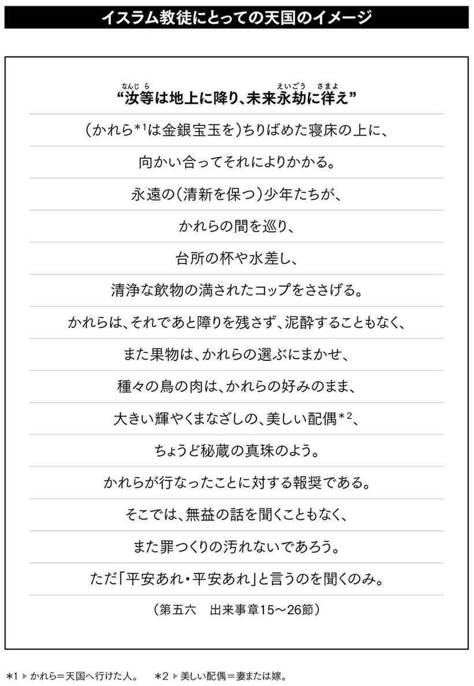
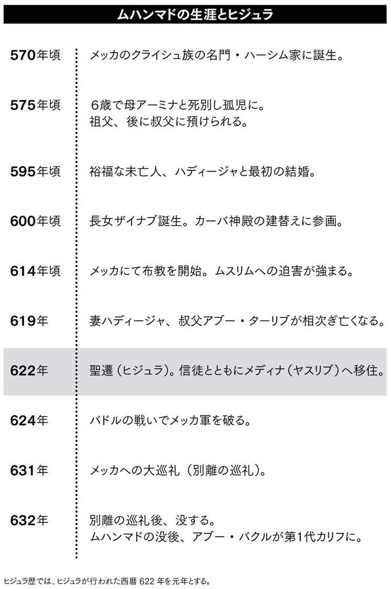
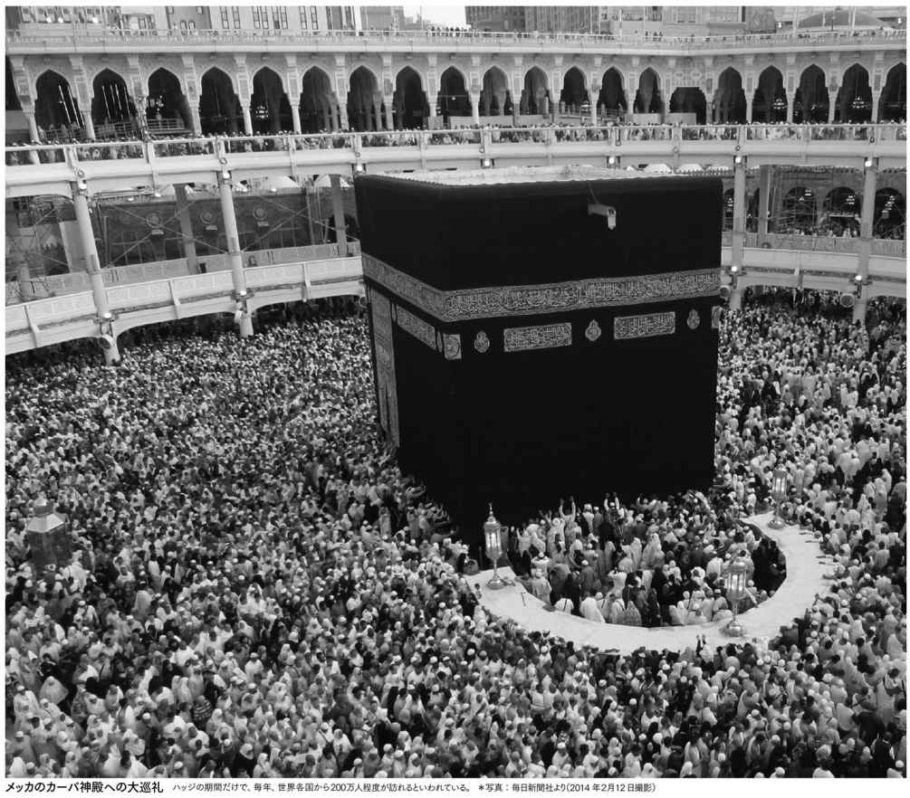

| 面と向かっては聞きにくいイスラム教徒への99の大疑問 | |
| 佐々木 良昭 | |
| (2015) | |
この作品は縦書きでレイアウトされています。
また、ご覧になる機種により、表示の差異が認められることがあります。
一部の漢字が簡略字で表示されていることがあります。
普段は「遠い国々の出来事」としてあまり関心を示さないのが日本人にとってのアラブ・中東世界ですが、今回、ＩＳ（ＩＳＩＬ・イスラム国）の暴走にともなう２人の日本人人質殺害事件により、私たちの視線はあの熱風砂嵐の世界に吸い寄せられました。そしていま、政府が「在外の日本人を守る」という強い姿勢を示さなければ、第二、第三の同様の日本人犠牲者が生まれかねないという強硬論が盛り上がりをみせているのを感じます。
フランス、ドイツをはじめとしたヨーロッパ諸国にも同様の風が吹き荒れています。それはイスラム教徒排斥運動に始まる、ユダヤ教徒などを含めた外国人排斥の動きです。
北アフリカをはじめとする旧植民地からの多数の移住者を抱えるヨーロッパ諸国では、〈自国人vs外国人〉という対立の構造が明確に表れ、端的な言い方をすれば、世界は「民族主義」や「排他主義」の方向に向かいつつあるわけで、当然、日本人もその民族主義の渦の中に巻き込まれてしまう危険性があります。
このまま民族主義が広がりをみせれば、それは強力なマイナス要因として世界経済に悪影響をおよぼすでしょう。その先にあるのは世界恐慌、そして第３次世界大戦。「世界中が狂気の方向に向かおうとしている」と、警告を発する識者も少なくありません。
私は19歳のときにイスラム教・スンニ派の一員となり、以来50年の歳月が過ぎ去ろうとしています。その間に知り合ったイスラム教徒たちは総じて紳士的であり、ホスピタリティあふれる人々でした。なによりイスラム教自体が慈悲と慈愛、寛容を説く宗教なのです。
ただし彼らは、国際社会の中で、いわれのない差別や弾圧を受けたなら、敢然と立ち向かうという強い信念をもっています。それは、イスラム教の教義が「正邪」を明確に、具体的に示しているからでしょう。イスラム教は、「まあ、いいじゃないか」と妥協しながら物事を解決するようにとは教えていないのです。
本書をご一読していただければ、「なんだ、イスラム教徒は日本人とあまり変わりがないじゃないか」と感じるはずです。同時に、「とはいえ、日本人のような安易な妥協はしないんだな」と、大小の違和感を覚えるはずです。
それは、自然環境や歴史的背景がもたらす違いからくるものでしょう。
熱風砂嵐という過酷な自然環境下にあって、「まあ、いいじゃないの。なんとかなるよ」と、自然に対して妥協したのでは、灼熱の太陽と砂嵐に飲み込まれ、生命の危機にもさらされるでしょう。
歴史的な背景も異なります。
日本は、長い歴史の中で外国によって侵略され、支配された経験は皆無だと言えます。
ところがイスラム世界、中でもアラブ世界には世界経済の血液とも言うべき「石油」が存在したために、欧米諸国による露骨な介入を受けざるを得なかったのです。イランで起きたホメイニ革命とそれ以前のパーレビ体制における欧米の露骨な干渉、サウジアラビアをはじめとした湾岸諸国への貪欲な関与、反米的とされたイラクやリビアへの関与などは、私たちの想像を超える厳しいものであったことは、国際的にもよく知られています。こうした過酷な干渉に対し、安易に妥協するということは、国家存亡の危機につながるのです。
アラブへの欧米の干渉を代行するようにして、さまざまなイスラム組織が誕生しました。アメリカとソビエトが対立していた時代には、アフガニスタンに「タリバン」という組織が誕生し、ついで「ムジャヒディーン」という組織が出現。その後には「アルカーイダ」が登場しました。また最近ではシリアのヌスラ戦線やＩＳ（イスラム国）が表舞台に立ち、おどろおどろしたイスラム教のイメージを世界中に流布しています。これらの組織には「イスラム原理主義」というレッテルが貼られ、極めて凶暴なイメージが固定化しました。
しかしこれらの組織は、決してイスラム教徒を代表しているわけではなく、あくまでもごく限られたイスラム教徒によって、欧米の利益を確保するためにつくり出された組織なのです。欧米に代わって代理戦争を行っていると考えればわかりやすいでしょう。
その事実を誤解して、日本人がイスラム教徒全体を間違ったイメージでとらえることがあれば、日本人は世界中のイスラム教徒を敵に回すことになりかねません。
なお、本書のタイトルで使用した『99』という数字には意味があります。
イスラム教の教えにあるアッラーの99の特性を示す『アスマーウ・ル・フスナー＝アッラーの優れた御名』からヒントを得て、その数字をタイトルに組み込んだものです。その御名にちなんでイスラムを説明すれば、イスラム教とイスラム教徒について少しでも理解していただけるのではないかと期待したからにほかなりません。
著者
第１章●イスラムの子供たちは何歳から『コーラン』を学びますか？
問１ ７万８０００字もあるという聖典『コーラン』の中で、「ここだけは読んでおきたい」というエッセンスはどこですか？
問２ イスラム社会では、聖典・コーランを子供にいつ頃から教えるのですか？
問３ コーランの開扉章には「慈悲深く慈愛あまねき」とあります。慈悲と慈愛のイスラム教徒が、どうして戦争を繰り返すのですか？
問４ イスラム圏で頻発している戦争の一番の原因は何ですか？ メディアの報道によると、石油や地下資源の争奪戦だという見解も目立ちますが？
問５ 中東地区の紛争の原因を読み解くために、私たちはどんなところに注目すべきでしょうか？
問６ 『アラブの春』は、小国であるチュニジアから火の手が上がりました。それには何か理由があったのですか？
問７ ムハンマド青年は、女性警察官に野菜を蹴飛ばされ、焼身自殺をしたそうですが、一般的にイスラム教徒は、どんなときに「キレる」のですか？
問８ イスラム世界では、男性の奥さんや恋人をほめない方がいいと聞いたことがあります。それにはどういう理由があるのですか？
問９ では、イスラムの男性に対しては、どんなことがタブーなのでしょうか？
問10 イスラム教徒が喜びを感じるのは、どんな言葉をかけられたときでしょう？
問11 日常生活を送る中で、イスラム教徒が最も恐れていることはなんですか？
問12 日本人は、「うちのバカ息子が」「ダメおやじがね」などと、身内を卑下するような言い方をしてしまうことがあります。イスラム圏でも同じですか？
問13 「公開斬首刑」や「石打ちの刑」はいまでも行われていますか？ 行われているとしたら、どうしてなのですか？
問14 「名誉の殺人」という言葉をよく耳にします。イスラム世界では、「名誉」を守るためには殺人も許されるのですか？
問15 「六信五行」の厳しい戒律に縛られる生活を、イスラム教徒の人々は煩わしいとは感じないのでしょうか？
問16 イスラム圏のアラブ諸国にも、いわゆる「マフィア」はいるのですか？
問17 イスラム世界にも、いわゆる浮浪者や乞食はいるのでしょうか？
問18 日本流に言えば、「ニート」「フリーター」と呼ばれるような若者たちも、けっこういるのですか？
問19 ところで、「アラブ」と「中東」とはどこが違うのですか？また、「ムスリム」と「イスラム人」との違いは？
問20 中東世界には「国王」の国と「大統領」の国とがありますが、いったいどこが違うのですか？
問21 そもそも、どのようにすればイスラム教徒になれるのですか？ 特別なことが必要ですか？
問22 近年、欧米などでもイスラム教徒が増加していると聞きます。どうしてなのでしょう？
問23 ヨーロッパではムスリムの「移民」が増えていると聞きます。移住先では、ムスリム同士の相互扶助活動が見受けられるのでしょうか？
問24 イスラム教徒はキリスト教徒と結婚できますか？ また、一度イスラム教徒になってしまうと、「や～めた！」というわけにはいかないのですか？
問25 結婚の話が出ましたが、そもそもイスラム世界では、どんなタイプの男性が女性にもてるのですか？
問26 イラクやシリアでぶつかり合っている「スンニ派」と「シーア派」は、いったいどこが違うのですか？
問27 イスラム教徒は、どうして自らの命を犠牲にして自爆できるのですか？
問28 聖戦で死ねば天国に行けるということは理解できました。では、単なる「自殺」の場合はどうなるのですか？
問29 イスラムの教えに対して、とても敬虔な国はどこですか？また、あまり敬虔でない国はどこですか？
問30 普通のイスラム教徒と「イスラム原理主義者」とは、どこが違うのですか？
問31 イスラム教の世界では最高権威だとされるエジプトのアズハル大学とは、どんな大学なのですか？
問32 教義に忠実な「イスラム原理主義者」を外見から判断することはできますか？
問33 イスラム原理主義組織は、世界中のどこにも組織されているのですか？
問34 「独裁者」と聞けば、「大衆を弾圧する指導者」を連想します。サダム・フセインやカダフィ大佐に見られた独裁は、「悪」なのでしょうか？
問35 昨日の「英雄」が、一転して今日は「大衆の敵」になるのはどうしてですか？
問36 イスラム世界には政治的集団、宗教的集団以外に「部族」という集団があると聞きました。部族とはなんでしょう。また部族長とはどういう人ですか？
問37 現在、中東のイスラム国家群の中で、一番力をもっているのはどの国ですか？
問38 先生は、『これから50年、世界はトルコを中心に回る』という著書を上梓しています。現在のトルコを、周辺諸国はどのように見ているのでしょうか？
第３章●ムスリムの女性のバッグにはどんな物が入っていますか？
問39 イスラム教徒から見て、ユダヤ教やキリスト教は、イスラム教とどこが違うのですか？
問40 実際のところ、アラブの人々は欧米に対してどんな印象を抱いているのでしょう？
問41 イスラム圏であっても、やはり日常生活において英語は必要なのでしょうか？
問42 中東の人々は、私たち日本人や中国人に対して、どんなイメージを抱いていますか？
問43 「日本人はよくわからん」というイメージだということですが、では、日本という国家に対してはどんなイメージなのでしょう？
問44 ところで、日本の女性は、イスラムの男性に人気があるのですか？
問45 日本には20万人あまりのイスラム教徒が住んでいると聞きました。布教活動をしている人以外には、どんなイスラム教徒がいるのですか？
問46 日本のビジネスマンと同じように、イスラム圏のビジネスマンにも、会社に対する「忠誠心」はあるのですか？
問47 制約の多いイスラムの女性は、どんなところでフラストレーションを発散しているのでしょうか？
問48 『アラブの春』で、服のボタンを上から三つ外した女性がいたということですが、その後、そういったファッションが流行ったのですか？
問49 イスラムの女性たちは、外出時、どのようなおしゃれを楽しんでいるのでしょうか？
問50 イスラム女性のバッグの中には、どんな物が入っているのですか？
問51 結局、イスラムの女性は差別されているのですか？ それとも、別の見方もあるのでしょうか？
問52 結婚後に問題が生じたときなどに、イスラムの社会では、離婚は簡単にできるのでしょうか？
問53 中東のイスラム圏でのファッションの流行発信地はどこですか？
問54 では、中東のキー国家、つまりこの国の動きに注目していれば、全体の動きが見えるという国家はどこですか？
問55 中東のイスラム圏で、最近増える傾向にある犯罪はありますか？
問56 男女の交際に厳しいアラブ諸国ですが、結婚前のデートは可能ですか？また若い男女はどんなところでデートをしているのですか？
問57 部族内の結婚が多いイスラム圏では、やはり子供を産めない女性は辛い立場なのでしょうか？
問58 まさかとは思うのですが......、イスラム教徒の女性は浮気しませんよね？
問59 アラブ世界の男性も、海外旅行に行けば、やはりハメを外したりするのでしょうか？
問60 イスラム教徒であっても礼拝を忘れたり、さぼったりすることもあるのですか？
問61 中東諸国には、どのような映画や小説がありますか。また、ヒットするのはどのような作品ですか？
問62 アラブ人がとくにこだわる持ち物はありますか？またどのようなものが人気なのですか？
問63 中東諸国の大富豪たちの間で、いま流行っていることはありますか？
問64 アラブの一般庶民の生活は大変だと思うのですが、生活防衛のために、とくに意識していることはありますか？
問65 アラブ世界にも占いはあるのでしょうか。また人々は占いを信じているのでしょうか？
問66 日本の文字と同様に、あのアラビア文字にも達筆と悪筆はあるのですか？
問67 イスラム圏の人々が、日常的によく使用する言葉やフレーズがあれば教えてもらえますか？
問68 アラブで耳にできるジョークや風刺には、どんなものがありますか？ また、それらが問題になることはありますか？
問69 日本の若者が、イスラム圏の大学に留学して勉強することはできますか？
問70 イスラム教徒が用いているヒジュラ暦（イスラム暦）というのは、私たちが馴染んでいる西暦（太陽暦）とはどこが違うのですか？
問71 イスラム圏では、銀行が利子を支払わないというのは、本当ですか？
問72 イスラム圏で好まれる日本人ビジネスマンとは、どんなタイプの人物ですか？
問73 日本の大手企業のビジネスマンの中で、独自の手法でアラブ世界に入り込み、成功を収めたような人物はいませんか？
問74 イスラム圏の人々が、いまこそ進出して欲しいと願っているのは、日本のどんな企業ですか？
問75 中東諸国に喜んでもらえるだけでなく、将来的に「うまくいくに違いない」と予測される日本のビジネスや商材はありませんか？
問76 昨今は、イスラム圏の人々も、やはり健康を意識したりするのでしょうか？
問77 イスラム圏で、身体にいいとされ常食されている食べ物はありますか？
問78 語学に堪能かつ優秀な日本のビジネスウーマンであれば、アラブ世界に食い込んでバリバリ仕事をするのは可能でしょうか？
問79 ネット通販の分野で、アラブ女性が実際に手がけているビジネスとしては、他にどんなものがありますか？
問80 イスラム圏の国旗には、月や星が多く用いられています。どんな由来があるのですか？
問81 中東地域では、もしかして普通の男性でもナイフや銃を持っていたりしますか？
問82 イスラム圏の男たちが「幸せだなあ」と感じる、日常のさりげない瞬間とはどんなときですか？
問83 １００万円、２００万円といったまとまったお金が入ったとき、イスラム圏の人々は何に使うのでしょうか？
問84 イスラム社会の家庭や主婦の間でも、節約するという概念はありますか？
問85 イスラム圏の人々から見て、「ここがヘンだよ、日本人」と感じるのはどんなところでしょう？
問86 メディアを賑わしている「ＩＳ（イスラム国）」って何ですか？ どのようにしてできた組織ですか？
問88 ＩＳの戦闘員になる人って、そもそもどんな人たちですか？
問89 ＩＳのリーダーであるバグダーディは、やはり突出したカリスマ性を備えているのでしょうか？
問90 ＩＳのメンバーの中には家族持ちもいるはずですが、家族はどうやって生活しているのですか？
問91 ＩＳは、戦闘員らに支払う俸給などの資金を、どうやって稼いでいるのですか？
問92 そもそも、どうしてトルコはそれほどまでにＩＳを応援するのでしょうか？
問93 世界的に見ると、どんな組織がＩＳを支持していると考えられますか？
問94 ＩＳの戦闘員って、やはり戦いになると強いのでしょうか？
問95 アメリカは当初、ＩＳをサポートしたはずなのに、手の平を返したようにして壊滅作戦に出たのはどうしてですか？
問96 ところで、アメリカはどこまで本気でＩＳと戦う気があるのでしょうか？
問97 リーダーのバグダーディは、結局は消えゆく運命にあるということですか？
問98 本家本元の原理主義組織・アルカーイダはいま、どうしているのですか？
７万８０００字もあるという聖典『コーラン』の中で、「ここだけは読んでおきたい」というエッセンスはどこですか？
答 まず第１章に当たる『開扉の章』と、第２章『牝牛の章』の「椅子の節」を読んでください。イスラムの真髄を５分で理解できます。
唯一神・アッラーが発した啓示が大天使・ガブリエルによって運ばれ、預言者・ムハンマドの口から一般人に伝えられた言葉を編纂したとされる『コーラン』は、全部で１１４章におよぶ。その文字数は実に７万８０００字。アッラーの導きの下での心のもち方や行為の在り方が記されていて、当然、原典ではアラビア語が用いられている。
これらがトルコ語やペルシャ語、日本語などに翻訳されているわけだが、翻訳されたものはコーランとは呼ばず、あくまでも〝コーランの解釈書〟という扱いだ。
日本で一般に用いられている解釈書は、井筒俊彦氏訳による『コーラン 上・中・下』（岩波文庫）である。本書でも、この著書から言葉を引用させていただくことにする。
イスラムのことを知りたいのなら、まずはこの『コーラン 上・中・下』を読破していただきたいところだが、その内容には想像を絶する重みと、はかり知れない深遠さがある。読破にチャレンジして発熱してしまった私の知人も複数いる。
聖典・コーランには、大の大人に知恵熱を出させてしまうほどの〝なにか〟が内包されているということだ。
そこで、私がよく受けるのが、「ここには、コーランのエッセンスが明示されているというか所はありませんか？」という質問だ。
一人でも多くの日本人にイスラム教のことを知ってもらいたいと思っている私は、間髪を置かず次のように答えている。
「開扉章（スーラト・ル・ファーティハ）を読みなさい！」
開扉章とはコーランの第１章に当たる全７節で、具体的には次ページに紹介したとおりだ。
これは「称えの７節」とも呼ばれ、すべてのイスラム教徒（ムスリム）はお祈りの前に必ずこれを唱える。いわば、イスラムの真髄が凝縮されていると言っても過言ではないか所だ。
「もう少し知りたいのですが？」
という熱心な方には、第２章『牝牛の章』の中の「椅子の節（アーヤト・ル・クルシー）」（次のページ）をお勧めしている。開扉章に続き、この椅子の節もイスラム教の真髄を突くか所だと言えるだろう。
イスラム社会では、聖典・コーランを子供にいつ頃から教えるのですか？
答 子供たちは、原則無料の塾で４歳くらいからコーランを学びます。中には小学校高学年でコーランを丸暗記するような神童もいます。
イスラム社会では、幼い頃から労働に駆り出されて勉強どころではない子供もいる。それでも一般家庭の子供たちは、４～５歳にもなれば各地域のモスクや町中の「コーラン塾」に出向いて、コーランの章句を暗誦するトレーニングを受ける。
コーラン塾は日本のような私塾ではなく、イスラム教徒の寄付によって運営されている。そのため、授業料は原則無料で、折に触れ指導者に対して野菜やパンを届ける程度でよい。
中には恐るべき子供もいて、小学校５～６年生にもなればコーラン１１４章をすべて暗唱できるという神童がいる。親にしてみれば、さぞや自慢の子供だろう。
イラクの元大統領・サダム・フセインも「幼くして全１１４章を暗誦する神童だった」とされているが、これは後づけの作られた伝説である可能性が大きい。
権力の座に就いた者は、その種の伝説によって自分を彩りたがる。
彼は、「オレは預言者・ムハンマドの家系につながる人間である」「ネブカドネザル大王（注・紀元前６２５年に建国された新バビロニアの王）の生まれ変わりである」などとも吹聴していたものだ。
イスラム圏では小学校はもちろん、中学や高校でもコーランの授業がある。章句はもちろんだが、コーランに準拠するイスラム法（シャリーア）を教え込むわけで、日本でいえば「道徳」の授業に当たる。コーランに基づき、「人はどう生きるべきか」と指導するわけだ。
大学ともなれば、「コーラン研究会」というサークルが各大学に存在している。日本の大学にも「仏教研究会」や「キリスト教研究会」といった宗教を研究するサークルはあるが、両者のレベルや活動内容はずいぶんと異なる。
というのも、イスラム社会における大学のサークル活動は、ムスリム同胞団やヌール党といったイスラム原理主義組織に直結した団体が多いからだ。単に学問や研究だけを行うのではなく、実際に政治活動をするサークルだと考えればわかりやすいだろう。
加えて、大衆蜂起が起きたようなときには、デモの先兵役を務めることもある。
同じ大学生であっても、日本の大学生と比較すると成熟度が違うし、真剣さの度合いにも温度差があるようだ。
コーランの開扉章には「慈悲深く慈愛あまねき」とあります。慈悲と慈愛のイスラム教徒が、どうして戦争を繰り返すのですか？
答 イスラム教は神の「教え」ではなく、「命令」。それも、曖昧ではない明確な命令です。その命令を曲げられないため、戦争が起きるのです。
かつて、敬虔なイスラム教徒として知られたエジプトの初代大統領、アブドゥル・ナセルは、「我々に握手を求めてくる者とは握手をしよう。握手を求めてこない者とは握手をしないことにしよう」という言葉を発した。
そして、アメリカが支援するイスラエルとの戦争（１９６７年・第３次中東戦争）に突入した。ここでいう「握手を求めてくる者」とは、同じイスラム教徒のこと。対して「握手を求めてこない者」とは、アッラーの命令に背くユダヤ教およびキリスト教徒を指している。
通常は、ＡとＢという国家間、あるいは地域同士でなんらかの問題が発生すると、お互いが高度な知的レベルに立って、冷静に話し合って問題を解決しようとする。そこには当然、相手に対する妥協がある。ＡはＢの意見に対し、同じくＢはＡの意見に対して妥協をすることによって、問題解決のための着地点を見出すことになる。
ところがイスラム教には、その妥協という概念がない。
なぜなら、天啓宗教であるイスラム教は「神の教え」ではなく、「神の命令」に他ならないからだ。
それも曖昧なものではなく、「こうしなさい」「これをやってはいけない」と非常に具体的に命令が下されている。そして、神の命令に背いた者には罰が与えられる。
コーランにはこうした神の命令と罰が明確に記されているがゆえに、人間と人間が神の教えを曲げて妥協することができない。だからどうしても戦争が起きてしまうのである。
その一方で、コーランは慈悲と慈愛を説いている。
たしかに慈悲と慈愛はイスラム教の真髄だが、だからと言って神の命令に背く者との戦争を禁じているわけではない。実際、預言者・ムハンマドの時代、バドルの戦いを皮切りに、ムハンマド自身も手傷を負ったウフドの戦い、部族連合の大軍を撃破したハンダクの戦いなど大小60回を超える戦闘があった。
そのうち26回はムハンマド自身が指揮をとっている。
おわかりのように、裏腹なようだが、イスラム教は一方で慈悲と慈愛を説き、その一方では神の命令に背く者に対しては戦争も厭わない宗教なのである。
イスラム圏で頻発している戦争の一番の原因は何ですか？ メディアの報道によると、石油や地下資源の争奪戦だという見解も目立ちますが？
答 宗教や領土の問題と紛争の種は各種ありますが、その裏には地下資源の争奪戦という要因がからんでいるのは確かです。
たとえば２００３年に起きたアメリカ軍のイラク侵攻のとき、中東および国際政治が専門の複数の識者たちが、「これは石油のための戦争ではない。なぜなら、戦争の裏で石油会社はまったく動いていないではないか」と論評していた。
しかし、今やあの侵攻はエネルギー資源を巡る戦争だったという事実が明らかにされている。
イスラエル対アラブ諸国の戦争にしても、宗教間の対立という構図はあるものの、一方では石油に絡んだ利権を巡る争いだという見方ができるだろう。
石油の利権を巡る紛争は、アラブ諸国同士、つまりイスラム国家間にも見受けられる。チュニジアとリビア、あるいはアルジェリアとリビアの紛争などはその典型だ。
さらには、現在も続いているイランとアラブ首長国連邦の領土問題にしても、事情は同じ。大小トンブ島とアブー・ムーサ島というペルシャ湾に浮かぶ島を巡る領有権の争いに見えて、実はそれらの島の周辺に海底資源が眠っているという事実が大きな原因となっている。
ちなみにこの３島に関しては、現在のところいずれもイランが占領し、アブー・ムーサ島には同国の軍事基地が建設されている。
アラブ首長国連邦としては、「あれはうちの島だ！」と主張はしているものの、イラン側に完全に無視されて交渉のしようがないというのが実状だ。
となれば、残されているのは軍事力による解決、つまり戦争だが、イランの圧倒的に有利な軍事力の前では、アラブ首長国連邦の軍隊はなす術もない。それでもアラブ首長国連邦は、「あれはうちの島だ！」と主張し続け、引き下がろうとはしない。
ちなみに、これら３島は、島といっても、そこに水が湧き農耕ができて複数の住民が生活しているような島ではない。実際、大小トンブ島はほぼ無人島なのである。アラブ諸国に限らず、かつては、そのような人の住めない島の領有権が問題になることはほとんどなかった。
それが、海底資源の技術開発が進む中で、これまで不毛地帯と思われていた場所が石油や天然ガスという価値を産み出すようになったのだ。
トンブ島しかり。アブー・ムーサ島しかり。さらに言えば、日本と中国間の尖閣諸島問題や日韓の竹島問題もまたしかりだ。
中東地区の紛争の原因を読み解くために、私たちはどんなところに注目すべきでしょうか？
答 ずばり、アメリカの動きです。アメリカの石油会社や軍需産業が中東で利益を上げるために、紛争の火をつけていることが多いのです。
中東での紛争の原因を読み解くに当たって注視すべきは、アメリカやヨーロッパ諸国、中でもアメリカの動きだ。アメリカは長年に渡ってイランとの緊張関係を続けているが、その狙いはイランで産出される石油やガスにある。
端的に言えば、イランの石油やガスをどうやって自分たちの思いどおりに、あるいは言いなりに生産させるかということを考えているわけだ。
一方、イランとしては、あくまでも自国の国益を優先させたいため、石油やガスを守ろうと厚い壁で防御する。
そこで、アメリカはこの壁を突き破ろうと、「イランは核兵器を開発する」という言い方で国際世論を味方につけ、周辺諸国や世界の不安をかき立てる。そして、後述するように、この「不安感」がアメリカにビジネスチャンスをもたらすのである。
本音を言えば、イランが核兵器を開発する気があろうがなかろうがそんなことは二の次であり、これはもうプロパガンダ、つまりアメリカの宣伝戦だと思ったほうがいいだろう。「イランは核開発をする危険な国なのだ」と世界に認知させることにより、紛争に火をつけ、結果的にイランの石油を牛耳るという戦略に出ているわけだ。
シリアの場合も同様だ。また、２０１０年にチュニジアの地方都市に火が付き、エジプト、リビアへと火の手が広がった『アラブの春』にしても同じ構図が見受けられる。つまり、中東の紛争の多くは、エネルギーを確保したいアメリカが火をつけ、それにヨーロッパ諸国が追従するという形で起きている。
アメリカにとっての中東地域のもう一つの魅力は、兵器市場としての存在だ。
かつてのアメリカは大型車が世界中の人気を博し、自動車産業は巨額の貿易黒字に貢献したが、コストパフォーマンスの悪さから、日本や欧州、韓国の中型車や小型車に盟主の座を譲り渡してしまった。
アメリカ経済を支えるもう一つの柱であった繊維産業も、たとえば主力製品である『Ｌｅｅ』や『Ｌｅｖｉｓ』といったジーンズを例にとれば、現在はアメリカ国内ではほとんど生産されず、中央アジアの国々に生産をゆだねている。シャツ類も、生産しているのはインドネシアやバングラディッシュだ。アメリカの高い人件費がネックになっているのは言うまでもない。
その結果、現在のアメリカで外貨を獲得できるのは農産品と兵器しかない。中でも特筆されるのが兵器だ。なにせあのミサイルの値段一つとってみても、格安のもので１発数百万円、通常のミサイルで数千万円、高額のものになれば１発１億円を超える。
戦争になればそれらが雨あられとバンバン発射されるのだから、アメリカの兵器産業にしてみればこたえられない。「どこかで紛争が起きて欲しい」と願っているのが本音だろう。
世界の兵器産業を主導しているのは、もちろんアメリカである。しかも、絶えず新兵器が開発されているため、10年に一度は棚卸をしなければならないとされている。つまり、最低でも10年に一度はどこかで戦争が起きてくれないと、アメリカの兵器産業としては死活問題だ。そして、兵器産業は強力な圧力団体としても知られている。
そこでアメリカ政府としては、中東地区に常に危険な状態を演出し、当該国に自国の武器を売り込む。あるいは不安を感じている周辺国に対し、「あなたの国の安全を保障してあげるよ」という名目で自国の武器を売りつけ、あるいは軍隊を駐留させる。
さらに言えば、アメリカには「ブラックウォーター」のような訓練を受けた要員と兵器を有する民間軍事会社が次々に誕生している。この業界にとっても、中東の紛争は商売のタネとなる。
つまり、中東の紛争の背後にはアメリカ経済の御都合が存在していて、アメリカはサバイバルのために中東地区の紛争に火を付けているということだ。
『アラブの春』は、小国であるチュニジアから火の手が上がりました。それには何か理由があったのですか？
答 チュニジアは人口１０００万人あまりの小国で、紛争の火をつけやすかった。〝火つけ役〟のアメリカには、真の狙いがあったのです。
ここで、西側が『アラブの春』と呼んだ革命劇の発端を振り返ってみよう。
私がアラブ在住の複数の知人から直接耳にした情報によると、２０１０年４月にアメリカはチュニジア、エジプト、リビアをはじめとしたアラブ各国のインテリ層の若者を招いて、ある会合を開いている。
この会合は某ウェブ会社の主催で、名目は『国際政治と経済状況のレクチャー』ということになっていたが、明らかにアメリカの政府筋が働きかけて実現したと考えられる。
実はこの場で、モバイル（携帯電話）を使用した大衆伝達のノウハウを教えたのである。うがった見方をすれば、アメリカがアラブ地域のうぶな若者たちに対し、モバイルを活用した革命を扇動したことになる。
その８か月後の２０１０年12月のことだ。チュニジアの地方都市の青空市場で、大学を出たものの仕事がなく、無許可で野菜売りをしていた青年、ムハンマド・ボアジシが女性警察官にとがめられ、売り物の野菜を蹴飛ばされてしまうという事件が起きた。
公衆の面前で、警察官だとはいえ女性に売り物の野菜を蹴飛ばされたのである。イスラムの男が、なにより大切にしている「面子」を踏みにじられたということだ。
屈辱にブチ切れたムハンマド青年は、その場で油をかぶって焼身自殺をしてしまった。その声と映像とがモバイルを通じて全国に流され、各地でまたたく間に抗議のデモや暴動、商店略奪や鉄道駅への放火事件が起き、ベン・アリ大統領（当時）の肖像画は引き裂かれてしまった。
そして、わずか１か月後の２０１１年１月には政権が崩壊。ベン・アリは友好国であるサウジアラビアに逃亡した。この革命はチュニジアの国花の名前をかぶせて「ジャスミン革命」と呼ばれているし、モバイルが有効に働いてアメリカの〝作戦〟が奏功したことから「モバイル革命」とも呼ばれている。
ベン・アリの逃亡寸前に発せられたヒラリー・クリントン米国務長官（当時）のコメントが、アメリカの中東戦略を象徴していた。
「アメリカは民主主義を支持し、大衆の行動を支援する！」
皆さん、上手にモバイルを活用して、存分に革命をおやりなさい。私たちがついていますよ、という意味にもとれるメッセージだ。
チュニジアで火がついたモバイル革命の火の手はその後あっという間にエジプト、そしてリビアへと広がっていくわけだが、発火点となったムハンマドの事件が偶発的なものだったのか、あるいはアメリカの工作によるものだったのかまでは明らかにされていない。
ただし、チュニジアには革命の火の手が上がりやすいという背景があったのは事実である。
この国は、かつてはフランスが宗主国であった人口１０００万人あまりの小国で、フランス留学をして西側世界の風を浴びた若者がごまんといる。
教育水準が高いし、地中海をはさんですぐ向こう側はイタリアやフランスという立地条件だから、西側の情報がリアルタイムで流入しやすい。
インテリ層が多いということは、とりもなおさず政権に不満を抱く者が多いということ。そして、何らかの変革を起こそうとしたら、起爆剤になりやすい環境にあるということだ。案の定、ムハンマド青年の事件のわずか１か月後には、ベン・アリ政権が崩壊している。
ジャスミン革命の火の手は即エジプトに広がり、ムバラク大統領が辞任。
両国に挟まれたリビアでも２０１１年10月にはカダフィ政権が崩壊した。
このシナリオはアメリカのもくろみ通りであったと考えられる。
アメリカがチュニジアに期待したのはあくまでも起爆剤としての役割であり、政権転覆のターゲットの本命はエジプトでありリビアだったはずだ。
ムハンマド青年は、女性警察官に野菜を蹴飛ばされ、焼身自殺をしたそうですが、一般的にイスラム教徒は、どんなときに「キレる」のですか？
答 「絶対に許せない！」とキレてしまうのは、自らのプライドを傷つけられたときです。
かつて、私が返信した１通のメールの文面があだとなり、親しくメールをやりとりしていたイスラム圏の大学教授との音信がパタッと途絶えてしまったという苦い経験がある。
イスラム教徒は、公安＆秘密警察（ムハーバラート）の目を絶えず気にしていることもあり、同僚に対してもなかなか本音を漏らそうとしない。けれどもそのぶん、海外の友人に対しては気を許し、胸襟を開いて接してくるところがある。
私が受けた彼のメールの内容は、端的に言えば、大学の同僚に対するジェラシーだった。つまり、「○○は口先だけで能力もないのに、政府高官に取り入って、俺より早く出世しやがって......」といった感じの内容だった。
受信した私は、うっかり、「アラブの男たちは意外に焼き餅焼きだからね......」と返してしまった。私としては、あくまでも一般論を軽く伝えたつもりだった。
ところが彼には、「おまえは焼き餅焼きだ」と伝わり、逆鱗に触れてしまったらしい。以来、何度メールしても返信はなかった。
プライドを傷つけられたときの矛先は、他人だけでなく身内にも向かう。
私がリビア大学神学科に留学していたとき、友人のマンションでパーティが開かれたことがある。その席では軽い幻覚作用のある『オクトーバー・シックス』という紅茶がふるまわれて、参加者は皆、ハイになり、アラブ音楽に合わせて踊り出した。召使の女性も踊るし、ご婦人たちも踊る。
すると、ご主人に伴われて来ていたある新妻が、「私も踊りたいわ」とご主人に申し出た。幻覚紅茶のせいで大胆になっていたのである。「そんなはしたないことはやめろ」と本気で止めるご主人と諍いとなり、ついには新妻がご主人の顔を引っ掻いてしまった。頬に血がにじむ。
ご主人としては他人の前で従順であるべき新妻に顔を引っ掻かれ、出血してしまったのである。そこで彼は、ポケットからおもむろにピストルを取り出し、銃口を彼女に向けてしまったのだ。このときは周囲の人々が慌てて押さえ込んだため、ことなきを得たが、まさに一触即発。
プライドを傷つけられたと感じたら、その回復のため、矛先は新妻であろうと身内であろうと構わず向かうのである。
イスラム世界では、男性の奥さんや恋人をほめない方がいいと聞いたことがあります。それにはどういう理由があるのですか？
答 「嫉妬している」と誤解される恐れがあるからです。イスラム圏には、「嫉妬のまなざしにさらされると、悪いことが起きる」という言い伝えがあります。
日本では、「あなたの奥さんは美人だね」とほめられて悪い気がする男はいないはずだが、イスラム圏では、よほど親しい間柄でない限り、その種のほめ言葉は安易に投げかけないほうがいいだろう。
というのも、イスラム圏には古代から、「邪視、すなわち悪意のこもった嫉妬のまなざしにさらされると、悪いことが起きる」という言い伝えがあるからだ。
自分の持ち物や立場に対して相手がジェラシーの炎を燃やしたとき、その怨念が自分に対して病気や交通事故など、よからぬことをもたらすというのである。
実際、私がトルコの知人に対し、挨拶用語のつもりで、「いい時計をしているね」とほめたところ、その場で腕から外して「あげるよ！」と気前よく渡され、とまどってしまったことがあった。別の例では、やはり挨拶のつもりで着ているスーツをほめたところ、洋品店に連れていかれて同じものをプレゼントされ、驚かされたこともある。
このような反応は、彼らの気前がいいからではない。嫉妬の目を恐れるからに他ならない。あまりしつこくはほめないことだ。
奥さんや恋人をあまりほめるなという警告もその延長線上にある。
つまり、「美人だね」とほめると、嫉妬していると誤解される危険性があるからだ。まさか、「じゃ、あげるよ！」と妻をプレゼントしてくれることはないにしても、大小のわだかまりを残す可能性はある。
トルコをはじめとした中近東の雑貨屋をのぞくと、『ナザール・ボンジュウ』というお守りが売られている。青いガラスの中に白、水色、青色の着色で目玉が描かれたもので、観光客のお土産品の定番だ（問50の写真参照）。
これは邪視から災いをはねのけるというお守りであり、イスラムの人々はこのお守りを軒下に吊るし、あるいはポケットにしのばせている。それほど「邪視」を恐れているということだ。
妻や恋人をほめたいのなら、「敬虔なイスラム教徒だね」、「やさしい女性だね」などと、あくまでも内面をほめること。間違っても、美人だ、スタイルがいいなどと、その外見に触れないほうが無難だ。
では、イスラムの男性に対しては、どんなことがタブーなのでしょうか？
答 「がんばれよ！」という感じで、お尻をポ～ンとたたく行為。これは絶対にタブーです。妙な誤解を与えてしまう可能性があります。
次で紹介したのは、２００３年４月にイラクのサマーワに自衛隊が派遣されたとき、私が『イラク駐留中の注意事項』と題して隊員に向けて書いた依頼原稿からの抜粋だ。
挨拶や動作、食事など多岐に渡る注意がある。表にはないが、「相手の尻を叩いて励ますな！」という注意も行った。
私たち日本人の間では、「おい、がんばれよ！」や「よくやった！」という意味で、相手のお尻をポ～ンとたたくのはよく目にする光景だ。けれども、イスラムの男性に対しては、これはタブーの行為だ。
私たちの間では親愛の情を示す行為でも、イスラム圏では、「私はあなたのオカマを掘りますよ」という意思になるし、あるいは、「あなたはオカマですね」という意味にとられることもある。
つまり、ホモセクシャルの合図だというわけだ。
同じく、疲れていても、イスラムの男の前ではうつ伏せには寝ない方がいい。あくまでも相手によるが、「私のオカマを掘ってもＯＫですよ」と誤解されることがあるからだ。
さらに言えば、「握手と、抱き合いながらの挨拶以外は、相手の身体に触れない方がいい」というアドバイスもした。
「お尻を叩いて励ますな」、「うつぶせに寝るな」、そして「なるべく相手の身体に触れるな」といった一連のアドバイスでおわかりのように、男女の交流が厳しく制限されているイスラム圏においては、その代償行為としてのホモセクシャルは、あくまでもひそかに行われるものではあるが、比較的ポピュラーだと言える。
２０２０年の東京オリンピックに向けて、多くのイスラム教徒の来日が予測されている。
豚肉やアルコールをはじめとした『ハラーム（禁忌）食』が話題になっているようだが、その他にも、タブーや注意すべきことは多い。
「相手が勧めるまで座らない」「あまり大きな声で話さない」「年配者が相手なら、聞き役に徹する」「必要以上のケチはバカにされる」「ツバを吐かない」など、イスラム教徒と余計な摩擦を避けるために心がけておきたいことは各種ある。
そして、その多くは日本人同士の間でも心がけておくべきマナーである。
イスラム教徒が喜びを感じるのは、どんな言葉をかけられたときでしょう？
答 宗教上のことです。「あなたは敬虔なイスラム教徒ですね」とほめられれば、例外なく喜びます。中でも、『五行』の一つである「メッカ巡礼」を済ませたということは最大の誇りです。
イスラム教徒が守るべき信仰の方法に『六信五行』がある。中でも『五行』の一つであるメッカ大巡礼（ハッジ）は、アッラーに対する一生に一度のお務めとして聖典・コーランでも義務づけられている。
メッカはサウジアラビア・マッカ州のアブラハムの谷にある。
ハッジでは、５日間に渡って同所のカーバ神殿に巡礼し、「石投げの儀式」をはじめとした一定の儀式をとり行う。
その際、旅費や滞在費を含めると費用が重くのしかかる。経済的な事情から、行きたくても行けない人も少なくないというのが現実だ。
とくに中東の田舎町に住む人や、インドネシアやマレーシアといった東南アジアのイスラム教徒にとっては、まさに一世一代の大旅行となる。
そのため、インドネシアの銀行ではイスラム教徒に向けて『メッカ巡礼貯金』という金融商品を提供しているし、マレーシアにはメッカ巡礼のためだけに貯金をする『メッカ巡礼基金』という金融機関もあるほどだ。
それだけに、メッカ巡礼を済ませたということは、イスラム教徒には大きな誇りとなる。
そこで、一定年齢以上で、比較的裕福な暮らし向きだと思われる人に対しては、あえて次のように問いかけてみるのもよい。
「ハッジにはもう行きましたか？」
そして、相手の反応をうかがってみるのだ。
「はい、行きましたよ。石投げもしました」
自慢気な表情を浮かべ、そんな感じで答えたなら、返す言葉は次のようにする。
「それは素晴らしい。あなたは敬虔なるイスラム教徒なんですねえ」
このように、思い切りほめ称えることだ。
立場や年齢、国籍に関係なく、「敬虔なるイスラム教徒」というのは、彼らが最も喜ぶほめ言葉である。
日常生活を送る中で、イスラム教徒が最も恐れていることはなんですか？
答 情報警察、あるいは公安警察と呼ばれる、「秘密警察」です。エジプトにもシリアにも、イスラム圏のすべての国に存在しています。
各国にいる秘密警察（ムハーバラード）の存在を、イスラム社会の人々はものすごく恐れている。
秘密警察の人間は、制服を着てふんぞり返っているわけではない。一般人に身をやつしているから、壁に耳あり障子に目ありで油断ならないのだ。
彼らは日本の公安警察とは違い、逮捕して連行し、拷問する権利を有している。そして、捕まった者が拷問死することも珍しくない。
マークしているのは、国民の反政府的な発言である。そのため、同じイスラム教徒同士であり、兄弟のように親しく付き合っている間柄ても、政府批判はしないのが普通だ。
つまり、日本でいうところの床屋談義や赤提灯でのおやじ同士の政権批判のような光景は、イスラム圏では見受けられないということ。代わりに、チャイ屋で紅茶などを飲みながら、くだを巻いたりしている。
「最近の若い男ときたら......」
「欧米人みたいな恰好をしているな」
「けしからん！」
などといったたわいもない話を交わして、盛り上がっているわけだ。
もっとも、前述したように、外国人に対してはその限りではない。
実際、私も各国の大学の研究室やホテルのロビーなどで、イスラム教徒たちに舌鋒鋭い反政府的な発言を投げかけられることがある。彼らもはけ口が欲しいわけだ。
そのことに関して、私の古い友人の１人は次のように言っていた。
「外国人であるササキの口から、オレの国の人間にこの話が漏れることはないだろう。しかし、同じ国の人間にそれを言うとまずいことになる。誰かに、オレがこんなことを言っていたと密告される恐れがある」
それでも私が、声を潜めながら、
「おい、おい、そんなことを言って、ムハーバラードは大丈夫なのかね？」
そう注意すると、ハッと表情を緊張させ、思わず周囲を見渡していたものだ。
日本人は、「うちのバカ息子が」「ダメおやじがね」などと、身内を卑下するような言い方をしてしまうことがあります。イスラム圏でも同じですか？
答 あり得ません。とくに自分の父親や母親に対しては、卑下することは絶対にあり得ません！
日本人同士の会話の中で、「うちのバカ息子が」「ダメおやじがね」という場合、ある種の謙遜のニュアンスが含まれていることが多い。
だが、自分の家族と家系、さらに言えば部族や国家に対するプライドが非常に高いアラブ人の間では、その種の謙遜はまずあり得ない。
とくに父親や母親に対しては絶対にあり得ないと言っていいだろう。
仮にアラブ人が「うちの息子、バカでな」と口走ったとする。それにつられて、うっかり「ほんと、おたくの息子はバカだよな」と返したとしたら、とんでもない結末が待っているはずだ。場合によっては血を見ることになるかもしれない。
これは、国家と国家の問題に関しても言えることだ。
たとえば、日韓の従軍慰安婦問題。あなたがアラブ地区に行って、
「話題になっている日本兵の従軍慰安婦のこと、どう思う？」
と、問いかけられたとする。
「日本は過去、朝鮮人の女を捕まえてひどいことをやったんだよ。中国でも、さんざん悪さをやってる。不名誉な話だよ」
などと卑下しようものなら、まず間違いなく、
「あんた、本当に日本人なの？」
「おまえにはプライドがあるのか？」
という目で見られてしまうはずだ。
あなたの本音は「そんなひどいことをした日本人もいるんですよ。でも、私は良識派ですから」ということであったとしても、その思いは彼らに通用しないはずだ。
たえず部族紛争や国境紛争の危機にさらされながら生き抜いてきた彼らにしてみれば、卑下するという姿勢は相手に弱みを見せることにつながる。
そして弱みを見せれば、相手はその弱みに徹底的に付け込んでくる。その事実を歴史に学んでいる彼らは、基本的に自分と自分の家族、あるいは自分の部族しか信用していないこともあり、他人に攻撃の隙を与えるような発言は絶対にしないのである。
「公開斬首刑」や「石打ちの刑」はいまでも行われていますか？ 行われているとしたら、どうしてなのですか？
答 公開の斬首刑はサウジアラビアや一部の原理主義者の間で、石打ちの刑はイランやアフガニスタンでたまに見受けられます。見せしめの意味合いが強いと考えられます。
イスラム諸国での一般的な処刑法は絞首刑か銃殺刑だ。
けれども、サウジアラビアと一部の原理主義組織、たとえばＩＳ（イスラム国）やヌスラ戦線（シリアの反政府武装組織）、さらにソマリア、ナイジェリア、マリなどに存在するイスラム原理主義組織では、今でも公開の斬首刑を行っている。
人口当たりの死刑執行数が世界最多とされるサウジアラビアには、公開と非公開の斬首刑がある。公開の場合は、モスクの近くにある通称「首切り広場」と呼ばれる白いタイルが敷き詰められた場所で、金曜日の礼拝後に死刑執行人の手によって行われている。
石打ちの刑が行われているのはイランとアフガニスタンだ。
処刑場で下半身を土に埋められた罪人に、観衆たちはトラックで運ばれてきた石を死ぬまで投げ続ける。夫以外の男性と不倫関係をもつ「姦通罪」に問われた女性が、この刑に処せられることが多いようだ。
公開の斬首刑も、石打の刑も多分に「見せしめ」の意味合いが強い。見せしめにして恐れさせ、同様の犯罪が起きないようにという意図によるものだ。
斬首刑は一瞬にして処刑が終了するが、石打ちの刑は長時間の苦痛を味わったうえで死を迎えることになる。
なにしろ、途中で死なないようにと加減しながら、３日間にも渡って刑は執行される。最後の３日目の昼前に、大きな石で頭をつぶされるとも言われている処刑法である。
最近はネット上で処刑写真が公開されることもあり、「残虐だ！」「野蛮すぎる！」といった国際的な世論も巻き起こっているようだが、そのあたりのことを知人のイスラム教徒に質問してみたことがある。
すると、彼らは一様に答えたものだ。
「悪いことをしたんだから、仕方ないよ」
このような意見が大半だった。
神の命令に背いた者には、どんな罰が与えられても仕方がないのである。
「名誉の殺人」という言葉をよく耳にします。イスラム世界では、「名誉」を守るためには殺人も許されるのですか？
答 イスラム国家には、いわゆる「近代法」の他に、シャリーア（イスラム法）という教義があります。シャリーアでは、名誉の殺人が許されているのです。
未婚の娘が男とセックスをしているとか、妻が不倫をしているという噂は、どこの国でも近辺に広まりやすい。それが事実であることが判明した場合、
「そんなふしだらなことを許すほど、私たち家族は甘くない。厳格な対応をして名誉を守ってみせる！」
とばかりに、父親が娘を、夫が妻を、あるいは兄が妹を殺害してしまうことがある。これがいわゆる「名誉の殺人」だ。
私たちの認識からすれば、たとえ名誉を守るためであっても、殺人は殺人である。まして少子高齢化の近年では、親による子殺しや虐待に対する量刑は、以前よりも重くなる傾向が強まっている。
もちろんイスラム国家でも、人を殺せば近代法によって殺人罪が科せられる。
ただし、それが名誉の殺人であれば、事情は異なる。逮捕され、法廷で近代法によって裁かれるという運びにはならないのだ。
というのも、イスラム国家にはイスラム法（シャリーア）と呼ばれる、もう一つの法律があるからだ。
より正確に言えば、イスラム法とは信徒の生活に深く根づいているイスラム教の教義である。神の啓示をイスラム法学者が解釈し、その解釈に基づいた判断を社会生活に適用したものだ。
そして、イスラム法は近代法よりも重い！
なぜなら、それは神の命令に基づいているからだ。
とくに宗教的・道徳的な要素を伴う犯罪の場合、イスラム法を優先する。そして、イスラム法では「名誉殺人」は許されているのである。
その犯罪がイスラム法に沿ったものであるか否かを判断するのは、各地域にいるイマーム（イスラム教の指導者）である。イマームは部族長を兼ねた長老である場合が多い。
名誉殺人に限らず、遺産相続や婚姻などに関しても困りごとがあれば、地域の住民はこのイマームのところに相談に行く。イマームは、あくまでもイスラム法に沿った解決策を示してくれるのである。
「六信五行」の厳しい戒律に縛られる生活を、イスラム教徒の人々は煩わしいとは感じないのでしょうか？
答 20代、30代の若い層では、「六信五行」の一部を煩わしいと感じているかもしれません。ただし、30代後半にもなれば、総じて敬虔なイスラム教徒になります。
私の古くからの知り合いの１人であるクウェート人の男は、30代の前半まではビールをガンガン飲んでいたし、１日５回と義務づけられている礼拝（サラート）をさぼることもあった。断食（サウム）も忠実には実践しないという、不真面目なイスラム教徒だった。
ところが30代も半ばを過ぎるとビールはピタっと止めたし、断食や喜捨（ザカートとサダカ）にも熱心に取り組むようになった。50代になったいまは、大巡礼（ハッジ）を予定しているのだという。
イスラム教徒は子供の頃からコーランとともに育てられる。さまざまな義務や禁忌事項を叩き込まれながら成長するわけだが、10代、20代という盛りのときには、あえてコーランの教えに背き、非宗教的なことをやってみたがる者も一部にはいる。
「六信五行なんて、煩わしい」と感じる若者もいるに違いないのだ。
ところが、そんな若者も30代後半にもなれば、敬虔なるイスラム教徒へと変貌を遂げる。
というのも、イスラム教徒は30代半ばになると周囲にはいっぱしの大人だとみなされ、当人にも大人の自覚が生まれるからだ。
そして40歳にもなれば、成功を収めて１億、２億の現金をもっているような男がゴロゴロいる。50代になっても自立していない男もいる日本社会とは成熟の速度が違うのである。
成熟するに従って、彼らが身近に感じるようになるのが、子供の頃から叩き込まれた「地獄」の光景だ。
イスラムの教えに従わず、正義の所業を行わなかった者は、最後の審判によって地獄に送られる。そこで業火の炎に焼かれて、永遠にもだえ苦しむことになる。これは、恐怖である。
そこで、私の友人のクウェート人のように、ある時期を境目にして『六信五行』（問10参照）の義務を忠実に遂行するようになる。
私が見聞したところ、その境目は30代の半ばから後半。40歳になれば、ほとんどの男が敬虔なイスラム教徒だと思って間違いない。その敬虔さは歳を重ねるに従って、つまり「死期」が一歩、二歩と近づくほど濃密になる。死期が近くなるにつれて、先祖返りするというわけだ。
イスラム圏のアラブ諸国にも、いわゆる「マフィア」はいるのですか？
答 どの国にもいます。きわめて統制が厳しい湾岸諸国にはマフィア組織はありませんが、マフィアに似た不良集団が犯罪に手を染めています。
マフィアの語源はアラビア語の「マクフィーア」であり、「隠れる者」という意味だ。もともとは北アフリカのイスラム圏の部族集団が、他部族との抗争に備え、男たちを集めて作った私兵組織がルーツだとされている。
各部族集団が自分たちの利益や財産、あるいは名誉を守るために屈強な連中を選抜して、秘密裡に自衛組織を作ったわけだ。
やがてこの屈強な連中は独立してプロフェショナルの戦闘集団となり、各地に散らばっていく。その中に19世紀の半ば、イタリーのシシリー島に渡った者たちがいた。その頃は農村の支配権が貴族から農村のブルジョアジーに移行する過程であり、彼らは農村ブルジョアジーたちに私兵として雇用されたのである。
さらにその一部が、19世紀末から20世紀初頭にかけてアメリカに移民し、大都会を中心に勢力を拡大していくことになる。彼らは「マフィア」と呼ばれ、血の結束を誇るその組織は「ファミリー」と呼ばれている。まさに映画『ゴッドファーザー』の世界だ。
以上でおわかりのように、マフィアのルーツは北アフリカの部族社会にあり、現在も部族社会の色合いが濃厚な中東世界に広く存在している。
トルコにもエジプトにもイランにも、どこの国にもマフィアはいるし、政財界の大物がマフィアだったというケースもある。彼らの資金源はあらためて言うまでもなく、麻薬＆武器や国宝の密輸、人身売買、売春といった非合法活動だ。
もっとも、統制の厳しいサウジアラビア、アラブ首長国連邦、クウェート、カタール、オマーンといった湾岸諸国にはマフィアはいない。
その代わり、考え方によってはマフィア組織よりも悪質な不良集団がいる。それが、王家のプリンスを核とする犯罪者集団だ。
たとえばサウジアラビアの王族を例にとれば、分派の分派まで含めると６０００～７０００人もいるとされている。
王家からそれぞれの王族に対してお手当が出る。直系の上位の連中は相当額の王族手当をもらえるものの、分派の分派のそのまた分派ともなれば、日本で言えばサラリーマンの給料ほどの手当てしか支払われない。
したがって、王族の中でも特に若者層の中には不満を感じる者が当然いる。
１９７５年３月25日に、サウジアラビアのフアィサル国王（当時）が甥のファイサル・ビン・ムサーイド王子によってピストルで撃ち殺されるという事件が起きた。
公式には、王子は「精神疾患であった」とされ、同年６月にリヤドの公共広場で首をはねられたが、私が入手した情報では、王子は支払われる王室手当の額が少なかったため、国王に対して常々不満を抱いていたということだった。
王子の中でも、こうした不満分子が犯罪に手を染めるわけだ。
たとえば麻薬類や酒の密輸入。差しさわりがあるといけないのでどこの国だと特定するのは避けるが、某国の王子が特権を活かして密輸に手を染めていたという事実がある。というのも、「これはプリンスの荷物だ」ということになれば、税関はフリーパスなのである。
荷物の中身は麻薬や酒だが、これを捌くのは王子に雇われたヨーロッパ系の不良連中である。さらに末端の売人はバングラディッシュとかパキスタンといった、南西アジア系の不良出稼ぎ労働者という構図になっている。
悪事が発覚すると売人は首をはねられる。ディストリビューター役のヨーロッパ人もまれに逮捕されることはあるが、多くは本国送還程度でけりがつく。そして総元締めである王子にはなにも災禍はおよばないのが普通だ。
イスラム世界にも、いわゆる浮浪者や乞食はいるのでしょうか？
答 イスラム世界は見事なまでの格差社会で、もちろん浮浪者や乞食もいます。ただし、金品を施されてもヘコヘコしないのが普通です。
イスラム世界のお金持ちのスケールは、我々の想像をはるかに超えている。緑豊かなお屋敷には何十台もの高級車が停まっていて、「灰皿がいっぱいになったから乗り換える」とうそぶく豪の者もいるほどだ。
自国内はもちろん、ボスポラス海峡を見渡すトルコ・イスタンブールの一等地やヨーロッパ各地にも別荘を構えていて、自家用ジェットで行き来する。
日本にもその飛行機でやって来ることがあるが、数十人もの一族郎党を引き連れ、滞在中は五つ星ホテルのフロアーを借り切る。食べるのは豚肉やアルコール類を避けた「ハラール食」だが、そのために専属調理人を伴なっていて、ホテルの調理場を使用して献立を用意させる。
その多くは王族、そして石油関連や建築関連、あるいは繊維関連の仕事などで成功を収め、財を成した者たちだ。
相続税の制度がない国が多いため、よほどの失敗をしない限り、そして革命が起きない限りお金持ちは半永久的にお金持ちで居続けることができる。
そして、そこにはある種のカーストが生まれることになる。カーストの下位の者たちの中にはいわゆる浮浪者や乞食もいる。
このところ、浮浪者・乞食が増えているのがトルコのイスタンブールだ。
彼らの中には戦乱のシリアから国境を超えて来た難民もいる。シリア国境からどんな手段でやって来たのか不思議でならないのだが、たくましくもイスタンブールにまで移動して来ているのである。
市内をクルマで走っていると、信号停車のときに、シリア難民と思われる子供たちが群がって来て、お金を要求する。すると、ドライバーの若者が窓を開けてコインを１～２個渡している。彼らも決して裕福ではないのだが、日本円でいえば50～１００円程度の小銭を渡しているのである。中には５００円、１０００円といった金額を平気で手渡す一般庶民もいるはずだ。
これは『六信五行』の一つとされる「喜捨（サダカ）」だ。イスラム教は、困窮した人々に対する救済を義務行為の一つに挙げ、こうした善行を積み重ねると天国に行けると説いているのである。

喜捨（サダカ）の教義が根付いているため、イスラム世界の乞食は比較的生活しやすいと言われている。中には、小銭を与えても、
「なんだ、それっぽっちか」
という不満げな表情を浮かべる者さえいる。
彼らにしてみれば、「私はあなたに善行を施させてあげているのだ。感謝しなさい」という思いなのかもしれない。
そのせいか、中東圏では比較的路上強盗やひったくりという犯罪が少ない。よく、「中東は街歩きするのが怖いでしょ」と言われるが、路上被害に会いやすいのは中東地区よりむしろヨーロッパである。
それに何より、中東地区の大統領制の国家には、前述のムハーバラード（秘密警察）の目が随所で光っているし、湾岸諸国の王政国家では、王家を守るためにもムハーバラードの監視の目はさらに厳しくなる。
どこで彼らが監視しているかわからないから、うかつに路上強盗やひったくりができないとも言えるだろう。なにせ、そのような悪事が発覚すると、手首をカットされることもあるのだ。
最近の傾向として、大統領制、王政に関わらず、どの国も体制を維持するためにきわめて厳しいムハーバラードのネットワークを張り巡らせている。とくに外国人労働者が多い湾岸諸国は外国人に対する不信感が強く、取り締まりは年々厳しくなっているようだ。
日本流に言えば、「ニート」「フリーター」と呼ばれるような若者たちも、けっこういるのですか？
答 大学を出ても定職がない若者が大勢います。駐車場整理係や屋台の野菜売りに励む大卒者がいます。その一部がＩＳ（イスラム国）の活動に参加しているのです。
イスラムの大国・エジプトを例にとれば、あの国は社会主義国家なので、公務員は絶対的に守られている。
公務員たちには住宅が提供されるし、休みも多い。さぼってもクビになりにくいので、サイドビジネスにも精を出しやすく、可もなし不可もなしの勤務態度で過ごせば年金も保証されている。
そのため、大学を優秀な成績で卒業した者はまずは国家公務員を目指すのだが、その夢を実現させるのはほんの一握りである。
次に優秀な若者は外資系企業に就職する。欧米の企業とともに、給与が高い日本企業も総じて人気がある。このあたりまではエリート層だと言えるだろう。
しかし、大学を出たものの定職につけない若者も少なくない。
日本流にいえば無職状態やアルバイトを転々とする「ニート」や「フリーター」があふれているというのが現状だ。
彼らは生きていくためにありとあらゆることをする。例えばショッピングセンターの駐車場には「駐車場整理係」とでも呼ぶべき若者たちがいる。
彼らは「オレたちはここ」「おまえたちはあっち」という感じでそれぞれのテリトリーをもっている。自分たちのシマ内でクルマの見張りや荷物の運搬などを引き受け、客からチップをもらって生活している。
チュニジアで起きた「ジャスミン革命」に火をつけたムハンマド青年も、大学を出たものの仕事がなく、仕方なく青空市場で無許可の野菜売りをしていた。
その売り物の野菜を女性警察官に蹴飛ばされたことで、抗議の焼身自殺をはかったわけだ。プライドを傷つけられたのは間違いないが、うがった見方をすれば、彼の内面には「大学を出たのに定職がない」というある種の挫折感が鬱積していて、それが爆発したという見方もできよう。
いずれにしろ、ムハンマド青年のような大学出のフリーターはごまんといる。もちろん、中卒、高卒の学歴しかなく、その日暮らしの生活を強いられている若者も多い。
と言うより、そちらの方が多数派である。彼らの一部が、後段で述べるＩＳ（イスラム国）をはじめとしたイスラム原理主義運動に走るのである。
ところで、「アラブ」と「中東」とはどこが違うのですか？ また、「ムスリム」と「イスラム人」との違いは？
答 アラビア語を話す国々を「アラブ」と呼び、そこにトルコやイランなどは含まれません。トルコ、イラン、さらにはイスラエルなどを含んだ一帯は「中東」と呼ばれます。
聖典・コーランの原典はアラビア語で記されているが、そのアラビア語を話す人々が住む国々のことを「アラブ」と呼ぶ。アラビア半島全域とイラク、シリア、レバノン、パレスチナ、ヨルダン、そしてエジプト、スーダン、リビア、アルジェリア、チュニジア、モロッコ、モーリタニアが含まれている。
その「アラブ」に住んでいるのがアラブ人だ。
次の地図で示したように、隣接する国の中でトルコとイラン、さらにイスラエルとアフガニスタンは「アラブ」には含まれない。
これらの国々の公用語はそれぞれ「トルコ語」「ペルシャ語」「ヘブライ語」「パシュトー語（ダリー語）」であり、そこに居住しているのはあくまでもトルコ人、イラン人、イスラエル人、アフガニスタン人なのである。
そして、アラブにこれらの国々を加えた地域の総称が「中東」だ。おわかりのように、「アラブ」よりも「中東」の方がより多くの国々を包含していることになる。
イスラム教徒のことを「ムスリム」と呼ぶが、現在、ムスリムが最も多く住んでいる国は、意外にもインドネシアである。以下、２位がパキスタン、３位インド、４位バングラディッシュと続く。
中国のウィグルや新疆などにも数千万人ものムスリムが居住しているし、マレーシアやブルネイ、フィリピン南部、タイの南部、ミャンマー北部にもいる。
つまり、中東地区だけではなくアジア地区にも多くのムスリムがいるのである。私たちは、この事実を軽視してはならないだろう。
１９７１年にはムスリムが多い国々による『イスラム諸国会議機構（ＯＩＣ）』が発足している。これはイスラム圏の国連とでも呼ぶべき組織で、加盟国は50か国超。さまざまな分野における交流や連携を行っており、アジア地区ではマレーシアとパキスタンが加盟している。
なお、各種メディアの中には「イスラム人」という呼称を使用しているところもあるようだが、そんな言い方は存在しない。イスラムを信仰する人という意味合いで用いるのであれば、あくまでも「ムスリム」と表現すべきである。
中東世界には「国王」の国と「大統領」の国とがありますが、いったいどこが違うのですか？
答 王政の国家の元首が「国王」ですが、国によって権限は異なります。一方、「大統領」は軍人や政治運動家出身者が多いのが特徴です。
王政を敷いている国であっても、国王の権限の違いによって大きく二つの種類に分類される。一つはサウジアラビアのような「絶対王政」の国で、ここでは国王がすべての権限を有し、大臣の選出と任命権をもっているし、国家予算に関しても国王の意見が強く反映される。
つまり、国王の権限が絶対なのだ。
もう一つは「立憲君主制」を導入している国家の国王であり、その権限はあくまでも限定的だ。こちらの代表格としては、ヨルダンが挙げられよう。
通常、国王は部族（詳細は後述）の部族長、あるいはいくつかの部族を統合した「部族連合」の中から選ばれる。中東世界の国家は複数の部族が入り混じって生活しているため、国王に選ばれた者は自分の部族はもちろんのこと、他部族に対しても細かく神経を使わねばならない立場にある。
アラブ世界の場合には、預言者・ムハンマドの末裔だとされる国王もいる。ヨルダンとモロッコの国王がそうだし、過去には、イラクでもムハンマドの末裔が国王の座に就いていた時代があった。
社会主義や民族主義といった政治運動が激しくなれば、国王は失脚して殺されることもある。イラクの国王は革命で殺されているし、リビアの国王は外遊中に国内で革命がおこり、失脚させられている。国王も何かと大変なのだ。
大統領の座に就くのは、アラブ世界の場合は軍人が多い。
クーデターにより王政を打倒して大統領に収まり、その後も軍が権力を握り続けるために自分たちの中から次々に大統領を押し出す。
その典型がエジプトだ。革命によってナセルが大統領になった後、サダト、ムバラクと軍人出身の大統領が続き、現在もやはり軍人上がりのシーシが大統領の座に就いている。
もう一つは政治運動家が大統領に就任するというパターン。
イラクの元大統領サダム・フセインは、元々革命家だった。ちなみに、いま世界がその動向に注目するシリアのバッシャール・アル・アサド現大統領は父親が軍人上がりの大統領であり、その座を世襲したものである。
そもそも、どのようにすればイスラム教徒になれるのですか？ 特別なことが必要ですか？
答 儀式そのものは実に簡単。イマーム（イスラム教の指導者）と２人の証人（イスラム教徒であることが条件）の前である言葉を唱えれば、イスラム教徒になれます。
イスラム教徒になるためのある言葉とは、
「ラー・イラーハ イッラッラー（アッラー以外に神はない）」
「ムハンマド ラスールッラー（ムハンマドは神の預言者である）」
という二つのフレーズである。
この言葉を、イスラム教の指導者であるイマームと、証人である２人のイスラム教徒の前で唱えれば、あなたもイスラム教徒になれる。
イマームは、前述したようにイスラム圏の各地域にいる。
日本にも東京・代々木上原にある『東京ジャーミー』や豊島区の『マスジト大塚』をはじめとした大小80超のモスク（礼拝所）があり、それぞれにイマームがいる。
イスラム教徒になれば『六信五行』が義務づけられるが、ムスリムになったその日からそのすべてを遂行しなさいと言われても無理な話であり、「段階的にやっていけばいいのですよ」という寛容さはある。
「割礼（性器の包皮の一部などを切除する行為）をするのですか？」
という質問を受けることがあるが、これは「スンナ」である。
スンナとは預言者・ムハンマドがしていたこと、あるいは話していたことという意味で、平たく言えば「ムハンマドが割礼していたから、あなたもした方がいいですよ」というほどのこと。そのあたりは個人の判断に委ねられており、義務ではない。
また、ムスリムの男性の中には立派な髭を蓄えている者が目につくが、これも「ムハンマドがそうしていたから、自分も」という「スンナ」の一種。
無意識のうちに自慢の髭をいじりながら会話を交わすムスリムが多い。中には、そのときムハンマドとの一体感を覚えている者もいるはずだ。
同じく、ムスリムの中には脇の下の毛や陰毛を剃っている人が多いようだが、これは「スンナ」というよりは健康衛生上の対策だ。
なにせアラブをはじめとする中東地域は高温多湿、あるいは熱風砂嵐の地域が多いので、どうしても不衛生になりがちなのである。
近年、欧米などでもイスラム教徒が増加していると聞きます。どうしてなのでしょう？
答 理由はいろいろあると思いますが、イスラム教の説く「神の前の平等」の教えが大きくものを言っています。イスラム世界には人種差別がありません。
イスラム教徒は世界で16億人いるというのが定説だが、一方には「既に20億人を超えているのではないか」という見方もある。それほどイスラム教徒は急増しているということだ。
とくに目に付くのがヨーロッパ、中でも旧宗主国のフランスやイギリスで急増しているが、これは中東地区からの移民と出生率の上昇が原因していると考えられる。
彼らの間には子供は財産であるという考え方が根強く残っており、日本などとは違い５～６人の子供を産むというのも珍しくない。ニンニク、ジャガイモ、タマネギといった根菜類や牛肉・羊肉といった精力の源となる食品を好んで食べるイスラムの男たちは、夜のお務めに関しても積極的だ。
もう一つの大きな要因が、改宗にともなうイスラム教徒の増加である。
１９９１年に勃発した湾岸戦争の折、アメリカ軍の大量の黒人兵および有色人種の兵がサウジアラビアに入った。彼らの多くはキリスト教徒であり、母国・アメリカでは常に差別の現実と向き合いながら生活していた。
表向きは人種差別を許す法律は撤廃されているものの、現実として差別は根強く残っている。酒場でもレストランでも、また居住区に関しても黒人および有色人種と白人の差別が厳然として存在しているという事実はあらためて言うまでもないだろう。
◉アメリカでの人種差別がイスラム教徒の増加の原因に
サウジアラビアに入った黒人兵たちは、人種差別のないイスラムの現実に感動した。
黒人も有色人種も白人も、「神の前に平等だ」というイスラムの教えに強烈に引き寄せられたのである。
そこで、キリスト教からイスラム教に改宗する者たちが続出した。そしてその一部は、母国・アメリカに帰還後、黒人および有色人種の社会の中で、イスラム教の布教活動をしているという現実がある。
おわかりのように、イスラム教の「神の前で平等」とうたう教義が、ムスリム急増の潮流を後押ししているのである。
神の前の平等の教義は、聖典『コーラン』の中でも随所に見受けられる。
たとえばその草創期。コーランによれば、ムハンマドを預言者だと認め、最初に帰依したのは妻のハディージャである。つまり、妻が一番弟子だというわけだ。
そして二番目の弟子が、ムハンマドが若い頃に庇護を受けていた伯父さん、アブー・ターリフの息子のアリー少年。
そのアリーに続く三番目の弟子となったのがザイドだが、実はこのザイドという男はムハンマドの妻であるハディージャに使われていた奴隷である。やがて解放され、その聡明さを買われてムハンマドの片腕をつとめたというイスラム教の重要人物だ。
ちなみに四番目の弟子となったのは、ムハンマドと同年代の親友であったアブー・バクル。ムハンマド亡き後、第一代のカリフ（後継者）となった男である。
草創期のイスラム教の世界で最初に中核的存在となったその顔ぶれをあらためて見てみると、女性であり、少年であり、元奴隷であり、親友でありと実に多彩であることがわかる。まさに神の前の平等を具現化していると言えるだろう。
さまざまな肌の色のムスリムたちがモスクに集まり、肌を密着させながら礼拝をする。その一体感が、唯一神の下での共同体意識を盛り上げる。
湾岸戦争でサウジアラビアに入った黒人兵たちもそんな光景を目の当たりにして、イスラムへの改宗を決意したのかもしれない。
ヨーロッパではムスリムの「移民」が増えていると聞きます。移住先では、ムスリム同士の相互扶助活動が見受けられるのでしょうか？
答 生活に困っている移民の人々に対しては、現地のムスリムが手を差し伸べます。さらに、石油で潤うサウジアラビアなどから義援金も寄せられます。
かつて帝国主義国家であったイギリスには、旧植民地から次々にイスラム教徒がやって来る。
中東諸国はもちろん、インドやパキスタンからもツテを頼りにやって来る。中には仕事がない者も多いのだが、モスクに行けば炊き出しをやっているから、当面は食うに困らない。
その炊き出しの原資は、サウジアラビアをはじめとした湾岸諸国から寄せられている。「イスラム教徒が困ってるんだ。じゃあ、助けろ！」というわけだ。あるいは、「おまえ、住むところに困ってるんなら、どこそこに行って当分の間住みなさい」と、仮住まいを世話してくれるムスリムもいる。
私自身、イギリスで次のような体験をした。
以前、仕事の合間に、ロンドンの某教会の中庭で開かれていた露店市をぶらぶらと散策したときのことだ。そこには明らかにクリスチャンだと思える白人の店主がいたし、色が浅黒くて立派な髭を蓄えたムスリムの店主もいた。
その一人、パピルス紙にアラビア語を印刷したグッズを販売していた男に、「どこから来たの？」と声をかけてみたところ、案の定、エジプトのアレキサンドリアからやって来たという。ムスリムの移民の一人だった。
男はとても人懐っこかった。「オレの名前はササキ。日本からやって来たムスリムだ」と名乗ると、わざわざ近くの露店からフィッシュ＆チップスを買ってきて、ご馳走してくれた。
「売れ行きはどうだい？」「なんとかなってるさ」という感じで会話を交わしながらそれをいただいているうちに、なんとなく意気投合した。男が「おまえ、オレのところに来いよ」と熱心に誘うものだから、好奇心もあってついて行くと、着いたところはロンドン郊外に建つワンルームマンションの一室だった。
「おまえ、どこに住んでる？」と聞かれて、「ホテル住まいだよ」と答えたところ、「ホテルは高いだろ。ここに住みたければ住んでもいいぞ」というお誘いだったのだ。
仕事の途中だったこともあり、丁重にお断りしたが、あれはムスリム同士の相互扶助精神の一端に触れた体験だった。ムスリムの間には、このような相互扶助の「ソーシャルネットワークシステム」があるということだ。
イスラム教徒はキリスト教徒と結婚できますか？ また、一度イスラム教徒になってしまうと、「や～めた！」というわけにはいかないのですか？
答 ユダヤ教、キリスト教といった一神教の教徒が相手なら、結婚できます。ただし、一度イスラム教徒になったなら、「棄教」は許されません。
イスラム教徒の男性は、ユダヤ教、キリスト教といった『一神教（唯一の神を信仰する宗教の形態）』の女性が相手であれば結婚が許される。結婚した女性は、原則的には「イスラム教徒になることが望ましい」とされているだけで、改宗が強制されるものではない。ただ、生まれてくる子供に関しては父親方の権限が強いこともあり、必然的にイスラム教徒となる。
結婚した女性も、原則的にはユダヤ教やキリスト教徒のままでいいことになってはいるものの、夫がイスラム教徒、子供もイスラム教徒という環境下にあっては、現実には自分も改宗せざるを得ない。
またイスラム圏以外の国々にあっては、イスラム教徒の多くは一定のコミュニティの中でサポートをし合いながら暮らしているわけで、改宗しなければそのコミュニティから疎外されてしまうはずだ。
日本人女性の中にも、来日したイスラム教徒の男性と結婚する人がいるが、日本人の多くは多神教の一つである仏教徒だから、イスラム教徒に改宗せざるを得ない。
ちなみにイスラム教の女性は、他の宗教を信仰する男性とは結婚することができないことになっている。
では、イスラム教徒になったものの、
「やっぱり、や～めた！」
と、棄教することは可能なのだろうか？
結論から言えば、棄教は許されない。イスラム世界では棄教・背教のことを「リッダ」と呼ぶが、いったんイスラム教に入信した者がイスラム教から離れることは神に対する最大の冒涜であるとして、極端に言えば殺されても仕方がない。
『名誉の殺人』、『聖戦（ジハード）における殺人』、そして『リッダに対する殺人』の三つは、イスラムでは正当な殺人だとされているのである。
前述したように、簡単な儀式さえこなせばイスラム教徒になるのは難しいことではない。
ただし、いったん入信したなら棄教は許されない。イスラム教徒になるには相当な覚悟が必要だということだ。
結婚の話が出ましたが、そもそもイスラム世界では、どんなタイプの男性が女性にもてるのですか？
答 筋骨たくましく、目がギラギラしていて、白黒がはっきりしているようなタイプの男が好まれます。優男ではもてません。
イスラム世界でもてる男の条件とは？
まずは、目つき。イスラム世界には「一発当ててやろう！」という感じで、目ん玉をギラギラさせているようなタイプの男が多い。そして、そんな野性味あるタイプでなければ、女性は魅力を感じないようだ。
「キラキラ」ではなく、「ギラギラ」なので、お間違えなく！
要するに、目力があるということ。日本でなら、周囲に「あの人、目つきがちょっときついね！」と評されるくらいがちょうどいい。
たとえばトルコのエルドアン大統領。比類なき目つきの鋭さで知られる男だが、彼がまだ国民の厚い信頼を得ていて、周囲の国々からも「地中海のスーパースター」ともてはやされていた首相時代のことだ。
私がトルコの古都・イズミールで同国の人々を前に講演したとき、
「エルドアンは鷹の目をした男である！」
と形容したところ、聴衆の大喝采を浴びたものだ。イスラム世界では、まさに目がものを言うのである。
イスラム圏の男たちは、きつい目をした男に対しては「アッ、オレたちと同じだ！」と、同類意識を覚える。同じく女たちは、セクシーさを感じる。逆に、昼か夜かわからないようなぼんやりした目の男に対しては、「何よこの男、何考えてるのよ！」という感じで、敬遠する。
また、人種的に筋骨隆々の男が多いこともあり、たくましい身体つきの男でなければ、イスラム女性はセクシーだとは感じない。
したがって、日本ではスターとされる優男のタレント、あるいはひと頃日本でブームを呼んだ韓流スターのようなタイプは、残念ながらイスラム圏ではもてないはずだ。
また、イスラム圏は自己主張の強い地域なので、それがたとえ突飛な意見であっても、白黒はっきりした考え方を主張する男が好まれる。
どこかの評論家が口にするような中途半端な意見を述べると、「要するに何なの？ 何が言いたいの？」と、取り合ってもらえないはずである。
イラクやシリアでぶつかり合っている「スンニ派」と「シーア派」は、いったいどこが違うのですか？
答 預言者・ムハンマドが亡くなった後の後継者を巡ってスンニ派とシーア派に割れました。ただし、教義に関しては大きな違いがあるわけではありません。
６３２年に預言者・ムハンマドが亡くなった後、最初のカリフ（後継者）となったのは、前述したようにムハンマドの親友だったアブー・バクルだ。第二代がウマル、第三代がウスマーン、そして第四代がアリーである。
このアリーという男は預言者・ムハンマドの従兄であり、娘・ファーティマの夫、つまり娘婿でもあった。
彼は、ムハンマドと父祖を同じくするクライシュ族の名門・ウマイヤ家と激しく対立して戦闘に発展するが、いったんは和解する。ところが、これに反発した急進派の手によって暗殺されてしまう。
ここで、アリーと敵対していたウマイヤ家に権力が移り、６６１年にはダマスカス（現在はシリアの首都）を中心とした最初のイスラム王朝である「ウマイヤ朝」が誕生。その後、第２の王朝である「アッバース朝」（７５０年）へとイスラムの権力は受け継がれることになる。
こうした歴史の流れを追認し、ムハンマド→ウマル→ウスマーン→アリー、それに続くウマイヤ朝、アッバース朝のカリフたちを政治的な最高権威（イマーム）として認めているのがスンニ派のイスラム教徒であり、全イスラム教徒の85％程度を占めている。
一方のシーア派は、「（第四代のカリフである）アリーこそが比類なきイマームである」として、アリーの思想や行動を中核に発展したという特徴をもつ。
「アッラーの啓示は、天使・ガブリエルを通じてアリーにもたらされるはずだったのに、間違ってムハンマドにいってしまった」
シーア派は、このように主張する。つまり、シーア派のイスラム教徒にしてみれば、本来の預言者はムハンマドではなくアリーだということだ。
そのアリーには、ハサンとフセインという２人の息子がいた。兄のハサンはウマイヤ家との戦闘で追い詰められて隠遁する。弟のフセインは勇猛果敢な男であり、敵の罠だと知りながらわずかな軍勢で出向いて行き、最後はバグダッド南方のカルバラでウマイヤ家の大軍に殺害されてしまう。
シーア派は、そのフセインを悲劇の英雄として讃える。フセインが殉教した日にちなんでその死を悼み、鎖や刃物で自分の身体をムチ打って、血を流しながら街を練り歩く。これは現在も引き続いて行われているシーア派最大のお祭り（アーシューラーの祭）だ。
もっとも、スンニ派にせよシーア派にせよ、聖典・コーランやハディース（ムハンマドの言行録）といったイスラム教の真髄は尊重しており、教義自体に大きな違いがあるわけではない。
ただし礼拝の流儀には違いが見受けられる。
１日５回の礼拝はスンニ派の流儀であり、シーア派は基本的に１日３回である。またシーア派は礼拝時に縦横５センチあまりの正方形の素焼のタイルを前に置き、それに額を当てながら礼拝をする。これはフセインが没したカルバラの土で作ったタイルだ。
全体の85％あまりを占めるスンニ派は世界中のイスラム圏にいるが、とくに多いのがサウジアラビアで、全国民の90％近くがスンニ派である。一方のシーア派が多いのがイランであり、この国では逆に90％近くがシーア派だ。したがって、サウジアラビアとイランは仲が良くない。
シーア派はその他、イラク、シリア、レバノン、イエメン、パキスタン、インドなどにいて、イスマーイール派、ザイド派、十二イマーム派、ドゥルース派、アラウィ派といくつかの学派に分派している。
同じくスンニ派も、マリキー、ハナフィー、シャーファイ、ハンバリーと大きく四つの学派に分かれている。
どの学派に入信するかは、多くの場合、「親に倣って」である。
イスラム教徒は、どうして自らの命を犠牲にして自爆できるのですか？
答 聖戦（ジハード）で死ねば天国に行けるという強い信仰心があります。ただ、背後には厭世感もあれば、仕組まれたケースや麻薬の幻覚作用の影響もあるかもしれません。
以下に紹介するのは、私が見聞したいくつかの事例をつむぎ合せた結果、こうではないかと推測される自爆のストーリーだと思っていただきたい。
純真で信仰心の強いＡという若者がイスラム原理主義的な戦闘集団に入ったとする。Ａの父親は過去の戦闘で既に死亡しており、家には母親と妹が残されている。当然、生活は苦しい。そして彼は、「おやじのリベンジを果たしたい」という復讐心に燃えている......。
となれば、Ａには特攻要員の条件が整っているということになる。
そこで、まずは、「おまえは、なかなか真面目で信仰心も強いし、見どころがある。がんばれよ」という感じで褒め称える。
やがて彼は、天国の素晴らしさを囁かれるようになる。「緑があふれ、清らかな水が流れ、酒も飲めるし清純な乙女もいる」。そして、「聖戦（ジハード）で死んだ者はその天国に行ける」と。さらに、「聖戦はイスラム教徒としての最大の義務だ」と吹き込まれ、しかも、聖戦で死んだ場合、残された家族の面倒を見てくれるのだという。
そこでハッシッシ（大麻樹脂）でもふるまわれると、その幻覚作用によって、天国の情景が目の前に見えるようにして広がり、Ａは「そこに行きたい」と本気で願うようになる。
「このまま生きていても、仕事は無くて生活は苦しい。母親や妹を食べさせていくのも大変だ。そうだ、ジハードだ！ ジハードで死ねば、アッラーが喜んでくれるし、オレも天国に行ける。それに、おやじのリベンジにもなるし、おふくろも妹も食べていける」
天国へとトリップするわけだ。こうしてＡは特攻要員となる。
中には、「はめられる」というケースもある。たとえば、イラクで実際に起きている自動車爆弾事件だ。その中には、Ａのような若者が自分の意思で爆薬を積んだクルマを運転し、相手に突っ込んで行ったケースもあるかもしれないが、すべてがそうであるとは限らない。
ある日、クルマで走っていると、突然、銃を構えた戦闘集団に、「おい、お前、ちょっと待て！」と、止められる。そして、「このクルマを没収する」と取り上げられてしまう。
「明日、〇時に返してやるから、○〇広場にとりに来い」と告げられ、さらに、「広場から帰るときは、〇〇の前を通って、右に曲がり、警察署の角を曲がって帰れ。そうじゃないと、またクルマを取り上げるぞ！」。そんな感じで、なぜか帰りのルートを命令される。
翌日、持ち主が指示された時間にクルマを取りに行き、命令されたルートを通っていたら、警察署の前で突然、時限爆弾のスイッチが入って、「ドカ～ン！」。
自爆の認識のあるなしに関わらず、それがジハードだとみなされれば、遺族は周囲の尊敬の視線を集めることになる。「あんたの息子はたいしたもんだ」となるわけだ。もっとも、中には「私たちにはできない」と、醒めた目で遺族を見ているイスラム教徒もいると思われる。
戦闘集団の中には女性の戦闘員もいて、中には当然特攻に走る者もいる。とくに目に付くのが、シリアとトルコの国境のシリア側の町であるコバネにいるクルド人女性戦闘員と、トルコのＰＫＫ（クルド労働党）にいる女性戦闘員の多さだ。
私の友人に聞いた話では、「引き金を引く、あるいは敵の戦闘集団に突入するとき、誰でも心臓が爆発するくらいにバクバクしているものだが、そのバクバクの度合いが男に比べて女は少ないらしい。だから、とくにスナイパー（狙撃手）の要員としては、男より女の方が向いている」
とのことだった。どこの国でも同じだが、女性というのはいったん腹をくくると、男より冷静で、スナイパーはもちろん、特攻要員にも向いていると言われている。
一説によると、イスラム教徒の戦闘員の中には、「女に殺されると、天国には行けない」と思いこんでいる者も多いらしい。なにかと話題になっているＩＳ（イスラム国）の戦闘員たちは、コバネの女性戦闘員に殺されることを何より恐れているそうだ。
聖戦で死ねば天国に行けるということは理解できました。では、単なる「自殺」の場合はどうなるのですか？
答 イスラム法では、自殺は「ハラーム」、つまり禁忌の行為です。最後の審判で地獄行きになる可能性があります。
聖戦による自爆はイスラム法で認められる行為、すなわち「ハラール」だが、「自分はもう生きていくのが嫌になった」という個人的な理由で自殺するのは「ハラーム」、つまりイスラム法で禁じられている行為だ。
ムハンマドの言行録である『ハディース』の中にも「神が与えたもうた身体を、ないがしろにするのは許されない」と明記されている。
日本の場合、子供に、
「どうして自殺はいけないの？」
と問いかけられ、思わず答に窮してしまう親もいるかもしれないが、イスラム世界ではきちんと聖典に記されているから、親は悩む必要がない。
「自殺は犯罪だ。自殺した者は天国には行けない」
と、子供に対しても明確に答えてあげることができる。
つまり、生命というのは神に与えられたものだから、与えられた人生を全うすべきであり、生きるのが嫌になったからといって途中で投げ出すのは神に対する冒涜だ、と指導できるのがイスラム教である。
そのため、イスラム諸国の自殺率は、キリスト教圏や仏教圏に比べて統計上低いという傾向が見受けられる。
それでも自殺する者はいる。
その割合が多いのは、トルコやエジプトといった、イスラムの中でもいわゆる近代国家とされる国だ。これらの国はヨーロッパ的な思考法や価値観が流入しやすいわけで、どうしてもその影響を受けてしまうのである。
ちなみに死者は白い布にくるまれて、霊園ではアタマをメッカの方向に向けて土葬に付されるのが普通であり、日本のような火葬は行われない。
聖典・コーランには地獄の炎に焼かれるシーンがあり、身体を焼くという行為はもってのほかだという考え方が根底にあるからだろうと思われる。
イスラムの教えに対して、とても敬虔な国はどこですか？ また、あまり敬虔でない国はどこですか？
答 それは、一概には言えません。どの国にも敬虔なイスラム教徒と、そうでないイスラム教徒がいます。あのマフィア組織の中にも、敬虔なイスラム教徒はいます。
サウジアラビアやクウェートといった湾岸諸国には、一般的に敬虔なるイスラム教徒が多いと見られているようだ。だが、それは非常に皮相的な見方である。
湾岸諸国にも酒をかっくらい、礼拝をさぼるような不真面目なイスラム教徒はいるし、モダン国家だとされるトルコやエジプト、チュニジアにも敬虔なイスラム教徒は多い。敬虔さの度合いを国家間で計るのは、きわめて乱暴なやり方だと言わねばならないだろう。
たとえば私のトルコの知人の一人である某財閥系企業の総帥などは、非常に敬虔なイスラム教徒であり、『六信五行』にも忠実だ。自宅はもちろん、会社の執務室の隣にも６～７人は入れる礼拝室をもっていて、そこには沐浴するスペースまで用意されている。重要会議の途中であろうと、定められた時間になれば礼拝をするためだ。
一般的に、彼のように責任ある立場にある人や地位の高い人物には敬虔なイスラム教徒が多いという見方はできるだろう。
そうでなければ、「あの男は信用できない」ということになり、下の者がついてこない。だからと言って、彼らは敬虔さを部下に強要するものではない。信仰はあくまでも個人の心の領域の問題だと考えるからだ。
ただし、敬虔なる部下がいて、
「安サラリーだからハッジ巡礼をしたくてもできない」
というような話を耳にしたような場合には、裏でそっとお金を渡すくらいのことはするのかもしれない。
話は変わるが、前述のマフィア組織の中にも敬虔なイスラム教徒は少なからずいる。
なぜなら彼らは、いつ敵対組織の凶弾に倒れるかわからない、というヒリヒリするような日々を送っているからだ。そのため、「敵の銃弾が当たらないように」とアッラーにお祈りする。そしてイスラム教のお祭りともなれば、羊の肉をばらまくようにして大衆に寄進する。
『六信五行』を実践するわけだ。
おわかりのように、イスラム教に対する敬虔さの度合いは国単位では計れない。
あくまでも「人」によって違うのである。
普通のイスラム教徒と「イスラム原理主義者」とは、どこが違うのですか？
答 原理主義者には、教義に忠実な本来のイスラム原理主義者と、政治的な背景を備えた「ポリティカル・イスラム」とがいます。両者は、分けて認識する必要があります。
イスラム教の教えが大衆の生活の中に完璧なまでに根づいていた黄金時代は、預言者・ムハンマドの時代である。しかし、どんな宗教であっても、時代の流れにともなって成立当初とはその姿を変えていく。
イスラム教徒も、基本は逸脱してはならないが、ある程度の変質は受け入れながら日常生活を送っていると言えるだろう。
この変質に対し、「いまの社会の混乱は、本来、イスラムのあるべき姿を逸脱したことに原因がある」として、「イスラム草創期の姿に立ち戻らなければならない」とするのが、イスラム原理主義者たちの基本的な考え方だ。
その代表的な存在がサウジアラビアのワハビー学派や、パキスタンに多いハンバリー学派のイスラム教徒。イスラム法（シャリーア）を判別するに当たり、最高の権威者だとされているエジプト・アズハル大学の教授たちなども、もちろんイスラム原理主義者だ。
彼らはあくまでも聖典・コーランと、預言者・ムハンマドの言行録であるハディースに忠実に従い、預言者の時代の生活や宗教行為を厳格に踏襲したいと考えている。
つまり、彼らは、あくまでも「敬虔なるイスラム教徒」なのである。
その一方には、ある政治的な意図をもって、その目的を達成するために「イスラム原理主義」を前面に押し出してアピールするグループがいる。イスラム原理主義者を名乗ることにより、自分たちの行為を正当化しようとするわけで、私は彼らをとくに「ポリティカル・イスラム」と呼んでいる。
その代表的な存在がＩＳ（イスラム国）や、シリアで活動する反政府武装組織のヌスラ、そして争乱のたびにその名がメディアを賑わすムスリム同胞団などだ。
各種メディアは「ポリティカル・イスラム」をして「イスラム原理主義者」と形容するため、一般の人々は、「原理主義者は何をするかわからない怖い存在だ」という恐怖のイメージを植え付けられがちだ。
本来のイスラム原理主義者とは、あくまでも敬虔なイスラム教徒である。原理主義という言葉が一人歩きをすることにより、誤解や混乱を招いているということだ。
イスラム教の世界では最高権威だとされるエジプトのアズハル大学とは、どんな大学なのですか？
答 イスラム法学の中核に位置する世界最古の大学です。卒業生の多くは各国の「リーディング・プロフェサー」として法学界をリードしています。
シャリーア（イスラム法）の根源となっているのは聖典・コーランと、預言者・ムハンマドの言行録であるハディースである。現実のイスラム法学の世界では、この二つに「イジュマー」と「キヤース」を加えて、判断が下されることになる。
コーランやハディースに明確に記載されていることであれば、誰にも異論をはさむ余地はない。しかし、例えば、「イスラム法ではアルコールは禁じられているが、医療用のアルコールの使用はどうなのか？」といった難問が生じた場合、意見は割れることになる。
というのも、根源となる二つの経典のどこにも、医療用アルコールに関する記述は見受けられないからだ。そこで登場するのが「イジュマー」と「キヤース」である。イジュマーは日本語では「合意」と訳され、法学者たちの見解の一致を意味している。
同じくキヤースは「類推」と訳され、過去の判例をもとに、「おそらくこうであろう」と推測して決定するものだ。さらにもう一つ、「イジュティハード」という概念がある。直訳すれば「考える努力をする」という意味だ。
国際イスラム法会議の席上などでは、「合意」→「類推」→「考える」というプロセスを経て判断がなされるわけだが、イジュマーもキヤースも、そしてイジュティハードも、判断する法学者の知性や見識によって異なる見解が示されることがある。
そんなとき、中核となって会議をリードしていくのが、アズハル大学の法学者たちだ。
エジプトのカイロにあるアズハル大学は９７１年の創立。日本でいえば平安時代に開学した、イスラム教徒憧れの大学である。
現在ではイスラム学、イスラム法学、アラビア語科に加えて医学部、工学部、農学部、さらに女子大学も設置されている。アラブ・中東世界はもちろん、ヨーロッパ、アメリカ、アジア諸国からもイスラム教徒の御子息たちが参集する。
学生たちは、卒業後は帰国して、その多くは各国のイスラム法学界におけるリーディング・プロフェサーとなっている。
そして、どの国のイスラム法学界においても、「アズハルはこう言っている」となれば、その見解は非常に重い判断材料となるのである。
教義に忠実な「イスラム原理主義者」を外見から判断することはできますか？
答 原理主義者に限らず、敬虔なイスラム教徒はあごひげを生やし、眉間の上に黒ずんだ「礼拝ダコ」がある人が多いようです。ただし絶対的な基準ではありません。
断食は毎年１回、新月の日にスタートし、期間中は夜明け前の礼拝から日没までの間、一切の食事をとらない決まりになっている。
各地域の長老たちが月を目視して、「さあ、新月だ！ 始めよう」となるわけだが、実はこの「目視」という行為が重要なポイントである。
というのも、近年は肉眼で確認しなくても、各地の天文台に問い合わせれば新月の始まりの情報は正確に入手できるからだ。実際、モダンイスラムと形容されるトルコの人々の多くは、天文台から情報を得ているようだ。
一方で、イスラム原理主義者と呼ばれる人々は、あくまでも「目視」にこだわる。
たとえば、雲に隠れて新月が確認できなかったようなときは、「目視」が可能な空模様の他国の関係者に連絡を取って確認する。なぜなら、イスラム教の黄金期であるムハンマドの時代は、誰もが目視によって新月を確認していたからだ。
あるいは、ムハンマドはあごひげを伸ばしていたから、自分たちも伸ばす。さらには、ムハンマドの時代は皆、脇の下の毛や陰毛を剃っていたということだから、自分たちも剃らねばならないと考える。
つまり原理主義者たちは、「預言者の時代にしていた生活習慣を守りたい」「預言者のような生き方をしたい」と考えるのである。
彼らは、当然礼拝にも熱心だ。コーランの『開扉章』を唱え、礼拝用の絨毯の上に正座して、メッカにあるカーバ神殿の方向に向かい、額をこすりつけながら礼拝を繰り返す。そのため、眉間の上あたりに黒ずんだ礼拝ダコができやすい。
これは必ずしも原理主義者に限るわけではなくて、熱心な信者全般の外見的な特徴だ。たとえばエジプトのシーシ大統領などは礼拝ダコがあるものの、イスラム原理主義者ではない。
逆に、礼拝ダコがないからと言って、あまり熱心に礼拝を行っていないと決めつけることもできない。
たとえば、裕福なことで知られる湾岸諸国のイスラム教徒などは、非常に材質の良い柔らかな絨毯を使用している者が多い。そのため、一般的に礼拝ダコはできにくいのである。
イスラム原理主義組織は、世界中のどこにも組織されているのですか？
答 イスラム圏のすべての国々に存在すると思っていいでしょう。日本にもありますが、日本の社会に馴染むよう、ある程度は穏健化しているのが特徴です。
中東諸国のどの国にもイスラム原理主義組織がある。加えて、アジアでいえばインドネシアにもマレーシアにも、そしてバングラディッシュにも原理主義組織はある。
それらの中には政治色の無い組織もあるし、前述の「ポリティカル・イスラム」もある。一般的には、「我々はイスラム原理主義である！」と声高に主張している団体はポリティカル・イスラムの可能性が大だと言えるだろう。
その中の一つに、エジプトが発祥のムスリム同胞団があり、いまでは各国にネットワークを張り巡らせている。日本の某大手新聞などは、「ムスリム同胞団は穏健な団体である」と論じているが、ポリティカル・イスラムの原理主義組織に対して、「穏健だ」、あるいは「穏健でない」と評価するのは妥当ではない。
彼らはイスラム教の原理原則をきわめて厳しく遵守しようとしているわけだから、時と場合によっては刀を抜き、引き金を引く覚悟がある。
実際、ムスリム同胞団は影の軍団をもち、軍事訓練をほどこしていたことがある。そして、ムスリム同胞団に反対する若者をビルの４階から投げ落とすという事件も起こしている。某新聞が評するように、穏健な団体などとはとても言えないはずだ。
ムスリム同胞団の組織は日本にもある。
たとえば代々木上原のモスク・東京ジャーミーのそばにある『イスラミックセンター・ジャパン』というイスラム団体をスタートさせたのは、イラク、エジプトやスーダンのムスリム同胞団のメンバーだった人々である。
この団体に限って言えば、日本の社会に馴染むよう比較的穏健化している。イスラム教を教える教室を開催したり、イスラムを紹介する各種パンフレットや小冊子を発行したりするという形で、布教活動を行っている。
日本人女性が、来日したムスリム同胞団のメンバーと結婚し、改宗するというケースもまれに見受けられるようだ。とはいえ、国民の多くが「イスラムは遠い世界だ」と感じている日本での布教活動は困難をきわめていると言う。
ちなみに日本には、旅行客を除いて20万人あまりのイスラム教徒がいるとされている。
「独裁者」と聞けば、「大衆を弾圧する指導者」を連想します。サダム・フセインやカダフィ大佐に見られた独裁は、「悪」なのでしょうか？
答 フセインやカダフィのケースでわかるように、「英雄」とされた人物が、いつしか「独裁者」だとされるのがアラブ世界。そして、独裁は必要悪という見方もできます。
「独裁者は悪か？」
と問われれば、即、「悪だ！ なぜなら、大衆を弾圧するではないか」と反応する人が多い。けれども、それは「必要悪だ」という見方もできる。
どういうことか、解説してみたい。
皆が「独裁者」と聞いて思い浮かべるのはイラクの元指導者だったサダム・フセインと、同じくリビアのカダフィ大佐だろう。この２人に共通して言えるのは、アラブ地区の他の若者たちがそうであるように、「英雄になりたかった」ということだ。
英雄になりたいがためにさまざまな活動をして、最後には一国の大統領の座にまで上り詰めた。願望どおりに英雄になったのである。すると今度は、なるべく短期間で自分の国を発展させ、周囲の国々に対して、「どうだ、すごいだろ！」と胸を張って見せたくなった。
ところが大衆の総意として、それほど早急な国の改革を望んではいないし、望んだとしてもその能力がない場合が多い。そこで、英雄になった大統領はじりじりイライラしてきて、「おまえたちは、なんでサボってるんだ！」とばかりに気合を入れる。
すると、そういう横暴な態度は不愉快だと不満をもつ連中が必ず出てくる。もちろん、その大統領にとって代って、自分が英雄になりたいと野望を抱く者もいる。
そこで大統領は危機感を覚え、権力の座を守るためにも反対派を弾圧せざるを得なくなる。その結果、周囲は彼を「独裁者」と呼ぶことになる。
◉英雄が独裁者になるもう一つの理由とは？
アラブ諸国は、単一民族ででき上がっているわけではない。
様々な人種で構成されているし、また、宗教・宗派の違う人々が入り混じって生活している。さらに教育レベルの差が大きいし、所得格差も大きい。
したがって、大統領がなんらかの政策を実行しようとすれば、必ずどこからか不満の声が上がり、混乱が生じる。国民を一つにまとめて国家を運営していくためには、力によってそういう不満の声を抑え込まない限り、混乱は永久に続くことになりかねない。
つまり、複数の民族が入り乱れて生活し、格差も大きい国家では、独裁は「必要悪」だという見方もできるということだ。
実際、サダム・フセイン亡き後のイラクではスンニ派とシーア派との対立がいまだに続いていて、互いに自動車爆弾テロを行っている。そのうえ、ＩＳ（イスラム国）という過去になかった組織が入ってきた。それによって、今までシーア派に虐げられてきたスンニ派が、ＩＳをサポートすることによって自分たちの立場を強固なものにしようという動きが見られ、混乱に拍車がかかっている。
同じくリビアも、カダフィ政権が倒れた２０１１年以来、イデオロギー対立、部族対立、宗教間対立が起こり、長らく戦闘状態が続いている。
こうした現状を見るにつけ、必要悪としての独裁者の存在を認めなければならない側面があるのは事実である。
では、フセインとカダフィの政権は、どうして崩壊したのか？
前述したように、石油＆ガスを収奪するために、欧米、とくにアメリカが仕掛けた革命劇である。実際、フセインは「石油取引を従来のドル建てではなく、ユーロ建てで行う」と表明していたし、カダフィは「アフリカの共通通貨を発行する」という青写真を描いていた。
アメリカとしては、これらが実現して、世界の基軸通貨としてのドルの座が揺らぐことを恐れたのである。
昨日の「英雄」が、一転して今日は「大衆の敵」になるのはどうしてですか？
答 国民の不満が鬱積しているときに、ファミリーの不正が暴露されたりすることがあります。手の平返しで、英雄が突然「大衆の敵」とみなされることがあるのです。
日本の社会でもあてはまることだが、たとえばご主人がノーベル賞を受賞した、あるいは総理大臣になったとなれば、その妻はたとえ凡庸な女性であったとしても、「おかみさん」から「奥様」に祭り上げられる。同様に、子供たちも「あの○○さんの息子さんだ」と特別な視線で見られるようになる。
そうして、中には自分も偉くなったのだと勘違いして、傲慢なふるまいをするファミリーの一員が生まれないとは限らない。
アラブの場合もご他聞に漏れない。権力者のファミリーが問題を起こすケースが、多々見受けられるのだ。大統領の座にまで上り詰めたような男は総じて聡明であり、清廉である。だが、そのファミリーが自分たちにも特別な権限が与えられたと錯覚し、舞い上がってしまい、傍若無人な振る舞いにおよびがちだということだ。
国民に十分なパンがいき渡っているうちは、傍若無人な振る舞いをしようと、立場を生かして蓄財に励もうと、「選ばれたファミリーの特権」として黙認される。
しかし、国民の欲求はエスカレートするのが普通だ。１００円の贅沢で満足していたものがやがて１０００円の贅沢を望むようになり、さらには１万円の贅沢を希求する。それが叶わぬとなれば国民の間に不満が鬱積し、国内には不穏な空気が漂うことになる。
そんなとき、選ばれたファミリーたちの並はずれた蓄財の実態がメディアによって報じられると、大衆の不満は一気に爆発する。その矛先はファミリーの長である大統領に向かい、昨日の「英雄」が今日は「大衆の敵」となるわけだ。
『アラブの春』の発端となったジャスミン革命が起きたチュニジアでは、ベン・アリ大統領の妻であるレイラが、「一族の財は別にして、１人で１２０億ユーロ（約１兆１４００億円）相当の貴金属、紙幣、財宝の山を隠し金庫に所持していた」と報じられた。
同じくエジプトのムバラク大統領の妻・スーザンと２人の息子は、「青年センター」建設費用にからむ公金の不正流用が明るみにされた。
政権も末期になってくると、足を引っ張るようにしてこうしたファミリーの汚職や賄賂が報じられる。それらの情報源は、国内メディアよりも「西側のメディア」であるケースが多い。
イスラム世界には政治的集団、宗教的集団以外に「部族」という集団があると聞きました。部族とはなんでしょう。また部族長とはどういう人ですか？
答 アラブの人々の多くは、国家に対してよりも、部族に対して強い帰属意識をもっています。その長が部族長で、実生活において、絶大なる力をもっています。
部族とは同一の出自や歴史的な背景、同じ言語や文化を持つ集団のことだ。
アラブ社会は現在も部族社会であり、多くの人々が国家よりも部族に対して強い帰属意識をもっている。その国の国家元首の属する部族は一般的に優遇されているケースが多く、部族長は地方自治体の実質的なトップの役割を果たしている。
その部族長だが、一般的には部族の長老たちによる諮問会議の結果、「今度のオレたちの族長はあいつにしようや」「うむ、オレもあいつがいいと思う」という感じで選任される。
選任されたなら、「あなたを族長として認め、支持します」と宣誓する『バイア（宣誓式）』を経て、周囲の人々に晴れて部族長だと認められる。
部族長には60～70代の熟年もいるし40代の若手もいる。その条件は、以下の３点に集約されるだろう。
①外敵からその部族を守る使命があるので、勇猛果敢でなくてはならない
②策謀を巡らす知力がなければその部族を守れないから、聡明でなくてはならない
③部族内で犯罪が起きたとき、それがイスラム法（シャリーア）に沿ったものであるか否かの判別を委ねられることがあるし、家族や部族内のトラブルを宗教的に裁定しなければならないので、宗教的な知識が備わった人物でなくてはならない
日本の場合、地方自治体のリーダーには「人格者」であることが求められるが、こちらで求められるのは「勇猛果敢で、敬虔なるイスラム教徒」なのである。
部族は大小さまざまだが、大きな部族になるといくつもの国境をまたいで生活しているのが特徴だ。たとえば最も大きな部族の一つであるシャンマリー族ともなれば、イラク、シリア、サウジアラビア、クウェートにまで広がっている。それぞれの国家に部族長がいて、ときおり部族長会議が開かれるが、それも、「この間はサウジアラビアだったから、今回はシリア、次はイラク」という感じで、持ち回りで開催されるのが通例だ。
この部族長会議は、戦乱の最中にあってもおかまいなしに開かれる。
たとえば、サウジアラビアとイラクとは宗派の違いもあり犬猿の仲だが、両国が紛争中にイラクで部族長会議が開かれたことがある。その席に、サウジアラビアの代表が平然として出席していたのが印象的だった。
紛争は国家間の出来事だが、部族には国家を超えた強い絆がある。彼らはまさに、国家に対してよりも部族に対して強い帰属意識を抱いているのである。
もともと、現在の中東地区の国境線は、第１次世界大戦中の１９１６年５月にイギリスのマーク・サイクス（中東専門家）とフランスのフランソワ・ジョルジュ・ピコ（外交官）の間で交わされた秘密協定『サイクス・ピコ協定』によって引かれたものが少なくない。
オスマン帝国の版図を前に、「ここからこっちはイギリスのもの」「じゃ、その隣はフランスね」という感じで、定規で線を引くようにして、第１次大戦後のオスマン帝国の領土の分割を約したわけだ。
実際、リビアとエジプト、エジプトとスーダン、サウジアラビアとヨルダン、イラクとヨルダンなどの国境線を見ると、まさに定規を当てて「エイ、ヤッ！」と分割した印象を受ける。
もともと国境のあちらとこちらに同じ部族が住んでいたのである。
イギリスとフランスが勝手に引いた国境線の向こう側に、親兄弟や親戚が住んでいる可能性もある。その国境線も砂漠の中を５００キロ、１０００キロの距離で続いているわけだから、越えようと思えばいつでも越えられる。
アラブ・中東の人々が国家よりも部族に対して強い帰属意識をもつというのは、ある意味当然のことだろう。
現在、中東のイスラム国家群の中で、一番力をもっているのはどの国ですか？
答 昔もいまも、エジプトです。お金の面だけに注目すればサウジアラビアがダントツですが、人口や人的資産をトータルで見れば、やはり総合力でエジプトが優ります。
中東においては、昔も今もエジプトが実権を握っている。
何よりこの国は、中東世界最大の人口を誇っている。公式には８６００万人とされているが、実際は１億人を優に超えているはずで、日本の人口に匹敵するはずだ。
人口が多いということは、軍事力という視点で見れば基礎的な力を備えていることになる。
そこで、たとえば湾岸諸国のように軍事力が脆弱な国家は、「守ってほしい」とエジプトに依存する。他のアラブ諸国でも、紛争に火がつきそうになったとき、真っ先に相談を持ちかけるのがエジプトだ。
また、人口が多いということから、相対的に各分野の優れたスペシャリストを輩出する可能性が高いと言える。実際、多くの周辺諸国はエジプトの学者や技術者、医療関係者などを受け入れて国づくりをしてきたという歴史的な背景がある。
もっとも、お金持ちという視点で見れば、サウジアラビアがダントツだ。この国は、なんといっても石油の埋蔵量のスケールが違う。地下金庫にお金がうなっているというわけだ。ただし個人所得で比較すれば、アラブ首長国連邦やカタールが上だということになる。
サウジアラビアの人口は約３０００万人。一方、アラブ首長国連邦が約９００万人。カタールともなれば約２００万人にしか過ぎない。石油によるインカムを国民一人あたりの数で割れば、カタールあたりがもっとも裕福だという計算になる。
ともあれ、サウジアラビアもアラブ首長国連邦も、そしてカタールも石油のインカムによって莫大な富を蓄えているのは間違いない。そのため、サウジアラビアあたりの高官が、ときおり、
「アラブのリーダーはオレたちだ！」
という趣旨の発言をするが、国力というのはお金だけで計れるものではない。
人的財産、知的財産にネゴシエーション能力、そして軍事力が欠かせぬ要因だ。
とくに軍事力に関しては、「サウジアラビアの軍隊は張子の虎だ」と揶揄する者もいるほどで、張子の虎ではやはりリーダーにはなれないのである。
というわけで、人口や軍事力、人的資産などをトータルで見た場合、昔も今も中東のリーダー格はエジプトということになる。
先生は、『これから50年、世界はトルコを中心に回る』という著書を上梓しています。現在のトルコを、周辺諸国はどのように見ているのでしょうか？
答 期待が膨らんだ時期もありましたが、「ああ、やっぱり、トルコか......」と失望しているのが正直なところでしょう。
アラブの国々にとって、トルコは憧れの対象ではあったものの、評判はあまり芳しくなかった。第１次世界大戦でヨーロッパの列強がオスマン帝国（トルコ）を打ち破ると、とくにイギリスがオスマンのイメージを壊そうという目的で、「おまえたちから富をさんざん収奪したのはオスマン帝国ではないか！」という負のイメージを刷り込んだからだ。
その結果、アラブ諸国の人々には、巨大なオスマン帝国への憧れと同時に、「でも、やっぱり、トルコという国はなあ......」という負の感情が植えつけられていった。愛憎相半ばである。
そんなアラブ諸国の負の感情を覆して見せたのが、ダボス国際会議（２００９年１月）席上におけるエルドアン首相（当時）の、イスラエル・ペレス大統領に対する攻撃的な発言だった。
壇上で、イスラエル軍によるパレスチナ自治区、ガザ地区のイスラム原理主義者集団・ハマスに対する攻撃と虐待の正当性を延々と述べたペレス大統領に対し、
「何という野蛮な行為！ あんたはガザの虐殺のことは事前に知っていただろ？ 恥を知れ！」
こうタンカを切って見せたのである。国際会議の席上では異例ともいえる過激な発言だったが、アラブ諸国の指導者から、「我々は（欧米に遠慮して）言いたくても言えなかった。エルドアンはよくぞ言ってくれた！」と、拍手喝采。エルドアン首相は男を上げたのだった。
翌２０１０年には「マービ・マルマラ事件」が起きた。トルコはイスラム教徒支援のためにガザ地区に船団を送ったのだが、そのときイスラエルのコマンド部隊が支援船を攻撃。８人のトルコ人と１人のトルコ系アメリカ人が殺害されたという事件だ。このときもエルドアンは、「イスラエルは即刻謝罪し、遺族に対して補償せよ！」と、言葉を荒げた。ダウトール外相（当時）も、「謝罪しない限り、国交を断絶する！」という過激な声明を発表。トルコはますます株を上げ、エルドアンは「中東のスーパースター」とまで評されるようになった。
その結果、トルコの企業はエジプトをはじめとしたアラブ諸国に次々に進出していった。と、ここまではトルコは順風満帆に見えたのだが、思いがけない陥穽が待ち受けていたのである。
それは、原理主義組織・ムスリム同胞団に対するスタンスだ。エルドアン政権と、アラブの春の革命の後、エジプトの政権を握ったムスリム同胞団とは、同じイスラム色の強い存在として友好関係にあった。
ところがエジプトでは軍がクーデターを起こして、ムスリム同胞団政権を打倒してしまった。エルドアンは、エジプトに対して罵詈雑言を浴びせた。そのため、「トルコは、内政干渉し過ぎる」ということで、アラブの雄・エジプトとトルコとの関係がおかしくなってしまったのである。
ついで隣国・シリアにも内政干渉した。「我々はアサド政権を打倒する」と宣言し、シリアと戦う反シリア政府組織ＦＳＡ（自由シリア軍）に対する強い支援を行った。その結果、今度はクルドと向き合うイラクとも仲違いしてしまった。こうしてエジプトともシリアとも、そしてイラクとの関係も悪化してしまった。
トルコがかろうじて命脈を保っているのは、イランとの関係である。イランはアラブ人ではなくペルシャ人の国であり、ペルシャ人は中東諸国の中でも最もクレバーな民族だとされていて、過去に幾多の哲人を輩出している。インドが近いという場所柄もあり、スーフィズム（神秘主義）という哲学思想が根づいている国でもある。
たとえば、コーランに「あなたは礼拝の前に沐浴しなさい」という記述があれば、アラブ人なら何の疑いもなく従うのだが、ペルシャ人は「どうしてその必要があるのだろう？」と考え、納得してから行動するという特徴がある。一筋縄ではいかない民族なのである。
そのイランがトルコとの関係を維持しているのは、トルコをクルド地区の石油に関連したマネーロンダリングの拠点として活用しようと意図しているからであり、裏では、「あのトルコ野郎！」と、舌を出しているのかもしれない。いずれにせよ、トルコはいま、切ない立場にある。
イスラム教徒から見て、ユダヤ教やキリスト教は、イスラム教とどこが違うのですか？
答 ユダヤ教には、イスラム教には見られない選民意識があります。キリスト教はヨーロッパの地に伝わることにより、余計なものを身にまといすぎたとみなしています。
歴史的に見れば、もっとも古くからあるのがユダヤ教で、紀元前６世紀ごろに預言者・モーゼが登場したとされている。続いて１世紀の初頭に救世主であるイエス・キリストが降臨してキリスト教を誕生させる。
さらに、それより６００年ほど遅れてムハンマドが現われ、「われこそが最後の、もっとも卓越した預言者である」と宣言した。
そのため、イスラム教徒にしてみれば、「ムハンマドは最後につかわされた預言者であり、彼の後に預言者は現れない」、そして、「イスラム教は完結された宗教である」ということになる。
もっとも、イスラム教の信仰の対象はアッラーであり、同じくキリスト教はイエス・キリスト、ユダヤ教はヤハウェと、ただ一つの神、つまり唯一神であるという点では共通している。
そのため、先進的なイスラム学者の中には、「ユダヤ教、キリスト教、イスラム教は同族である」という見方をする者もいる。
相違点は数々あるが、ユダヤ教とイスラム教の大きな違いとしては、まず「選民意識」が挙げられよう。
イスラム教徒とは違い、ユダヤ教には、「我々は神によって選ばれた民だから、あなた方とは違うのですよ」という排他的な意識がある。またユダヤ教は母系社会であり、母親がユダヤ教徒であれば子息も正規のユダヤ教徒だと認められるが、例えば父親がユダヤ教徒で母親が仏教徒だとすれば、子息は正規のユダヤ教徒とは認められない。
一方のイスラムは、前述したように男系社会である。
イスラムとキリスト教との違いは、その「硬度」の差にある。
イエス・キリストが降臨したのはアラブの一角を流れるヨルダン川の畔だが、この宗教が豊穣なるヨーロッパの地に伝わることにより、マリア信仰、三位一体（天と地と精霊）思想などといった余計なものを身につけて大きく変容し、堕落したとイスラム教徒はみなしている。
一方のイスラム教は、時代の流れにともなう変化は見られても、原理原則を曲げない宗教である。たとえば礼拝の言葉。キリスト教徒の礼拝は各国の言語で行われるが、イスラム教徒は、どの国でもアラビア語で礼拝を行っている。
実際のところ、アラブの人々は欧米に対してどんな印象を抱いているのでしょう？
答 ラディカル層は別にして、アメリカには「アメリカンドリーム」、イギリスには「大英帝国は凄い！」、フランスに対しては「花の都・パリ」という憧れを抱いています。
アラブの民は、現実の生活の中でヨーロッパやアメリカがアラブに対して行っている敵意に満ちた行為には、強烈な反発を覚えているのは間違いない。
たとえば『アラブの春』の一連の革命劇で、裏で暗躍していたのはアメリカであるということはいまやアラブの民にしてみれば周知の事実である。そのことに関しては「許せない！」というのが偽らざる心境だろう。
ただし、一般のアラブの大衆が欧米に対してむき出しの敵愾心を抱きながら生活しているわけでは決してない。
というのも、アラブ人にはもともと、他国からやって来た旅人を歓迎し、慈悲深く接することに誇りを感じるという気風がある。場合によっては見知らぬ外国人でも部族長の家に案内して歓待するなどといった習慣がある。
そして、次なる目的地に行くとなればお土産を持たせ、水先案内人までつとめることも厭わないというのがアラブ民族。もともとは外国人に対して寛大な民族なのである。
そんな彼らにしてみれば、アメリカというのは今も変わらぬ「アメリカンドリーム」の国、つまり一攫千金のチャンスがいっぱいの国であるというイメージが心の中に存在している。
フランスについて言えば、なんといっても「花の都・パリ」のイメージが強い。おしゃれな国、華やかな国であり、憧憬の的なのだ。
実際、チュニジアやモロッコ、アルジェリアといった旧植民地の人々にしてみれば、フランスのパリ大学やソルボンヌ大学を出た者は、スーパーインテリとして評価されている。
同じくイギリスのケンブリッジやオックスフォード大学を卒業したとなれば、旧植民地のヨルダン、カタール、オマーンといった国々の人々にしてみれば、尊敬の的だ。
そして彼らの心の中には、イギリスという国は今でも「偉大なる大英帝国」というイメージが横たわっているのである。
実際、フランス人もイギリス人も、そしてアメリカ人も、ツーリストたちはアラブ地域の快適な旅を楽しんでいるはずだ。
イスラム圏であっても、やはり日常生活において英語は必要なのでしょうか？
答 エリートには必要です。留学や外国人とのビジネスに英語は欠かせませんし、外資系企業に勤務する場合も英語を話せることが必須です。
湾岸諸国では多くの家庭にお手伝いさんがいるが、評判がいいのは英語がしゃべれるフィリピン人のお手伝いさんだ。マダムもある程度は英語をしゃべれるので、意思の疎通がはかりやすいのである。
そうすると、子供は英語が飛び交う環境で育つわけだから、自然に英語がしゃべれるようになる。その一方で、公用語であるアラビア語がおかしくなってくる。
そして、方言としてのアラビア語は話せても、アラビア語の標準語にうとくなるというある種異常な現象が見受けられる。
イスラム圏の学校の科目には、コーラン、イスラム法（道徳）、そして理科や算数とともに英語の授業があるし、町中には英会話教室もあるので、英語の習得には不自由しない。そして、とくにエリート層には英語力という武器が必須なのである。
ヨーロッパに留学したいと思えば英語力が要求されるし、待遇のいい外資系企業に勤務するとなれば、英語が必須。そして、日常のビジネスの取引相手には欧米人が多いわけだから、英語は欠かせないということになる。
大学のマスター（修士）やドクター（博士）クラスになると、卓越した英語力を要求される。日本には満足に英語をしゃべることができない教授や准教授がごまんといるが、イスラム圏では総じて優れた英語の能力を備えているのだ。
というのも、日本では海外の文献の翻訳書が容易に入手できるのに対し、イスラム圏には自国語で書かれた翻訳書が数少ないため、原書を読みこなすしかない。必然的に英語力が磨かれるのである。
このように書くと、イスラム圏の人々の多くが英語を話すと錯覚されるかもしれないが、紹介した事例はあくまでもエリート層の話。一般の人々が英語を流暢に話すわけでは決してない。
たとえば、バスターミナルなどでアラビア語の行き先表示のバスに囲まれ、どれに乗ればいいのかわからないようなとき、英語で叫べばよい。
周囲の人々が、どこからか英語がわかる人物を連れて来て助けてくれる。
イスラム圏全体で見れば、一般の人々はその程度の英語力である。
中東の人々は、私たち日本人や中国人に対して、どんなイメージを抱いていますか？
答 新疆ウィグル自治区のイスラム教徒への弾圧は、中国人に対するイメージを大きく損ねました。日本人に対するイメージは「よくわからんけど、すごい」でしょうか。
トルコのイスタンブールあたりのオープンカフェでチャイやトルコ・コーヒーを飲みながら、隣の席にたむろしているオヤジたちの交わす四方山話に耳を傾けていると、アラブ・中東地域の市井の人々が中国や日本に対してどんなイメージを抱いているかがよくわかる。
まず中国だが、この国は正直言ってあまり評判が芳しくない。
なんといっても、新疆ウィグル自治区でのイスラム教徒弾圧が、「あの国は何をするかわからない」というイメージを植え付けている。そんな負のイメージは、必然的に中国の経済政策にも向かうこととなる。
「アフリカのいろんな国に対して援助金をばらまいてるようだけど、それを口実に、あいつら、国の資源を根こそぎ持っていくよな」
「あいつらと商売をやったなら、こっちは結局損をする。態度はでかいし、まともに付き合うのはばからしいよ」
そんな感じで、中国人は親密にお付き合いしたい相手ではないようだ。
◉凄いけれど、よくわからないのが日本人!?
それに比べると、日本人に関する話題は比較的盛り上がりをみせる。
小泉元首相が、首相在任中の２００６年１月にトルコを訪問し、エルドアン首相（当時）との会談後にイスタンブールのブルーモスクを訪れて礼拝したことがある。
このとき、小泉氏は作法どおりに正座して、行儀よくイマームの話に耳を傾けた。写真入りでその様子を報じた現地のメディアは、彼のことを「とても感じのいい首相」と形容した。
そのことをいまだに覚えているオヤジもいて、たとえば表通りを日本人ビジネスマンが通り過ぎると、その後姿を指さしながら、会話が始まるのだ。
「あいつらの日本って国はおもしろいよな。コイズミって首相が来てさ、モスクで正座してイマームの話、聞いてたぞ」
「うむ、あいつらは、なかなか礼儀正しい！」
という具合だ。どの国に行っても、礼儀正しさは日本人の代名詞のようなものだ。
ただしその一方で、アラブ地域でよく耳にするのが、「日本という国はたしかにすごいけど、日本人というのはよくわからん」という評判。
つまり、自分の考え方をストレートに、相手にわかるようにしゃべることができる日本人が極めて少ないということだ。
アラブ人の多くは、「ＡはＢだからＣでしょ！」という話し方をするのだが、日本人は、「ＡはＢなんですけどねえ......Ｃの可能性については今の段階ではなんとも判断できませんね」という話し方をする。
いい悪いは別にして、これは日本人の男性にも女性にも、そして政治家にもビジネスマンにも共通して言える特性である。
「よくわからん」という評価は、現地に赴任している日本人ビジネスマンの行動半径の狭さにも起因していると思う。
イスラム圏の多くの国々には、日本人駐在員が居住する地域、すなわち「日本人村」がある。総じて各国の一等地だ。行動に制限がある女性はもちろん、男性も、ビジネスに必要な場面を除いてはこの村から出ようとせず、３～４年で帰国してしまう。
つまり、日本の一流企業の看板は背負っているものの、「個人」としての顔が見えないのである。その結果、「あいつら、ちょこちょこ歩いていて、全然すごくないんだけど、日本って国はすごいよな」という評価になるわけだ。
「日本人はよくわからん」というイメージだということですが、では、日本という国家に対してはどんなイメージなのでしょう？
答 日本人のイメージと同じく、日本という国のイメージも漠然としているようです。日本という国がどこにあるかさえ正確に知らない人も多いのが現実です。
日本は、ヨーロッパ諸国とは違ってアラブ諸国に対して植民地支配をしたことがない。その意味では、一般的に嫌われてはいない。反面、植民地支配をしていないだけに、日本の凄味は伝わっていないと言えるだろう。
たとえば韓国の場合はどうか。
この国は一時日本に植民地支配を受けたということで、日本のことを悪しざまに罵る。
一方では日本という国家に底力と凄味を感じるとともに、心のどこかに日本に対する強烈な憧れがあるのではないかと思われる。
そしてエジプトの場合も同様だ。
この国はイギリスの植民地支配を受けた過去の歴史があり、イギリスに対して悪感情を抱いているのは間違いない。
その一方で、心の中では、「やはりイギリス、すなわち大英帝国だ」と、畏怖の念を抱いているはずだ。
アラブ諸国には、日本に対するそうした感情がない。
よく、「日本のイメージを牽引しているのはソニー、ホンダ、トヨタ、そしてパナソニックだ」と言われるが、アラブでは、確かにこれらの大企業が日本という国家のイメージを培っている。
ただしこれらの企業名が一人歩きしている印象が強く、「じゃ、ソニーやホンダがある日本はどこにあるのですか？」という質問をした場合、正確に答えられるのは一部のインテリだけである。
つまり、前述のように「日本人」というのは印象が薄いのだが、日本という国家も彼らにとっては印象の希薄な存在だと言えるだろう。
本来は、日本人駐在員たちが民間外交官の役割を果たして、日本をもっとアピールすべきだと思うのだが、彼らは〝日本租界〟の外に積極的に出て行こうとはしない。さらに言えば、日本人外交官の中にはその資質を疑いたくなるような人物がいる。
エジプトの革命後に誕生したムスリム同胞団のモルシー政権は、軍部のクーデターによって倒された。その後、１年が経過した後もモルシー政権を正当な政権とみなし、クーデター後のシーシ政権を認めようとしない外交官がいたほどだ。
ところで、日本の女性は、イスラムの男性に人気があるのですか？
答 イスラム圏を旅行中、男たちに言い寄られた若い女性観光客が、「ワタシ、もてたわ」と勘違いすることがあります。ですが、決してもてているわけではありません。
トルコやエジプト、アラブ首長国連邦などで、よく日本人の女性観光客の姿を見かけるが、「おい、おい、そんな格好で街歩きをして大丈夫かいな？」と心配になることがある。
とくに太もも丸出しのショートパンツやキュロット、あるいはタンクトップやキャミソールのワンピースなどは、イスラムの男から見れば「挑発」と映る。
普通の女性はまずそんな格好はしないわけで、彼らからすれば、その道のプロ、つまり売春婦だと勘違いされかねない危険性があるということだ。
そこで、不埒な行動に移ったとしても、彼らの認識の中では「挑発しているのだから、問題はないではないか！」ということになる。
欧米の女性の中には日本女性以上に開放的な格好をして街歩きを楽しんでいる者もいるが、男たちの不埒な言動に対しては、ビシッと厳しく拒絶する。つまり、隙を見せないわけだ。
ところが日本女性の中には言葉（英語）が得意でないせいか、あるいは「ビシッと拒絶するのはかわいそう」という気持ちが働くからか、笑みさえ浮かべて身をもじもじさせるケースが少なくない。
そういう曖昧な態度が男を助長させ、しつこく食い下がってくる。それをして、もてたと感じるのは大きな勘違い。その女性が魅力的だからではなく、いわゆるプロの女性に見えたからに他ならないと認識すべきだろう。
トラブルに巻き込まれたくないと思うのであれば、イスラム圏では肌を露出する服装は避けることだ。
併せて言えば、イスラム圏でビジネスをする場合、女性の秘書やアシスタントを同伴するのは避けたほうが賢明だ。
と言うのも、イスラム圏では男女がペアーを組んで仕事をするというケースは皆無に近いからだ。彼らの価値基準からすれば、「この２人は男と女の関係にある」とみなされても仕方がない。
極端な場合は、「この人は、あなたのために用意した女性ですよ」と誤解されるケースもないとは言えないだろう。
いずれにしろ、女性同伴はビジネスの妨げとなるはずだ。
日本には20万人あまりのイスラム教徒が住んでいると聞きました。布教活動をしている人以外には、どんなイスラム教徒がいるのですか？
答 一定の知的レベルにある人たちが多いようです。過激なイスラム教徒はなかなか入り込めないし、鼻息の荒かったイスラム教徒も、だんだん日本人的になるようです。
一時期はイスラム圏からの出稼ぎ労働者が目に付いたこともあるが、近年来日するイスラム教徒は、ある程度の知的レベルを備えた人が多いようだ。職種はさまざまで、ビジネスマンはもちろん、留学生もいれば、何らかの学術研究の目的で来日する人もいる。
渡航費や日本での生活費、あるいは言葉の問題を考慮した場合、乱暴な言い方をすると、一定のレベルの人でなければ日本まで辿り着くことができない。
彼らは、日本での生活が長くなるにともなって、日本人と似たような言動をして、日本社会に溶け込んでいくようになる。日本人との関係がぎくしゃくしていたのでは生活ができないからだ。
中には、原理主義者とまではいかないまでも、過激思想のイスラム教徒もいるにはいる。けれど、最初のうちこそ鼻息は荒くても、いつしか温和なイスラム教徒に様変わりしていくようだ。また、筋金入りの「ポリティカル・イスラム」は、日本の公安警察が非常に優秀なこともあり、なかなか日本では生活できない。
逆に、ストイックなまでにイスラム的になるのが、そんなイスラム教徒と結婚した日本人女性だ。私の知人の一人に、来日中のトルコ人イスラム教徒と結婚した日本人女性がいて、夫の転勤により日本からサウジアラビアに移り住んだ。
そのサウジアラビアでお会いしたとき、「こちらの生活は大変でしょ」と声をかけると、意外にも、「日本での生活を考えると、こんな楽な生活はありません」と答えていたのが印象的だった。
理由は、例の「ハラーム（禁忌）」の問題である。イスラム教では豚肉やアルコールはもちろん、厳密にいえばそれらに由来する成分を含む調味料やお菓子、化粧品などはすべて禁じられている。
そのため、日本での生活中は、自分たちの食生活はもちろんのこと、子供の学校給食の献立や、子供が日本人の友人の家に遊びに行ったときのおやつの中身にまで徹底的に気を配らなければならない。それだけに、周囲の食べ物がすべて「ハラール（許されたもの）」であるサウジの生活は楽で安心だというのである。
前項で述べたように、礼儀正しいだけでなく、とくに日本人女性は真面目で几帳面だということになる。
日本のビジネスマンと同じように、イスラム圏のビジネスマンにも、会社に対する「忠誠心」はあるのですか？
答 多くのビジネスマンは、大切に思っているのは会社よりも「自分」であり、転職を繰り返しながら、常に自分の会社の「社長」になることを考えています。
あるとき、エジプトのカイロにある運輸会社の社長が、私に次のように嘆いていた。
「まじめで物覚えがいい若手社員がいて、こいつ、見どころがあるなと可愛がっていたら、ある日突然、〝辞めます〟って言うんだよ。まいったなあと思ってたら、翌月には自分で会社を起ち上げてる。それも、うちと同業の会社で、いわば商売敵なんだよ。かなわんよな、まったく」
これはエジプトに限ったことではなく、中東地域全域でよく耳にする話である。
「オレは一生この会社で働く」と、会社に対して忠誠を誓うなどというのは極めて稀なケースである。ちょっとでも待遇のいい会社が見つかれば、気軽にそちらに移っていくビジネスマンが目に付く。
基盤が脆弱な会社が多いという背景もあるが、彼らが最も大切にしているのはあくまでも自分であり、誰もがいずれは自分の会社の社長になることを考えているようだ。
そのため、日本のように勤務時間を忠実に守る社員は、どちらかといえば少数派である。
通常の会社は午前８時～午後２時という時間帯が勤務時間だが、12時頃には仕事を切り上げて、午後はサイドビジネスに精を出す。
◉中東地域の社交サロン『マジュリス』
夜は夜で、政府の高位高官やオーナー社長が邸内の一角に設けている『マジュリス』という社交サロンに顔を出し、転職や起業のための情報を集めているビジネスマンも少なくない。
マジュリスの部屋の中央には豪華なペルシャ絨毯が敷かれていて、壁沿いにはソファが並べられ、サイドテーブルにはお茶が用意されているのが普通だ。
ここには政府の高官や各業種のビジネスエリートたちが毎晩のように顔を出しており、紹介者さえいれば「来る者拒まず」のところが多い。ビジネスマンの人脈作りにはもってこいの空間だと言えるだろう。
マジュリスは、形こそ異なるがトルコ、エジプト、サウジアラビア、カタール、バハレーン、クウェート、アラブ首長国連邦、イランで数多く見受けられる。
しっかりした紹介者がいれば、日本人ビジネスマンも顔を出すことは可能だ。
制約の多いイスラムの女性は、どんなところでフラストレーションを発散しているのでしょうか？
答 家にいるときは比較的自由です。女性だけのパーティが開かれることもあって、そんなときには思い切り開放的なファッションを楽しんでいます。
『アラブの春』が起こったとき、エジプトのある女子学生が、ブラウスのボタンを上から三つ外した写真を自撮りしてネットに流したということで、ちょっとした騒ぎになったことがある。
アラブ女性は、ボタンを三つ外す程度で「とんでもなく進んだ行為」だと見なされるほど、行動が制約されている。
比較的開放的だとされるエジプトでさえ、海やプールで泳ごうとするなら、ごく一部のプールを除いては、長いドレスや足首までもあるワンピースの水着を着なくてはならないという規制がある。そこでアラブの男たちに、
「女性はフラストレーションがたまるでしょ」
と、問いかけてみても、一様に「そんなことはない」と答えるのが常だ。
そうはいっても、ネットを通じて欧米からタンクトップやビキニの水着の映像が流入するいま、アラブ女性の本当の気持ちは、アラブ女性のみぞ知るである。
もっとも、ストレス発散の場はある。たとえば、よく女性だけのパーティが開かれるのだが、そんなときは「アバーヤ」というガウンの下に思い切り派手な洋服を着て出向き、会場では自由を満喫しているそうだ。
また、家の中での格好は比較的自由であり、エジプトの映画などを観ていると、下着姿のまま部屋を歩き回るというシーンがある。
おわかりのように、制約の背後にあるのはあくまでも夫以外の男性、および男性の視線からのプロテクトだ。
未婚・既婚に関わらず、携帯電話のメモリーに男友達の連絡先は入っていないはずだし、親戚の男性の連絡先でさえ入れているのは好ましくないはずである。
しかし、実際にはＥメールを使用して、男性とこっそりと連絡を取り合うのは可能なわけで、最近では宗教関係者や文化人の間からは、心配の声も聞かれる。
「携帯電話に備わった各種の機能が、不倫、すなわちイスラム法（シャリーア）に反する行為の温床になるのではないか。これは一大事だ！」
と、危惧する声が上がっているのだ。
『アラブの春』で、服のボタンを上から三つ外した女性がいたということですが、その後、そういったファッションが流行ったのですか？
答 あくまでも特殊な出来事で、流行ったという事実はありません。イスラム世界では、揺り戻しの「アコーディオン現象」が見受けられるのです。
チュニジアで『アラブの春』の火の手が上がったのは２０１１年の１月のこと。その後、またたく間にエジプト、リビアへと火の粉が降り注いだ。革命の４～５年前、私はエジプトのカイロである不思議な光景を目にした。
エジプトはアラブ諸国の中でも近代国家であり、若い女性のファッションに関して言えば、当時、ヒジャーブと呼ばれるスカーフをかぶっている人はむしろ少数派だった。
ところがその頃、突然のように街中や高校・大学の周辺でヒジャーブをかぶっている女子高生や女子大生の姿が目に付くようになったのである。同行のエジプト人ビジネスマンに、
「どうしたんだ？」
と問いかけたところ、
「オレにもわからん」
とのことだったが、今にして思えば、あれはアラブ女性特有の危機察知能力ではないかと考えられる。「この国で、何かが起きるぞ」という勘が働いたわけだ。
アラブ世界では時として「アコーディオン現象」、すなわち揺り戻しとでも形容すべき現象が見受けられる。
たとえば女性のファッションが比較的自由になってきたなと思っていたら、政権が交代して突然締め付けが厳しくなる。しばらくすると、また緩和される。それが交互に繰り返されてきたという過去の歴史があるのだ。
というのも、イスラム世界には『コーラン』が根づいており、それに基づくイスラム法（シャリーア）が厳然として存在している。そこから逸脱しそうになると、必ず、引き戻そうとする強い力が働きかけるのである。
案の定、女性たちがスカーフをかぶり始めた数年後にはムバラク大統領の政権は崩壊し、イスラム色の強いムスリム同胞団が政権を握った。
緩やかになったり、締めつけられたりを繰り返すアコーディオン現象。エジプトの若い女性が試みた、「ブラウスのボタンを三つ外す」などというファッションが定着するはずがないということだ。
イスラムの女性たちは、外出時、どのようなおしゃれを楽しんでいるのでしょうか？
答 目には入念にマスカラやアイラインをし、強烈にアピールをしています。香水も自己アピールの重要なアイテムの一つですし、下着に凝る女性も多いようです。
ユニクロが進出したマレーシアや、トルコ、エジプト、リビア、チュニジアなどはカジュアルなファッションを楽しんでいる女性も少なくない。
一方、その他の服装の戒律が厳しいイスラム国家、とくに湾岸諸国では、外出時には「ヒジャーブ」というスカーフで髪の毛を覆い、「アバーヤ」というロングドレスを着ている。材質はシルク、ウール、カシミア、コットンとさまざまで、タンスの中には複数のヒジャーブやアバーヤが入っているはずだ。
さらにイエメンでは目だけが見える「ニカーブ」という頭巾をかぶり、アフガニスタンでは目の部分も網目で隠す「ブルカ」を着用している。戒律の厳しい国家では、外出時の女性のおしゃれには限界があるのだ。
それでも、限られた範囲内でおしゃれを楽しむのがイスラムの女性である。
まずは目。眉をきれいに整え、入念にマスカラやアイラインをほどこして強烈に自己アピールしている。この目でじっと見つめられたりすると、普通の日本人男性はたじろいでしまう。でも、見たい！ そこで、遠目で遠慮がちに眺めるということになる。
そして、香水。強烈な匂いのものからほのかに香るものまで種類はさまざまだが、多くの女性は「マイブランド」の香水をもっているはずだ。
さらには下着に凝る。直接見たわけではないので推測するしかないのだが、市場や百貨店の下着売り場をのぞくと、赤、ピンク、ブルー、黒といった原色系のショーツやブラジャーがところ狭しと並んでいる。ショーツはお尻をすっぽりと覆うゆったりとしたデザインのものが多く、ブラジャーはキングサイズのものが目に付く。
ちなみに富裕層の女性は、ヨーロッパに旅行した際にパリモードをはじめとしたブランドものの下着を購入しているはずだ。材質はもちろんシルク！
普段は夫以外の男性に下着を見せることなどないはずだが、結婚式などに出席すると、女性専用の更衣室で着替えをすることになる。
「あたし、これ買ったの！」「あたしはこれよ！」という感じで、下着を自慢し合っているシーンが想像される。イスラム女性も、生身の人間なのである。
イスラム女性のバッグの中には、どんな物が入っているのですか？
答 日本の女性と大差ありません。特徴的なのはコーランと数珠、『ナザール・ボンジュウ』という邪視除けのお守り、そして鍵の束でしょう。
何人かのイスラム女性のバッグの中を見させてもらったことがある。ハンカチ、財布、携帯電話、口紅に香水、ガムやキャンディーなど、日本女性のそれと大差はなかった。イスラム女性ならではの持ち物としては、イスラムの数珠がある。乾いた木の種に穴を開けてヒモを通したものや、サンゴや銀の数珠もある。いずれも33個、ないしは99個の数珠玉がついているのが特徴だ。
というのも、イスラム教では礼拝の後や悩みがあるときに、以下の言葉をそれぞれ33回ずつ唱えることになっているのである。
◆スブハーナッラー（アッラーへの賛美）
◆アルハムドリッラー（アッラーへの謝意）
◆アッラーアクバル（アッラーは偉大なり）
数珠球を一つずつ指で手繰りながら、33回という回数を確認する。また、99個というのは、33×３の個数だ。イスラム圏には、そうした数珠を扱う専門店がある。数珠以外に、小さ目のコーランをバッグの中に入れて持ち歩いている女性もいるし、前章で紹介した『ナザール・ボンジュウ』という邪視除けのお守りを持ち歩いている者もいる。
そして、目に付いたのが鍵の束だ。皆、10本近い鍵を持ち歩いている。玄関に自分の部屋の鍵、机や洋服入れ、そしてバッグやクルマの鍵（サウジアラビア以外では、女性もクルマの運転ができる）。中には、予備を含め玄関の鍵を２本持つ女性もいた。
もともと部族間の争いが絶えることがなかったのがアラブ社会だ。他人を容易に信用できないという共通認識があり、他の宗教圏の女性よりも相対的に防犯意識が強いのかもしれない。
結局、イスラムの女性は差別されているのですか？ それとも、別の見方もあるのでしょうか？
答 差別ではなく庇護されていると考えるべきでしょう。イスラムでは、男女の違いを明確にし、か弱き女性を男が庇護するのは当然の義務だと考えるのです。
イスラム世界では、バスや電車に女性が乗ってくれば、男はサッと立ち上がって席を譲るのは当たり前。女性が重い荷物を持っていれば、すぐにそれを持ってあげる。オフィスでも、女性社員が「私、今日、身体の具合が悪いの」とでも訴えれば、上司は、「もう今日はいいから、仕事をやめて、帰って休みなさい」とやさしく応じるのが普通だ。
コーランにも記されていることだが、強い男がか弱き女性を庇護するのは当然の義務だというのがイスラム圏の共通認識である。
西欧社会には、イスラム世界の女性がヒジャーブやアバーヤを着用している現実に対して、「女性抑圧の象徴だ」「イスラムの女性は差別されている」と批判する識者やフェミニズム団体もあるようだが、これは抑圧や差別ではない。
イスラム女性にとって、髪や肌を見せるのは夫だけに限られているわけだ。見方を変えると、夫にとって髪や肌といった部位に女性特有の魅力を感じる対象は、妻だけだということになる。
では、「どうして一夫多妻制が許されているのだ？ これこそ差別ではないか！」という声が聞こえてきそうだが、それにも歴史的な背景がある。
ムハンマドの時代、多くの男たちが戦死したため巷には戦争未亡人があふれた。誰かが庇護してあげる必要性があったため、一夫多妻制が認められたのだ。
ただし、イスラムの法では「妻たちを平等に愛せない男は複数の妻をもってはならない」として、厳しい条件が明記されている。
つまり、複数の妻の一人ひとりの人格を尊重しているわけだ。たった一人の妻でも持て余し気味の男が多い中、経済面を含めて、複数の妻を平等に愛することができる男などざらにいるものではない。
コーランは男女の違いを明確にし、互いに補い合うべきだとしている。たとえば、「女性は10か月もの間、大きなお腹を抱えて、子供を産む。それは偉大な仕事である」と称賛し、男たちに対して、「女性を大切にしなさい」と説いている。
だからこそ、子供が生まれたなら、男は当然扶養の義務を課せられる。男女それぞれに役割があるわけで、イスラムの女性は決して差別や抑圧を受けているわけではない。
結婚後に問題が生じたときなどに、イスラムの社会では、離婚は簡単にできるのでしょうか？
答 「アンティ・ターリカ」という言葉を３回続けて唱えれば離婚できるとされています。ただし、婚前の契約に従って慰謝料を支払い、財産分与を行わねばなりません。
イスラム世界では結婚前に結納金の額や離婚の際の諸条件を決める。
まずは結納金（マハル）。日本と同じく、嫁の実家はマハルを受け取ると、娘の嫁入り道具を整え、残りは預金として娘に持たせるのが普通だ。
その預金は嫁の資産として保護される。嫁の預金を引き下ろして浪費するなどという行為は、イスラムの男の沽券にかかわるはずだ。
離婚は、夫の意思によるものであれば、比較的簡単にできる。
「アンティ・ターリカ」（あなたを離婚する）という言葉を３回唱えればいいだけだ。
この「３回」というところがポイントである。というのも、１回だけなら夫婦喧嘩のときなどに思わず口走ってしまうことがあるはずで、これだけで離婚を認めてしまうのでは問題があり過ぎる。そこで、２回目までは離婚宣言は撤回できるとされている。つまり、「離婚したいが、ちょっと冷却期間を置いて冷静に考えたい」という場合は２回までにしておく。
それでもやっぱり離婚したいときは、覚悟を決めて、立て続けに３回、「アンティ・ターリカ」と唱えるのである。そうすれば離婚は成立するのだが、婚前に交わした契約通りに慰謝料を支払い、財産分与を行わなくてはならない。
お気づきのように、「アンティ・ターリカ」と唱える回数が「２回」か「３回」かの差は非常に大きいのである。
なお、夫が扶養義務を怠ったり、ＤＶや精神疾患によって結婚生活が続けられず、妻のほうから離婚を希望したりする場合には、イスラム法裁判所に訴え出る。そして、その事実が認められれば離婚が成立する。
ただし、離婚した後の女性の再婚は難しいこともあり、よほどのことがない限り、妻が離婚を申し出るというケースは少ないようだ。
なお、イランのシーア派の間では、正式な結婚以外に「臨時婚」という制度が認められている。これは女性の遺産相続権を伴わない結婚の形態である。貧困女性の一時的な生活保護と、男女の性的な満足を満たすためのもので、結婚生活は１年でも、１００年でもいいとされている。
そのため、臨時婚は売春の合法化だとみなす識者もいるようだ。
中東のイスラム圏でのファッションの流行発信地はどこですか？
答 約１億人の人口を有し富裕層が多いエジプトの首都・カイロです。巨大なショッピングモールには、ヨーロッパの一流ブランドがずらりと並んでいます。
かつては、さまざまな人種・民族、宗教の人々が入り混じって生活し、「モザイク国家」と形容されるレバノンの首都・ベイルートがイスラム圏の流行発信地だった。
元フランスの植民地だっただけに、いち早くフランスの最新モードが流入するし、この国には器用でセンスあふれる人が多いため、最新モードをベースにしてさらなるニューファッションを生み出す力があった。
ところが、１９７５年にＰＬＯ（パレスチナ解放機構）が流入したことによって宗教宗派間のバランスが崩れ、「レバノン内戦」が勃発。この紛争は15年も続いたため、国はズタズタになってしまった。ニューファッションどころではなくなったのである。
代わって現在、イスラム圏のファッションをリードしているのはアラブ首長国連邦のドバイとエジプトのカイロで、中でも現在はカイロがその地位を占めている。
この都市には複数の巨大なショッピングモールがあり、中をのぞくとヨーロッパの最新モードがずらりと並んでいる。それを購入するエジプトの富裕層が、いわばイスラム圏のファッション・リーダーの役割を果たしているわけだ。
エジプトは約１億人の人口を有しているが、その１割は超のつく富裕層である。単純計算をすると１０００万人もの大金持ちがいる国なのだ。
その多くが首都・カイロに集まるわけで、女性たちは当然ニューファッションを身につけて、街歩きを楽しむことになる。
エジプトの資産家には、先祖代々「土地持ち」の家系の者が多い。日本と違って相続税がないから、土地はそっくり子供たちに受け継がれる。
とくにカイロ周辺の土地は、ちょっと売るだけで巨額のお金が入ってくる。あるいは、軍が「ここは戦略地だから」という理由で政府から払い下げてもらい、ついでに、軍用地の周辺にも電気・ガス・水道を引いてくれる。
地主はそこにホテルやオフィスビルを建てて転売すれば、またまた預金口座の残高に「０」が一つ二つと増えることになる。そうした富裕層の奥方や令嬢たちがイスラム圏のファッションをリードしているのである。
では、中東のキー国家、つまりこの国の動きに注目していれば、全体の動きが見えるという国家はどこですか？
答 キー国家はやはり、エジプトです。次いでトルコとイラン。「中東で国家と呼べるのはエジプトとトルコとイランの３か国だけだ！」と主張する識者もいます。
その歴史や文化からして、あるいは現在の民力からしても、エジプトの民には「アラブのリーダーはオレたちだ！」という自負がある。
チュニジアで最初に革命の狼煙が上がった『アラブの春』にしても、「どうしてオレたちの国が最初じゃないんだ！」と不満の声が上がり、間髪を置かずに火がついたという逸話も残されているほどだ。
この国にはファラオ（古代エジプトの君主の称号）の時代から培われた文化があり、法的なシステムも完備されている。もちろん、教育レベルも高い。
前述したように、同じアラブ国家であるサウジアラビアが石油大国に成長していく過程で、それを支えたのがエジプトのエンジニアであり、ビジネスマンであり、教育者たちだ。
同じくカタールにしても、教育システムを作り上げたのは、エジプトからやってきたムスリム同胞団のメンバーである。仮にいまエジプトが一斉に手を引いたとしたら、カタールの教育界はもちろん、医学界も、政府機関でさえも正常には機能しなくなるはずだ。
エジプトは人口も１億人を超えている。これは鉄鋼産業であれ建築関連産業であれ、繊維産業であれ、一つの産業が国内需要だけで成立するスケールだ。そして軍事力も強大である。とくに湾岸諸国は、国防を考えるとき、どうしてもエジプトに頼らざるを得ない。
アラブ・中東地区に紛争が起きたとき、その動きに注目すべきキー国家は、なんと言ってもこのエジプトである。
エジプトに次ぐ国家としてはトルコが挙げられよう。人口は約８０００万人。投資環境が整い、欧州へのエネルギー回廊とでも形容すべき存在だが、アラブからはアイソレート（隔絶）されたトルコ人の国家であり、ほとんどの国民にはアラビア語が通じない。
同じくイランも人口７０００万人を超える大国であるには違いないが、トルコと同様にアラブ地域からアイソレートされたペルシャ人国家である。
その他の国々に関して言えば、人口も少なく国家としての体を成していない国が多い。
識者の間では、「中東で国家と呼べるのはエジプト、トルコ、イランの３か国だけ」という見方もあるほどだ。
中東のイスラム圏で、最近増える傾向にある犯罪はありますか？
答 とくにエジプトでは、痴漢・レイプといった性犯罪が目に付きます。中高生がその種の犯罪を起こしているとして、社会問題にさえなっています。
インターネット上の「アラブ地域への旅行者に対する注意喚起情報」によると、テロ事件、スリ・置き引き、ぼったくりタクシーなどの被害があるという。これらはどの国にも共通しているが、とくにエジプトでは痴漢被害が目に付くようだ。
被害にあっているのは観光客だけではなく、現地女性も悩まされているらしい。
たとえば公共交通機関の中で胸やお尻を触られたり、「いっしょに写真を撮りませんか？」と誘われ、カメラに向かって微笑んだ瞬間に胸をわしづかみにされるといった被害が続出している。
それも、中学生や高校生といったいわばガキンチョが女子大生や成人女性を付け狙う事件が多発中とあって、現地では社会問題とさえなっている。ガキンチョが成人女性に執拗に付きまとい、胸やお尻を触ってダッシュで逃げるわけだ。
レイプ事件も珍しくない。そのため、遅い時間帯には単独での外出は控える若い女性も多いようだ。
イランでは、レイプされた女性が仕返しでその男を殺害するという忌まわしい事件が起きている。女が、復讐のために男を殺したわけだ。
ただしこの事件では、「証人がいないため、レイプされたという証拠がない」ということで、女性は殺人罪で死刑になったとして、世界の注目を浴びたのは記憶に新しいところだ。
その他にも、アラブ地区全域で不純異性交遊、売春といったセックスがらみの犯罪が増えているという。
イスラム圏の男たちはニンニク、タマネギといった「精」のつく根野菜をよく食べる。これは昔も今も同じだが、最近では別の新たな刺激が加わっている。
「近年は西側世界からネットやテレビでセックス関連の情報が流入するため、その刺激を受けた青少年が性犯罪に走る。つまりネット情報が性犯罪増加の後押しをしている」
このようなイスラム圏文化人たちの見解は否定できないだろう。
飽和気味のセックス情報によって免疫ができているばかりか、そもそも「草食系」や「絶食系」が増えている日本の青少年とは対照的だ。
男女の交際に厳しいアラブ諸国ですが、結婚前のデートは可能ですか？ また若い男女はどんなところでデートをしているのですか？
答 日本のような自由なデートは原則あり得ません。キャンパス内などは比較的自由ですが、それでも越えてはならない一線が厳然として存在しています。
エジプトのナイル川の畔を散策する若いカップルの姿を見かけることがあるが、おそらくは許嫁か結婚式直前のカップルだと想像される。
また、レバノン、チュニジアといった比較的開放的な国には男女共学の大学もあるものの、キャンパス内であっても男は男同士、女は女同士でつるんでいて、カップルで歩いているシーンはほとんど見受けられない。男女が話をする機会はあっても、１対１でというのではなく、グループ同士でたわいもない会話を楽しんでいる程度だ。
イスラム圏には、越えてはならない男女の一線が厳然として存在している。
それを超えてしまうと『名誉の殺人』の対象になりかねないことを、男女ともによくわきまえているのだ。
とはいえ、とくに若い男は異性に強い関心がある。そこで女子大や女子高の正門の近くの木陰あたりにたむろして、下校する女の子を遠くから眺める。
そして、「あの子、かわいいだろ！」「目が女優の〇〇に似てないか？」などと囁きあう。それも、女の子が迎えのクルマやスクールバスに乗り込むまでの束の間の楽しみなのである。
エジプトあたりでは、やや不良じみた男の子が、通りかかった女の子を「かわいいね！」などと冷やかすことはあるようだが、所詮その程度のこと。それがデートにつながるなどということはまずあり得ない。
日本でいう「ナンパ」などという行為はとんでもないことである。
そんな現場を女の子の親にでも押さえられようものなら、男の子はどんな仕打ちを受けるかわかったものではない。
ちなみにイスラム圏の結婚は同じ部族内の親同士が、「あんたのところの娘とうちの息子でどうだろう？」と話し合って決めることが多い。
たとえばイラクの男の子とシリアの女の子という感じで、国境の向こうの相手と結婚することがあるが、それには国境をまたいだ同じ部族同士だからという背景がある。
中東でも、開放的な国家では女性の職場進出も目に付くものの、結婚は原則として同じ部族同士でという縛りがあるため、職場結婚もなかなかに難しいようだ。
部族内の結婚が多いイスラム圏では、やはり子供を産めない女性は辛い立場なのでしょうか？
答 立場は辛く、疎まれます。場合によっては、離婚の理由にもなります。
イスラム圏における部族とは、具体的な血縁関係が確認される血縁集団（リネージュ）だ、ととらえるとわかりやすい。３代、５代、７代、10代とさかのぼるとルーツは同じだという集団だ。
そしてイスラム教徒は、自分がどの部族に属しているかという家系に強くこだわる。前述したように、重きを置くのは国家より部族だ。
というのも、部族というのは一種の「社会保険」の役割を果たしてくれるのである。部族の内部であれば、家庭内や夫婦間になんらかの問題が生じた場合、解決に導いてくれる人がごまんといる。仮に離婚となった場合でも、双方が納得いくような解決策をちゃんと示してくれる。
さらに言えば、部族単位でとらえるなら、個々の資産が外部に散逸しづらいというメリットもあるだろう。
部族内では、やはり男の子の誕生がことのほか喜ばれる。なんと言っても男の子は部族を守ってくれる戦闘員になることができるわけだし、女の子はと言えば部族に災禍をもたらす可能性があるからだ。たとえばその女の子が長じて、ふしだらなことをした場合、部族はその名誉にかけて過激な行動に出ざるを得なくなる。
そのため、ムハンマドがイスラム教を始める前のアラブ世界では、女の子が生まれたなら自動的に殺すというケースも見受けられたようだ。
コーランの中に「子供を殺してはならない」という記述があるのも、そんな風潮に警鐘を鳴らしたのだと考えられる。
とはいえ、女の子も部族繁栄のために欠かせない。
そこで、男の子も女の子も産めない女性はどうしても疎まれてしまい、場合によっては離婚されてしまう。
「オレたちは子供がいないけど、まあいいじゃないか。一生、子供なしでいこうや」
といってくれる日本人のような亭主は、まずいないはずだ。
子供が生まれたなら、男は、「ああしろ、こうしろ」と妻に要求し、ときに厳しい躾をするものの、男は基本的にお金を運んでくるのが主な役割。実際の子育ては妻が主導する。
子供たちも「ママ、ママ」と甘えるマザコンが多い。そのあたりは日本と同じだ。
まさかとは思うのですが......、イスラム教徒の女性は浮気しませんよね？
答 浮気します！ 処女性が尊ばれるため、婚前の女性がふしだらな行為をするというのは稀ですが、結婚＆出産を経験した女性の浮気はごく一部にあると考えられます。
イスラム圏のビジネスマンの間には、「長期出張から帰って来た夫はいきなり家のドアを開けてはならない」という暗黙の了解事がある。なぜなら、そこで妻の浮気の現場に遭遇したなら、男は名誉にかけて間男に報復しなければならないし、妻もイスラム法（シャリーア）によって裁かれるからだ。
そんな惨事を回避するためにも、電話やメールで「〇〇時に帰るから」と連絡し、ノックを繰り返してから、おもむろにドアを開けなさい......という教えだ。ということは、裏を返せば一部にはイスラム圏の女性の浮気はあるということになる。
処女性が尊ばれるため、イスラムの女性は結婚するまでは非常に貞潔である。
しかし結婚・出産を経験した女性は必ずしもその限りではなく、秘密裏に行われている浮気は私たちが想像する以上に多いのではないかと考えられる。
前述したように、男たちはニンニク、タマネギといった「精」のつく食べ物を好んで食べているが、料理するのは女性であり、女性も同じものを食べているのである。
しかも、女性は各種の社会的な制約を受けながら日常生活を送っている。たまにはその制約の壁を超えてみたいという願望は、日本の女性よりも強烈なのではないだろうか。
では、つい開放的になりがちな旅行先ではどんな行動をとるのだろう？
２０１３年７月以降、『ＡＳＥＡＮ友好協力40周年』に合わせて、東南アジア５か国から来日する際の観光ビザ発給要件が緩和されている。そのため、マレーシアやインドネシアからのムスリム観光客の姿が目に付くようになった。
中には女性同士の２人連れ、３人連れも目にするが、彼女たちが旅先でハメを外すこともあるのだろうか？
結論を言えば、「あり得ない」である。イスラムの女性が女同士で海外旅行するなどということは皆無であり、必ず親兄弟や夫が同行しているはずだ。女同士で街歩きをしているのは、それだけ日本が安全な国だと思われているからに他ならない。
誤解なきように強調しておくが、イスラム女性の多くは未婚既婚に関わらず、総じて貞潔である。ごく一部の人妻が浮気している可能性があるというだけのことだ。
アラブ世界の男性も、海外旅行に行けば、やはりハメを外したりするのでしょうか？
答 レバノンのベイルートあたりに旅行して酒を飲んでいる男性もいます。普段、母国ではしゃげないぶん、開放的な気分になるようです。
アラブ諸国からの旅行者に人気があるのは、なんと言っても旧宗主国の首都であるパリとロンドンだ。パリにあるショー・パブで催されていたアラブ人有名歌手のディナーショーの席で、ツアーでやって来たと思われるアラブ人の御一行といっしょになったことがある。
彼らはバックダンサーの振りに合わせて客席で踊りまくっていたし、中にはステージ上のダンサーにチップを手渡そうとしている者もいた。
ささいなことだと思われるかもしれないが、アラブ世界では、そんなはしゃぎ方ができる場所が限られているのである。
ロンドンでは、靴を脱いで裸足で舗道の水たまりに入り、子供のような歓声を上げながらバシャバシャと水しぶきを跳ね上げて大はしゃぎしているアラブ人ツーリストの男女を見かけたことがある。
女性はスカートの裾を上げて水たまりに入っていたが、母国ではこのような行為は「はしたない」とみなされるとあって、旅先での開放感を味わっていたのだろう。それにしても、髭もじゃの男たちが水しぶきを上げてはしゃいでいる様子はちょっとした見物だった。
パリ、ロンドンに次いで人気がある旅行先はトルコのイスタンブール、マレーシアのクアラルンプール、日本の京都などだ。これらの国々を訪れたアラブ諸国の観光客は、主にショッピングを楽しんでいる。
同じアラブ圏の中ではレバノンのベイルートの人気が高い。
「モザイク国家」と形容されるこの国にはキリスト教徒も多く、酒が自由に飲める。大酒をかっくらってハメを外すアラブ人ツーリストも少なくないようだ。
戒律が特に厳しいサウジアラビアの男性ツーリストに人気が高いのは、ペルシャ湾に浮かぶ島国・バハレーンだ。
この国は酒が自由で、サウジアラビアとは「コーズウェイ」という全長25キロの海上橋で結ばれているため、ちょっとした小旅行の感覚で行き来ができる。
この国に１～２泊の予定で出向き、酒を楽しみ、場合によっては女性を堪能するサウジアラビアの男性も少なくないようだ。
イスラム教徒であっても、礼拝を忘れたり、さぼったりすることもあるのですか？
答 スンニ派の場合、１日５回の礼拝が義務づけられていますが、１日１回まとめてやるという人もいます。うっかり忘れてしまうケースもないとは言えないでしょう。
１日５回の礼拝（サラート）の時間は以下のとおりだ。
①ファジュル（日の出の１時間半前）
②ズフル（昼）
③アスル（午後）
④マグリブ（日没）
⑤イシャー（夜）
それ以外にも、「聖なる日」とされる金曜日には、モスクに出向いて集団礼拝をする慣わしとなっている。
礼拝をどこまで忠実に実行するかは、敬虔さの度合いによる。
朝はあわただしいし、仕事中に職場でやるのは差しさわりがあるからと、寝る前にシャワーで身を清めて１日１回の礼拝で済ませるというイスラム教徒もいる。中には仕事が忙しすぎて、うっかり「ズフル」を忘れてしまったというケースもあるだろう。また１日２回、あるいは１日３回というイスラム教徒もいる。
一方では、仕事中に礼拝を行うため、仕事部屋の隣に礼拝室が用意され、社員全員が「ズフル」や「アスル」を忠実に実行する会社もある。
とくに金曜日の集団礼拝は、「アダムが創られ、またエデンの園に入ることが許されたのも、追放されたのも金曜日」ということで、『聖なる日』として大切にされている。そのため、ほとんどの会社や商店が昼で営業を終え、人々がモスクに行けるようになっている。
敬虔なイスラム教徒は、旅先であっても１日５回の礼拝を怠らない。
私は海外からやって来たイスラム教徒を食事に招待する場合、トルコ料理レストランを利用することが多い。ハラーム（禁忌）の心配がないし、従業員控室の片隅などには礼拝用スペースを用意しているところが多いからだ。
そのことを彼らに告げると、敬虔なムスリムの場合はたとえ食事中であっても、時間になるとサッと席を立ち、礼拝を済ませると戻って来る。そして、何事もなかったように食事を再開するのである。
中東諸国には、どのような映画や小説がありますか。また、ヒットするのはどのような作品ですか？
答 日本の作品で言えば、『おしん』『キャプテン翼』などが受け入れられています。故・渡辺淳一氏の小説『失楽園』などは、絶対に翻訳されないでしょう。
エジプト・カイロ大学の日本語学科と言えば、これまで数多くの日本研究者を輩出してきたアラブ地域における日本研究のメッカだ。
ここでは、教材の一つとして映画『男はつらいよ』を使用している。主人公・フーテンの寅の情の細やかさと、ファミリーの強い絆が共感をもって受け入れられているようだ。ただしこの映画は、一般には公開されてはいない。
テレビ番組で言えば、なんと言ってもＮＨＫの朝の連続テレビ小説『おしん』が特筆されよう。最初に「おしんブーム」が起きたのはイラン・イラク戦争（１９８０～１９８８年）時のイランで、イラン国営放送で放映されると最高視聴率90％を記録した。
おそらくは、「オレたちは戦争で大変な思いを味わっている。しかし日本にもあんなしんどい思いをして、最後には幸せになった女がいた」ということで、共感を呼んだのだと考えられる。
同じくイランではアニメ『キャプテン翼』が大ヒット。バスターミナルや空港の国際線ターミナルのテレビでも放映され、大人から子供まで黒山の人だかりだった。
背景にはアラブ・中東圏のサッカー熱がある。とくにイラン、イラク、トルコ、サウジアラビア、カタール、エジプト、バハレーンなどではサッカーが盛ん。路上でもボールを蹴っている子供や青年の姿をよく目にする。そして、国の代表同士が戦う国際試合ともなれば、サポーターの間で流血騒ぎが起きるほど熱くなる。
イランに行って、『おしん』、『キャプテン翼』と言えば、今でも通用するはずだ。
書物では、アラブ圏ではエジプトのハサネイン・ヘイカルというベテランジャーナリストの作品が、よく知られている。
著者は元エジプトの情報大臣で、ナセル大統領のスピーチ原稿を書いていたという経歴の持ち主だ。彼のポリティカルな小説は幅広い層に読まれている。その多くは、政治的な不満に対して、最後にアラブ人の怒りが爆発するというストーリーだ。
◉恋愛ものは、きわめて淡い路線の作品
映画にせよ小説にしろ、総じて多いのは戦争もの、スパイもの、歴史ものと呼ばれるジャンルの作品だ。恋愛ものに関して言えば「淡い、サイダーのような」とでも形容すべき作品がほとんどである。
たとえば主人公の若者が、親戚が集まるパーティに参加する。そこに、髪が長くて可愛い親戚の女の子がいて、一目惚れする。パーティを終えた後もその女の子の残像が尾を引いて、恋い焦がれ、彼女とデートしているシーンを思い描くようになる......。
といっても、それはあくまでもイメージの世界の出来事。どこかの街角でばったり出会い、公園を一緒に歩き、木陰でキスをするなどといった現実は起こり得ない。もちろん、キスを含めて性描写は皆無だ。
日本でいえば『青い山脈』や『風立ちぬ』といった往年の作品をもうワンランク淡くしたような純愛路線とでも言える。故・渡辺淳一氏の『失楽園』のような濃厚な作品が翻訳されて出版されたり、映像として流れたりすることはまずあり得ない。
もっとも、デートや性描写といった手法を一切用いずに恋愛作品として成立させるのだから、ある意味、相当に表現のレベルが高いという見方もできるだろう。
日本でもときおり、アラブ各国大使館や文化交流協会などの協力によって『アラブ映画祭』と銘打ったイベントが開催されることがある。さらに、『現代アラブ小説全集』（河出書房新社）なども発売されているので、興味のある方は映像や活字の世界でアラブを体験してみることをお勧めする。
アラブ人がとくにこだわる持ち物はありますか？ またどのようなものが人気なのですか？
答 ズバリ、家とクルマと金時計です。いずれも、「オレはすごいんだ！」と自分を誇示する、「力」の象徴のような存在と言えます。
アラブ人がこだわるのが、まずは家。聖典・コーランに描かれた天国の描写には、「緑豊かな森には川が流れていて、その水は氷のように冷たく蜂蜜のように甘く」というくだりがある。
アラブの富豪たちは邸宅内でその天国の情景を自分なりに模写しようと、ナツメヤシやパームツリーなどの木々を植え、芝生を敷き詰める。プールは欠かせないし、テニスコート付きのところもある。そして、使用人たちは朝夕ふんだんに水をまく。ちなみにアラブ諸国では、豊かな石油資源のおかげでどこも高い水道普及率を誇っている。
クルマにもこだわりをもつ。邸内には巨大なパーキングエリアがあり、10台近いクルマを所有している者も多い。私が知る範囲内でいえば、人気があるのは１位がベンツ、２位がフォルクスワーゲン、３位がＢＭＷで、その次にランクされるのが日本のトヨタだろう。
一方、アメリカ車はあまり人気がない。熱風砂嵐という環境下を走るということは、車体にサンドペーパーをかけているようなものであり、塗装技術に劣るアメ車は、その外見がすぐに劣化してしまうからだ。また、私の知人に聞いた話では、アラブ地区でさかんにＣＭ攻勢を仕掛けている韓国・ヒュンダイのクルマは、窓を閉めていてもパウダーサンドと呼ばれる細かい砂の粒子が車内に入り込みやすいということで、敬遠する人もいるそうだ。
バイクは、どちらかといえば遊び道具だというとらえ方である。あの熱風砂嵐の中をバイクで突っ走るなどという行為は、まるでガスバーナーに向かって突っ込んでいくようなもの。冷房をガンガンに効かせたセダンや４ＷＤで走るというのが、アラブ地域での正しいクルマの在り方だ。
ちなみに『ＷＥＢ金融新聞』がネット上で公表したデータをもとに、ガソリン価格に関して言及すれば、２０１２年３月の時点で日本がリッターあたり１５４円だったとき、サウジアラビアは10円、アラブ首長国連邦が39円、イランが52円である。
日々変動するのがガソリン価格だが、それにしてもさすがに産油国は恵まれている。そのことに言及すると、アラブの知人は、「すべてアッラーのおぼしめしである」と、口をそろえる。
家、クルマときて、アラブの人々が次にこだわるのが金時計である。銀時計ではダメで、あくまで金。とくにダイヤを散りばめたようなロレックスの金時計は評判が高い。
華僑の人々も金にこだわるが、こちらはあくまで財産保全としての金の存在だ。革命が起きて紙幣が紙屑同然になったときでも、金さえ持っていれば生き延びることができると考える。
一方のアラブの人々にしてみれば、財産価値もさることながら、力を誇示するアイテムとして金時計にこだわる。金塊は日常的に持ち歩くことができないが、金時計なら腕にはめて他人の目にさらすことができるのである。
以前来日したアラブ人の実業家が、うっかりして金時計を忘れたことがある。その彼が、あるアラブ人が主催する日本でのパーティに招かれた。旅先のこととて手元不如意だった彼は、わざわざ「金メッキ」の腕時計を購入してパーティに参加したという逸話もある。
ムハンマドの時代から、アラブには戦いの歴史が刻まれている。
前述のように、ムハンマド自身、わずか３００名あまりの手勢を率いて、１０００名を超えるメッカ軍と激突した「バドルの戦い」を皮切りに、ムハンマド自身も手傷を負った「ウフドの戦い」、さらには部族連合軍を撃破した「ハンダクの戦い」など大小の戦闘を繰り返している。
戦いには勝たねばならない。その戦略の一つに「敵の機先を制する」という戦法がある。日本でいえば、武田軍の「赤備え」などがその役割を果たしていただろう。人目を引く赤い備えに身を固め、「やあ、やあ、我こそは」と蛮声を張り上げることで、敵の機先を制したわけだ。
うがった見方をすれば、アラブ人の金時計、さらにいえば家もクルマも、「やあ、やあ、我こそは」と機先を制した「赤備え」の発想に通じるものがあるのかもしれない。
つまり、「どうだ！」と自らを誇示することにより、その力で相手を抑え込むのである。
中東諸国の大富豪たちの間で、いま流行っていることはありますか？
答 ＩＳ（イスラム国）をはじめとしたイスラム原理主義団体への寄付です。とくに湾岸諸国のお金持ちは、巨額のお金を送金しています。
イスラム圏にはいわゆるラブホテルがない。アラブ首長国連邦のドバイやトルコのイスタンブールあたりには、女性の連れ込みに対してお目こぼしをしているホテルもあるのかもしれないが、少なくとも日本のようにオープンフリーのラブホテルはない。
そこでアラブの富豪たちは、使用人や家族にも一切教えない秘密の家を一軒、あるいは一部屋持つ者が増えている。
そこには、（禁断の）お酒をずらりと並べたバーカウンターが用意されている。女性を連れ込んで禁断の行為をするかどうかまで確認したわけではないが、その気になればラブホテル代わりに使用することもできるはずだ。
ほかに流行っていることと言えば、イスラム原理主義組織への寄付行為だろう。
とくに湾岸諸国の富豪たちは、銀行を通じて巨額のお金を振り込んでいる。名義はよくある会社の名前になっていても、原理主義組織に直結している会社が数多く存在しているから、比較的容易に銀行送金による寄付ができる。
中でも最近人気が高いのが、世界が注視するＩＳ（イスラム国）への寄付行為だ。
一説によると、湾岸諸国からは毎月数百万ドル単位の寄付金が寄せられ、後述するようにメンバーやその家族の生活費、あるいは武器・弾薬の購入費用に充てられているのである。
なぜか？
要するに彼ら大富豪は、
「ＩＳをはじめとした原理主義団体はジハード（聖戦）を戦っているのであり、それをサポートするのはイスラム教徒としての義務である」
と考えているのだ。
聖典・コーランには、「ジハードのためには自分で身体を張りなさい。自分で身体を張れない場合には資金的に、あるいはモノでジハード戦士を支えなさい。それもできない場合には、祈りで彼らを支えなさい」という意味合いの教えがある。
おわかりのように、アラブの富豪たちはお金を寄付することにより、ジハードに参加しているという認識なのである。
アラブの一般庶民の生活は大変だと思うのですが、生活防衛のために、とくに意識していることはありますか？
答 資産の一部をドルやユーロでもつ人が多いようです。あとは、ローンを組んでマイホームを購入する人が増えています。
アラブでは、金持ちに限らず庶民も含めて「資産はドルやユーロで蓄える」というのが一般的だ。というのも、自国通貨に安定感がなく、うっかりしていると紙切れ同然になる危険性があるからだ。
たとえばエジプトポンド。私がリビアに留学していた１９７０年代初頭は１００ドルが70ポンド程度の交換比率だったと記憶している。それが、今では７５０ポンド程度になっている。70ポンド出せば１００ドル札が入手できたものが、40年後には７５０ポンド出さないと、１００ドルと交換できなくなったわけだ。
トルコリラに関して言えば、デノミネーション（通貨単位の変更）を行った約10年前には１ドルが１・65リラの交換比率だったが、２０１４年初頭には１・９リラに、同じく年末には２・４と比率がダウンしている。
世界の基軸通貨はあくまでもＵＳドルであり、ユーロである。政治的には憎悪の感情を抱いていたとしても、世界経済が欧米を中心として動いているという現実は否定できない。
そこでアラブの庶民層は、収入の一部を信頼度の高いドルやユーロに換えることによって財産保全をはかっているのである。
一方ではやはり持家願望が強く、ローンを組んで自分に見合った家やマンションを購入するというのが庶民のささやかな夢だ。
マンションで言えば、地震が少ないという背景もあり10階、15階建ての高層建築が目に付く。私の知人のトルコ人ドライバーは、イスタンブール郊外にある７階建てのマンションの最上階にある２ＬＤＫを購入した。そこにはエレベーターが設置されていないため、毎日階段を使って上り下りしている。
引っ越しが大変そうだが、近所の人や親戚が総出で手伝ってくれたそうだ。
庶民の多くは、そのドライバーと同じような２ＬＤＫ（日本よりやや広め）に住んでおり、３世代で生活しているのが普通。つまりじいちゃん、ばあちゃんと息子夫婦、そして孫が同居するというのが一般的だ。
最も優遇されるのはじいちゃん、ばあちゃんで、ベッドルームがある家庭ならそこを優先的に使用する。
そのため、息子や嫁や子供たちは床に寝たり、ソファに寝たりという家庭も少なくない。家族は最も信頼できるミニマムの存在だから、寄り添って生活しているのである。
それでも遠方から来客があれば、「さあ、さあ、遠慮しないで泊って行きなさい」と、歓待する。その場合、じいちゃん、ばあちゃんはベッドのある部屋を客に提供し、家族は同じ布団にくるまるようにして寝るのである。
日本でいえば『三丁目の夕日』の世界だ。
ローンでマンションを購入できない層に対しては、政府が建てた公営住宅が非常に安い家賃で貸し出されている。サウジアラビア、アラブ首長国連邦、クウェートといった石油大国では、ただ同然の家賃で貸し出されているはずだ。
日本でいえば都営住宅、市営住宅に該当するが、アラブ地域のそれは規模が大きいのが特徴で、中には千数百戸という壮大な規模の公営住宅もある。ここで、庶民は肩を寄せ合うようにして生活しているのである。
そんなぎりぎりの生活であっても、六信五行の一つである寄付行為は怠らない。モスクの周辺には『バイト・ル・マール』という名の、寄付集めの専門機関があり、ここに、「稼ぎが少ないから、これだけです」という感じで持参する。
そして、そのお金は孤児救済やモスクの修復費用などに回されることになる。
アラブ世界にも占いはあるのでしょうか。また人々は占いを信じているのでしょうか？
答 キリスト教徒であれ仏教徒であれ、そしてイスラム教徒であれ、占いは人類共通のものです。アラブではカード占い、数秘術、そしてコーヒー占いが知られています。
未来の自分を知りたいと思うのはアラブ人も同様だ。
日本と同じく「カード占い」が盛んだし、よく知られたところでは「数秘術」と「コーヒー占い」が挙げられよう。
数秘術にも各種あるが、一般的には生年月日の数字や姓名の文字を数字に置き換えて合算した数値をもとに、「数のメッセージ」によって未来を占うというものだ。政治家や宗教関係者の中にも、この数のメッセージにこだわるものは多い。
一説によれば、数秘術は２０００年もの歴史をもつとされ、「私たちは数秘術もちゃんと勉強していますよ」とのたまう高名な宗教界のリーダーもいるほどだ。
◉コーヒーも占いとして利用されている
トルコ、リビア、チュニジア、アルジェリア、エジプト、ヨルダン、レバノンといった旧オスマン帝国の版図、すなわちトルコ・コーヒーの文化圏では「コーヒー占い」が盛んである。
たとえばトルコ・イスタンブールのベイオール地区には「ファル・エヴィ」という占いの館が並んでいて、インターネット上でも「イスタンブールに来たなら、立ち寄ってみませんか」と、旅行者にも呼びかけている。
トルコ・コーヒーは、エスプレッソを飲むときと同様の小さなカップにドロリとしたコーヒーが入っているのが特徴だ。カップの底にはジャリジャリとしたコーヒーの粉が沈殿している。
客はコーヒーを飲み終えた後、ソーサーで蓋をして、カップをグルグルと回しながら願い事をする。その儀式を終えたなら、エイッとばかりにカップを逆さにして、残滓をソーサーの上に空ける。
すると、占い師（この人は、もちろん占いのプロ）がカップの内壁に描かれた絵柄をしばし観察し、客の未来を占う。
つまり、コーヒーの残滓の模様がその人の未来からのメッセージだということになる。
旅行者を含めて、客の多くは女性だが、皆、真剣な表情を浮かべて占い師の言葉に耳を傾けている。中には複数の占い師を抱え、予約が必要なほど繁盛している占いの館もあるようだ。
日本の文字と同様に、あのアラビア文字にも達筆と悪筆はあるのですか？
答 あります。日本風に表現すれば「アラビア書道」とでも言うべきものもあり、文字を書くことを生業にしている人もいます。
悪筆の文字のことを「象形文字やアラビア文字のような」と形容することがあるが、実は、日本人からすると蛇がのたうったように見えるそのアラビア文字にも、達筆と悪筆とがある。
見慣れてくるとよくわかるのだが、悪筆は「なんだ、これでも字かよ！」と言いたくなるほど不均衡なバランスである。
逆に、達筆のそれは高い芸術性さえ感じられ、額に入れて玄関にでも飾りたくなるものもある。そのあたりは日本の書道と同じだ。
また日本と同様に、アラブ世界にも書道を教えたり、碑文や看板の文字を書くことを生業にする「アラビア書道」の書道家（ハッタート）がいる。
大規模デモの先頭に掲げられる横断幕には達筆のアラビア文字が目に付くが、おそらくはそうした書道家の手によるものだろう。ハッタートたちは、日本の書道家がそうであるように、当然使用する筆やペンにこだわるようだ。弘法は筆を選ぶというわけだ。
一言でアラビア文字と言っても、各種の書体がある。
たとえば「クーフィー体」と呼ばれる書体は角張って四角く、水平方向に短く、長く太い縦方向の棒と小さな丸で構成されているのが特徴で、動きが少なく安定感がある。
同じく「ナスフ体」は丸みを帯びた細い楷書体だ。
「スルス体」は各文字の下方３分の１を左下方向に曲げるのが原則。
「ディーワーニ体」は読みやすさと装飾性の両方を意識した書体だ。
各書体にはそれぞれに歴史的な背景がある。
たとえば、イスラムの初期に用いられた聖典・コーランは「クーフィー体」で記されているし、「ディーワーニ体」はオスマン帝国で16世紀から17世紀の初頭にかけて成立したものであり、スレイマン１世（１５２０～１５６６年）のもとで人気を博した書体だとされている。
なお、現在のアラブ世界で一般的に用いられているのは、手早く読みやすい文字を書ける「ルクア体」である。
子供たちはまず丸みを帯びた「ナスフ体」を小学校で教わり、マスターしたうえでその「ルクア体」へとステップアップしていくようだ。
イスラム圏の人々が、日常的によく使用する言葉やフレーズがあれば教えてもらえますか？
答 「アッラーが祝福するでしょう」「アッラーを恐れよ」というように、アッラーやコーランに準拠する言葉を添えることが多いです。
日本人は、お土産を渡したり、なにかプレゼントをしたりするときに「つまらないものですが......」、あるいは、「お口に合うかどうかわかりませんが......」などという謙遜の言葉を添える。
けれどもイスラム圏の人々は、こんな言葉はまず口にしない。
日本文化に精通した人が相手であれば一種の美徳だというとらえ方をしてくれるかもしれないが、あまり期待しないほうがよいだろう。相手によっては、言葉の背後にあるこちらの気持ちを読んでもらえない。「つまらないものをどうしてオレにくれるんだ」という受け止め方をしないとは限らないので、注意が必要だろう。
イスラム圏の人々が、本来伝えたい言葉に添えるのは、アッラーやコーランに基づいた言葉である。
たとえばＡさんに仕事で大変お世話になったようなとき、「ありがとう」の言葉に「アッラーはあなたを祝福するでしょう」というフレーズを添える。
とくにこのフレーズは、老若男女を問わずよく用いられ、やさしいイントネーションで囁くようにして言うのが特徴だ。
あるいはＢさんから、「この仕事、うまくいくだろうか？」といった感じの相談を受けた場合、「大丈夫だと思うよ」の言葉に添えて、「アッラーが望むのであれば」というフレーズを使用する。このときも、同様にイントネーションはやさしいはずだ。
逆に強いイントネーションになるのは、悪事や裏切りの行為を諌めるときだ。「おまえ、そんな裏切り行為は絶対にダメだよ」と注意した後に、「アッラーを恐れよ！」と、強い口調で警告を添える。
その他、よく使用されるのが、「天命にさからうな」というフレーズだ。これは「六信」の一つにも挙げられていて、仕事がうまくいかなくてしょんぼりしている人、あるいは失敗した人を慰めるようなときに用いる。
また、人が死んだときに親族にかける「ご愁傷様」に該当するのが、「我々はアッラーの元から来て、アッラーの元に帰って行く」という言葉だ。お気づきのように、頻繁に使用するフレーズはアッラーとコーランに準拠するものである。
アラブで耳にできるジョークや風刺には、どんなものがありますか？ また、それらが問題になることはありますか？
答 比較的多いのがポリティカル・ジョークです。ジョーク集も発売されていますが、これに関しては「大衆の息抜きだ」と考えてか、政府もあまり介入しないようです。
私が覚えているエジプトのポリティカル・ジョーク（政治を風刺するジョーク）の具体例を紹介しよう。
──ある時、アラブ首脳会議が開かれて、各国の国王や大統領が参加しました。
サウジアラビアのファイサル（元）国王が、「どうもこの中に社会主義者がいるらしい。イスラム国家としては許されないことだぞ」と言いました。
それを受けた他国の国王が、「その通りだ。私もまずいと思う。どうだね、この近くに社会主義者だけが沈むといわれている池があるから、みんなで出かけて試そうではないか」と提案し、出席者たちは池に向かいました。
まず、最初に言い出しっぺのサウジの国王が池に入ったところ、プカリと浮きました。「さすが、イスラム国の国王だ」という声が上がり、パチパチパチと拍手。
続いてモロッコの国王が入ると、同様に浮き上がりました。「さすが、預言者の末裔だ」とパチパチパチ。
続いて池に入ったのがエジプトのナセル大統領。実は、皆が、社会主義者とはあいつのことだと見なしていた人物です。沈む、沈むとみんなが息を飲んでいたのですが、なぜか彼もプカリと浮いてきたのでした──。
ここでしゃべり手は、相手の顔を見つめながら、「なぜだと思う？」と、問いかける。
一呼吸おいて、「池の底で、配下の者がナセルを支えていたのさ！」と種明かし。
アラブ情勢に疎い日本人にはうまく伝わりにくいジョークだが、ナセルはエジプト国民から社会主義者だと見なされていたのである。
続いて、エジプトのポリティカル・ジョークをもう一つ。
──エジプトには、「ガマイーヤ」という名前の、モノが安く買える公共販売所があります。ある時、ナセル（元大統領）が、そこに買い物に行きました。
「石鹸を３個ちょうだい」
「オッ、大統領！ よくきてくださいました。ハイ、石鹸３個」
「いくらだね？」
「お代はけっこうですから、どうぞ、持っていってくださいな」
ご主人はお代を取らずに石鹸を渡しました。
続いて石鹸を買いに行ったのがサダト（元大統領）。
「よくぞこんなところに」
と歓迎され、同じく石鹸を５個、タダでもらい受けたのでした。
そして最後に買いに行ったのが、ご存知、ムバラク（元大統領。アラブの春で失脚）。
彼が顔を見せると、公共販売所の御主人は、黙って１ダースもの石鹸を差し出したのでした。
で......その心は？
「おまえが一番汚いからだよ！」
つまり、ナセル、サダト、ムバラクという３人の大統領の中で、ムバラクがもっとも汚職にまみれていたということです──。
エジプトに限らずアラブ地域では、それが過去の人であっても権力者の悪口を言うのはタブー視されている。
ただし以上のようなポリティカル・ジョークに関しては、政府も比較的寛大である。「大衆の息抜きだ」というとらえ方をしているのだろう。
日本の若者が、イスラム圏の大学に留学して勉強することはできますか？
答 さほど難しいことではありません。中には奨学金制度のある大学もありますので、関心のある人は、各国大使館に問い合わせてみてください。
エジプトにあるアズハル大学やカイロ大学をはじめ、サウジアラビア、カタール、リビア、チュニジア、モロッコ、アルジェリアといったアラブ圏の大学では、欧米はもちろん、アフリカ諸国やアジア諸国からも留学生を受け入れている。
イスラム教徒の若者が多いが、キリスト教徒でも仏教徒でも受け入れてくれるはずだ。もちろん日本人の若者も留学可能。実際、各地の大学に日本人留学生がいる。
私の大学の後輩にもイスラム圏への留学経験者が複数いて、関西の名門私大の教授をしているＡはカタール大学に留学していた。母校の教壇に立っているＢとＣはサウジアラビアのウンムクラ大学とエジプトのアズハル大学、某一流商社に勤務しているＤはリビア大学への留学経験者だ。
留学にあたっては、まずは併設の語学学校でアラビア語を学び、授業についていけるレベルに達すると、大学への入学が許される。
大学のドミトリー（寮）の一室があてがわれ、奨学金の制度がある大学なら、寮費も食事代も、教材費も授業料もすべてその範囲内で賄えるはずだ。中には奨学金の中からお小遣を捻出するガッチリ派の学生もいる。
私がリビア大学神学科に入学したのは１９７１年後半だが、日本円に換算して月に５万～６万円の奨学金をもらっていたと記憶している。私にとってはギリギリの生活だったが、東南アジアからやって来た留学生の中には、奨学金の一部をコツコツ預金し、帰国時には数千ドルの預金を蓄えていた者もいた。
奨学金まで支払って海外からの留学生を受け入れるのは、イスラムに対する関心と理解を深め、できることならイスラムの専門家に育って欲しいと願うからだ。
私の場合は、リビア大使館経由で当時の指導者だったカダフィ大佐に、「留学したい」という旨の手紙を届け、幸運にも受理された。
関心のある方は各国大使館の文化担当者に、
「あなたの国で勉強したいのですが、どこか受け入れてくれる大学はありますか？」
とでも相談してみるといいだろう。
皆さんが思うほどハードルは高くないはずだ。
イスラム教徒が用いているヒジュラ暦（イスラム暦）というのは、私たちが馴染んでいる西暦（太陽暦）とはどこが違うのですか？
答 西暦とはイエス・キリストの誕生を元年とした暦のこと。ヒジュラ暦はムハンマドがメッカからメディナへと聖遷（ヒジュラ）した西暦６２２年を元年としています。
メッカのクライシュ族の名門に生まれたムハンマドはアッラーの啓示を受けた後、メッカの地で13年間に渡ってイスラム教の布教活動をした。
多神教の風土だったメッカでの13年間は、冷笑と迫害の日々だった。そこで６２２年にメッカの北方約３００キロの場所にあるメディナの地に数少ない信徒とともに移住した。
イスラム教徒はこの移住のことを特に聖遷（ヒジュラ）と呼び、この年を元年と定めた「ヒジュラ暦（イスラム暦）」を用いている。
ヒジュラ暦にも西暦と同じように第１月（ムハッラム）から第12月（ズー・アル＝ヒッジャ）まで12の暦月があるが、１か月が29日の「小の月」と、同じく30日の「大の月」をおおむね繰り返しており、１年は約３５４暦日となる。つまり１年に11日ほど西暦とのズレが生じるわけだ。

◉イスラムの祭礼は、ヒジュラ暦に基づいて執り行われる
日本の新聞が「西暦」と昭和・平成といった「年号」を併記しているのと同様に、イスラム圏のメディアは西暦（太陽暦）とヒジュラ暦を併記している。
イスラムの主な祭礼は当然、ヒジュラ暦に基づいて行われる。
◆ムハンマドの生誕祭（第３月12日）
◆ラマダーン（第９月１日～）
◆ハッジ・大巡礼（第12月８日～）
◆犠牲祭（第12月10日～）
という具合だ。
イスラムの暦といえば、私などはリビアのカダフィ大佐が作った『カダフィ暦』を思い浮かべる。各月に「ハンニバル月」「サラディン月」などと過去の有名な英雄や出来事の名称を付けて、国民にアピールしたのである。
アフリカ共通通貨の青写真を描いたり、イスラム法の独自の解釈をしたり、さらには自らの名前をかぶせた暦を作成したり......と、まれに見る独創的な人物ではあった。
イスラム圏では、銀行が利子を支払わないというのは、本当ですか？
答 コーランには「利子を取ってはいけない」とあり、利子のやり取りはできません。ただし、出資事業で生じた利益を分配するのは合法とされています。
メディナに聖遷（ヒジュラ）したムハンマドは、その後、メッカ軍との戦闘を繰り返す。戦争をするためには鎧や武器を購入しなければならない。そこでユダヤ人からお金を借りたところ、その利子がひどく高かった。
「ひどすぎるではないか」
ということで、コーランでは利子をとることを禁じたとされている。
そのため、イスラム金融の世界では利子のやりとりはできないことになっている。
銀行にお金を預けたとしても、もちろん利子は一切つかない。日本のように、「年利〇パーセント」などと明記することはあり得ないわけだ。
ただし、預金者が預けたお金を銀行が「事業者」に出資し、事業者がその資金を各種のプロジェクトや新商品開発事業などに投資した結果、事業利益が上がった場合は、あらかじめ定められた契約にしたがって出資者に利益を分配するのはＯＫだとされている。
つまり、あなたが銀行にお金を預けると、そのお金は事業者を通じてなんらかの事業に投資されることになる。それがうまくいった場合、預金額プラスアルファがあなたのものになるというわけだ。
では、住宅ローンや自動車ローンはどうだろう。
イスラム金融の世界にもローンの制度はあるものの、利用者が銀行に支払うのは利子ではなく、あくまで「使用料」の名目である。
つまり、銀行側にしてみれば、すべてのローンが終わるまでは、その住宅や自動車は銀行のものであり、返済額に上乗せされる金額は利子ではなく「使用料」なのだという考え方だ。
現在のところ、旧宗主国のイギリスの影響下にあるマレーシアがこのイスラム金融の中心地となっている。だが、敬虔なるイスラム教徒の間からは、「このシステムは実質的に利子をとっているのと同じで、ハラーム（禁忌）ではないか」という声も根強く聞かれる。
私もまったく同感である。
イスラム金融の世界では、一見魅力的な各種の金融商品も発売されているが、異教徒である日本人が軽々しく手を出すべきものではない。
イスラム圏で好まれる日本人ビジネスマンとは、どんなタイプの人物ですか？
答 タフでハードなネゴシエータータイプは、熱意が伝わりやすいところがあります。外見で言えば、俳優の西田敏行のようなタイプが好まれます。
アラブに進出する日本の大手企業は、ＯＤＡ（政府開発援助）がらみで官民一体となった案件の獲得にターゲットを絞っている。そのため、最近は、日本のビジネスマンがアラブに出向き、ハードネゴシエーションをして仕事をとってくるようなケースは稀である。
ただし、ＯＤＡの仕事に絡めない中小の商社やメーカーは生き延びるために、「タイヤ５００本」「電気釜１０００個」といった少ロットのビジネスをせざるを得ない。売り込み先は政府だけでなく、現地の零細企業や個人商店が対象となるため、そちらの世界ではハードネゴシエーションは健在だ。
その一人で、私の知り合いであるエジプト・カイロ在住の日本人ビジネスマンに言わせると、アラブでビジネスを成功させるために必要なのは、まずは「日参」だということになる。
日参を繰り返すことによって顔を覚えてもらい、
「こんな品物があるんですけど。いくらいくらで......」
と、持ちかけると、
「そりゃ、高いよ！」
とくる。
「じゃあ、ちょっと考えてもう１回来るから......」
そんな感じで日参を繰り返しているうちに情が通じて、互いの妥協点に達し、商談が成立するという昔ながらの商売のパターンだ。
アラブのビジネスマンは高価なスーツを着て、金色のロレックスを腕にはめ、英語を流暢に話す者も少なくない。
だが、彼らが生活している世界はたとえて言えば戦後の日本であり、まだまだ人情や情緒が色濃く残っている。日参することにより、「あいつ、このくそ暑い中、よく通ってくるよな」と、その人情の部分に訴えることができるわけだ。
ビジネスと言うより、「商い＝飽きない」である。
あれは、私がリビアの大学に留学していた１９７０年代初頭のことだが、新潟・燕三条から、大きなバッグにナイフ、フォーク、スプーンを詰めて売り込みに来ていたセールスマンがいた。
偶然その人に出会って、話を聞くことができたのだが、
「どうやって売ってるんですか？ アラビア語でやってるんですか？」
そんな質問をしたところ、
「いやあ、アラビア語なんてできませんよ。英語だって満足にしゃべれません」
という返事が返ってきたのを覚えている。
彼は、品物のロット番号入りの価格表を持参していて、現物の商品と価格表を交互に指さしながら、「これがこうで」「こっちはこれ」と日本語で交渉していたようだ。
それも、暑い中、汗をだらだら垂らしながら、街中の個人商店を飛び込みで回るという古風なスタイルの商いだ。
「それで、ちゃ～んとお金払ってもらえるんですか？」
そう問いかけると、「もちろんだよ！」と力強く頷いていたのを思い出す。
中小の会社のビジネスマンの中には、同様の商いをしている男たちが、少数ではあってもいるはずだ。
私が見聞した範囲でいえば、この種のタフネゴシエーターには、俳優の西田敏行をもう一回り豪胆にしたようなタイプが多い。とにかく声が大きく、明るくて、「ガハハ」とよく笑う。そして、小太りだ。
アラブ地域では、そんなタイプの日本人ビジネスマンが好印象を与えるのかもしれない。
日本の大手企業のビジネスマンの中で、独自の手法でアラブ世界に入り込み、成功を収めたような人物はいませんか？
答 積極的に日本人村から飛び出て行き、現地での人脈を築き上げることで、大規模な建設関係の仕事を複数受注したという人がいます。
エジプトに進出している日本企業の多くは、カイロあたりに連絡事務所は設置しているものの、現地に正式な会社法人登録をしているところは数少ない。したがって、エジプト政府から直接公共工事の受注をすることができない。
そんな中にあって、大手ゼネコン・Ｋ社のエジプト支社長としてカイロに赴任したＦ氏は、正規の法人手続をして、政府から複数の公共工事を受注した人物として知られている。
彼は、他の駐在員と違って「日本人村」から積極的に飛び出して行き、ホームパーティ等を通じてエジプト人ビジネスマンやエジプト政府の人々との交流を深めた。
また、社交サロンである『マジュリス』（前述）にも顔を出し、エジプトの高位高官との間に独自の人脈を築いたようだ。その結果、彼の耳にはさまざまな情報が入り、仕事の受注につながったわけだ。
おかげでＦ氏が赴任中のＫ社のエジプトにおける売上高は目覚ましいものがあったと聞くが、その後がいけなかった。後任の支社長が、他の駐在員と同様に「日本人村」にこもるタイプだったため、せっかくＦ氏が築き上げたエジプト人との人脈も生かせなくなってしまったのである。
お気づきのように、アラブ・中東のビジネスマンは、日本の「会社」ではなく、あくまでも「個人」を相手に仕事をするのである。
日本人のよくないところは、欧米の白人に対してはヘコヘコしてでも積極的に取り入ろうとするのだが、東南アジアやアラブの人々に対しては妙な差別意識を抱いていることだ。
「オレはあいつらと同じじゃない」という姿勢が見え隠れするところがある。
サウジアラビアやクウェートといった産油国の人々に対しても、「しょせん、開発途上国だろ」という差別意識が感じられる。
だから、日本人村から出て行こうとせず、人脈作りにも積極的ではないということになる。アラブでビジネスに成功したいと思うのであれば、まずはそのあたりの心構えから改めなければならないと私は思う。
なおＦ氏はＫ社を定年退職後、ＪＩＣＡが主催する「シニアボランティア」のアドバイザーを務めている。
イスラム圏の人々が、いまこそ進出して欲しいと願っているのは、日本のどんな企業ですか？
答 技術移転をしてくれそうな企業です。ホンダ、トヨタといった大企業はもちろんですが、中小の金型メーカー、あるいは農業分野にもチャンスはあるはずです。
イスラム諸国の政府レベルでは、日本のＯＤＡ（政府開発援助）やＪＢＩＣ（ジェイビック・国際協力銀行）の資金を引き出すために、サポートをしてくれる商社の進出を望んでいる。これはイスラム圏のどの国にも共通して言えることだろう。
民間でいえば、希望するのは何といっても技術移転が期待できそうなモノ作りの会社の進出。それも、まずはホンダ、トヨタ、ヤマハ、パナソニックといったメジャー企業が進出し、現地に工場を設けて欲しいと願っているはずだ。
日本の中小零細企業の中で注目されているのが金型産業（鋳物の金属製原型）だ。「匠の技」とも形容される金型技術は、世界レベルで見ても比類なきものであり、志のある会社や個人が進出すれば大歓迎されるのではないだろうか。
私はこの業界が主催する講演会に招かれたことがあるが、ご多聞に漏れず職人の高齢化や後継者不足に悩まされていると聞く。
とはいえ、高齢の匠の中にも心身ともにやる気あふれる方もいるはずだ。日本国内の後継者が期待できないのであれば、その技術移転を望んでいるイスラム圏に目を向けるのも一つの策だと思う。
意欲のある方はＪＩＣＡ（国際協力機構）をはじめとした公的機関とコンタクトをとるという手も考えられる。
日本の高度な農業技術も注目されている。
よく知られているのはトルコのトマトだ。大手食品会社・Ｋ社はトルコの気候や土壌に合ったトマトの種子を開発。社員がトルコの農家に足を運び、種の撒き方や水のやり方まで指導し、さらにはトマト果汁を濃縮する装置まで持ち込んで指導した結果、今ではトルコは世界でも有数のトマト産出国になっている。
トマトに限らず、各種野菜の有機農法やバイオ技術を含む日本の農業技法の進出は、イスラム各国で歓迎されると思う。
健康志向が高まっているというイスラム地域の社会背景を考えると、サプリメントや水浄化システムの業界にも進出のチャンスはあるはずだ。
中東諸国に喜んでもらえるだけでなく、将来的に「うまくいくに違いない」と予測される日本のビジネスや商材はありませんか？
答 日本人のホスピタリティを発揮できる医療サービスは成功の可能性が高いでしょう。意外なところでは、「タコ焼き」なども面白いかもしれません。
トルコはいま、周辺70か国とのビザ無し交流を続けていて、これらの国々で比較的自由にビジネスを展開できるという強みがある。実際、アラブ諸国や中央アジア諸国を訪れると、小規模店舗から大規模なスーパーに至るまで、トルコ人の経営する店舗が目に付く。
前述したように、現在はエジプトやシリアとの関係がこじれてはいるものの、そこは何といっても旧オスマン帝国の末裔の国家である。トルコ人のもつ国際的人脈の多様さには、あたりを睥睨するものがある。
ということは、ビジネスパートナーとして見た場合、トルコ人は非常に頼もしい存在だということになる。
トルコは若年層人口の比率が非常に高く、人口約７５００万人のうち29歳未満の若年層は約半分を占めている。とくに若い親たちは総じて子供の教育に熱心だ。なにせこの国も日本と同じ学歴社会であり、良い大学を卒業した者は、一流企業に就職する機会に恵まれるのである。
そこに着目した日本の教育関連の会社がイスタンブールに進出した。日本の教育のノウハウを武器にした学習塾をスタートさせ、手ごたえを得ているようだ。やがてトルコ国内にチェーン展開するはずだが、この会社が見据えているのはその先である。
この会社にとってのトルコという存在は、アラブ諸国や中央アジア諸国に進出するための橋頭堡なのだ。つまり、まずはトルコに進出し、トルコ人のビジネスマンや会社をパートナーに取り込む。そして、彼らの国際的ネットワークを活用しようという作戦なのである。
病院の運営をはじめとした医療ビジネスも可能性が高いと思う。
中東諸国全般に言えることだが、医師や看護師の質、とくにそのホスピタリティに問題を抱えている病院が多い。医師や看護師というのは選ばれた存在であり、端的に言えばふんぞり返っている者が多いのだ。
そんな中にあって、トルコの病院は医療技術が高く、院内も清潔で、なにより患者に対するホスピタリティの豊かさが評価を受けている。
同じ中東地域でも、経済的に余裕のある層は、わざわざトルコに治療を受けにいく。中にはヨーロッパから足を運ぶ患者もいるようだ。
そんな背景のある国だから、日本の医療機関が進出した場合、雇用するスタッフには困らない。あるいは現地の病院とタッグを組み、日本から医師や看護師を派遣して、日本特有の「痒いところに手が届くような」サービスを提供することも可能だ。
トルコで成功を収めれば、前述の教育関連産業と同様に、この国を足場として他の中東諸国に枝葉を広げていくことも可能だろう。
◉サプリメントやテイクアウトの食品市場にもチャンスがある
医療関連で言えば、サプリメントも可能性が高い。ネット上では既に日本のサプリが販売されているようだが、アラブ・中東地区に支店を設けて本格的に進出する青写真を描いている企業もあるのではないだろうか。
というのも、日本国内では、サプリ・健康食品産業の売上げは既に２兆円規模に達しており、市場は飽和状態なのである。
となれば、生き残りをかけて海外進出ということになろうが、健康志向の高まりを見せるアラブ・中東地区は確かに魅力的な市場である。
私の知る範囲内で一言アドバイスをしておくなら、医薬品としては販売せずに、あくまでもサプリメントであることを強調すべきだ。アラブ・中東地域のどの国にも言えることだが、健康産業に関しては後発国であるだけに、異常なまでに神経質になるところがある。医薬品に関しては、許認可をとるのに途方もない手間と時間がかかるはずだ。
食関連でいえば、タコ焼きや鯛焼きといった手軽に食べられる屋台ものは大ヒットする可能性がある。
何しろアラブ・中東の人々は間食が大好きで、いつも何かをむしゃむしゃと食べている。中でもインスタントな仕上がりでテイクアウトできるものは非常に人気が高いのである。
ただしタコを食べる食習慣がないので、代用品としてどんな具材を使用するかがテーマとなる。またアルコール成分を含むソースはハラーム（禁忌）だし、豚肉由来の成分を含む油や調味料の使用も禁じられている。
鯛焼きも同じだ。魚の形自体が面白いので、興味を引くことは間違いない。ただし、アンコがはたして現地の人々に受け入れられるかどうかは私にもわからない。
サイズを日本のものより小さくして、アンコの代わりにアプリコットジャムやイチゴジャム、あるいはチョコレートを使用するという手も考えられるだろう。
いずれにせよ、進出するにあたってはしっかりとしたマーケティングが必要だろう。中でも、現地の人はどんなインスタントものを食べているのか、あるいはどんな味を好むのかという調査が欠かせない。
彼らにとって日本人、および日本という国は「なんかよくわからん」という存在であっても、日本ブランドには絶大なる信頼感を抱いているはずである。
昨今は、イスラム圏の人々も、やはり健康を意識したりするのでしょうか？
答 ひと昔前は、「太った人は立派な人」だとする風潮がありました。ですが、10年ほど前から肥満は生活習慣病を呼び込むという知識が一般にも浸透してきたようです。
かつてのトルコには、「バルコニーのない男は、男じゃない」という言い伝えがあった。
ここで言うバルコニーとは、家のことではない。太鼓腹のことで、要するに腹が出ていない男は男とみなされないという意味だ。
トルコに限らず中東地域全域で、太っていることは立派なことであり、富の象徴であり、また太った女性は亭主に甲斐性があるからだとみなされていた。
というのも、庭に種さえ撒けば、放っておいても大ぶりのマンゴーやドリアンがたわわに実をつけ、野生のバナナがそこここに自生している東南アジアと違い、中東は熱風砂嵐の世界である。食べられるときには腹がパンクするまで胃袋に詰め込んでおかねば、いつまた食料が入手できるかわからないという背景があった。
そんな環境下にあっては、太っているというのはステイタスの一種なのである。
その名残が、人を接待するときのテーブルに見られる。中東地域では、例えば２人を接待するとしたら５～６人分の料理を派手に並べて、「どうだ！」という感じで大盤ぶるまいするところがあるのだ。
ところが、そんな太った男が、同じくビア樽のような妻をともなってパリやロンドンに旅行してスレンダーな男女を目にすると、「ちょっと違うぞ」と違和感を覚えた。
とくに妻の方が、周囲の人々の視線に敏感に反応して、「なんとかしなくちゃ」と自らのビア樽のような体型を気にするようになってきた。
そこに、西側諸国から血圧、血糖値、脂肪肝など、肥満と各種生活習慣病の関連を裏付ける情報が次々に流入してきた。それが10年ほど前のことだ。
ことは自分の命に関わる問題である。
「バルコニーのない男は、男じゃない」
などと言っている場合じゃないということで、ウォーキングブームやジョギングブームが起き、アスレチックジムが方々にできている。
テレビでは朝からストレッチの番組を放映している。
健康で長生きしたいと願うのは、イスラム教徒も同じだということだ。
イスラム圏で、身体にいいとされ常食されている食べ物はありますか？
答 ラクダの乳や肉、その乳から作ったヨーグルトドリンクのほか、オリーブ、そしてイチジクが身体にいい食べ物として愛好されています。
健康志向が高まってきたとはいえ、中東諸国では一部の若い女性を除き、健康のためにダイエットをするという考え方はまだ定着していない。
日本のような自由恋愛の国ではないので、異性にもてるためにダイエットをするという発想もないはずだ。太り過ぎは健康に良くないという知識は普及しているものの、イスラム圏でよしとされるのは、男ならマッチョ、女はあくまでもポッチャリタイプである。
したがって、食べたいものを我慢してやせるというのはごくごく少数派だと思われる。
健康にいいとされ、積極的に摂取する食べ物は各種ある。
まずはラクダ。
「ろくに水も飲まないで、砂漠の中を何日も歩いているラクダ。その乳を飲んだり、肉を食べると体力がつく」
ということで、その乳や、乳で作ったヨーグルトドリンクは朝の食卓の定番だ。
牛乳に比べるとやや野性的なテイストだが、飲みにくくはない。ただし、慣れない人が飲むと、下痢をすることもある。ラクダの肉は市場で普通に販売されているが、羊肉や牛肉に比べると、とにかく固い。
うまいかうまくないかと聞かれると、「その人の味覚による」と答えるしかないが、腹持ちが良く、「肉を食った～！」という実感がある。
そしてオリーブとイチジク。この二つはコーランにも出てくる果物であり、アラブ・中東地域では昔から身体にいい食べ物だとされている。
オリーブは実を食べる。また、オリーブオイルは血液を浄化し、体内の毒素を排出するとされる。調理用として使用するのはもちろん、オイルをそのまま飲む人も多いようだ。
イチジクも非常にポピュラーな果物であり、アラブ・中東のどこの市場でも売っている。こちらは細かな種子が腸壁をこすり、腸壁についている宿便を落としてくれるということで愛好されている。
なにより、オリーブとイチジクはコーランにも登場するほどだから、身体にいいに決まっているのである。
語学に堪能かつ優秀な日本のビジネスウーマンであれば、アラブ世界に食い込んでバリバリ仕事をするのは可能でしょうか？
答 非常に難しいでしょう。日本流に言えばセクハラまがいの不愉快な言動を受ける可能性があります。ただし、インターネットの世界でなら可能性があります。
ときとして日本のビジネスウーマンに、「アラブに出向いて市場を開拓したいので、どなたか紹介していただけませんか？」という相談を受けることがある。
そのたびに私は、「やめときなさい。つらい思いをするだけですよ」と、アドバイスしている。
このところ、アラブ世界でも女性の国会議員や大臣、そしてやり手のビジネスウーマンを見受けるようになった。文学や芸術の分野でも女性の進出がうかがえる。
とはいえ、それらは例外中の例外である。彼女たちの多くは政府高官をはじめとしたスーパーエリートや富豪の娘さんや親族だと思っていただきたい。
「女性力」の活用を政府の政策の一つとして掲げるような日本とは、所詮別世界なのである。
たとえば、日本のビジネスウーマンが、本章で紹介したビジネスマンのように商品カタログやサンプルを携えて飛び込み営業を仕掛けたとする。おそらくは、
「おまえ、何を売りに来たんだ？ カラダか？ モノか？」
という奇異な目で見られるに違いない。
また、前章で述べたように、上司の男性に伴われて商談に行っただけで、まず間違いなく「この２人は男と女の関係だ」と見られるはずだ。極端だと思われるかもしれないが、それがアラブ社会の現実である。
ただし、インターネットの世界でなら、女性にもアラブ進出のチャンスがある。
いま、アラブ世界ではネットビジネスが花盛りだ。アラブ女性に向けたホームページを検索してみると、「日本の〇〇という化粧品は、私たちの肌にとてもよく合う」「私たちの会社は、ヨーロッパの健康食品を扱っています。試してみませんか？」といった感じだ。
アラブ人の女性実業家がインターネット上でビジネスを展開していることがよくわかる。この分野になら、日本人女性も食い込むことができるはずだ。
たとえば、日本製の高級シルクでアバーヤ（ガウン）やヒジャーブ（スカーフ）を作り、ネット販売を仕掛ける。あるいは、美肌効果が期待できるサプリをネット販売する。詳しく調べたわけではないが、既にその種のネットビジネスで成功を収めている日本人女性がいるのかもしれない。
ネット通販の分野で、アラブ女性が実際に手がけているビジネスとしては、他にどんなものがありますか？
答 コスプレ販売がちょっとしたブームになっています。そのほかでは、下着の販売がヒットしているようです。
アラブ地域では、皆さんが想像する以上に携帯電話が普及している。大企業のビジネスマンはもちろん、クルマの運転手でも自分専用のものと会社に貸与されている携帯電話を２台所持しているというケースも珍しくない。あの『アラブの春』の革命劇も携帯電話が一役買っていた。
とくに、何かと行動制限が多いイスラム女性にしてみれば、携帯電話のネット機能は、バーチャルな夢を見させてくれるものだ。蓄積されたフラストレーションに対する格好のガス抜きになっているという見方もできるだろう。
そんな女性たちを対象にネットビジネスを手がけるイスラム女性も多く、最近とくに目につくのがコスプレの販売だ。アニメの世界に出てきそうな洋服を販売し、購入した女性は自分の部屋でそれを着用し、ひそかに楽しむ。これもガス抜きの一つだ。
女性用の下着を販売しているサイトも多い。
従来、女性用下着は東南アジア系の男性が市場や百貨店の店頭で販売しているケースが多かった。イスラム女性にしてみれば、同じイスラム教徒であるとはいえ、男性から購入するのには抵抗があった。
だからこそネット販売がヒットしているわけだが、この分野に関して言えば、日本女性が日本を拠点にしてサイトを運営しているケースもあると聞く。
ちなみに女性下着に関しては、湾岸諸国を中心に、「男性の店員が販売するのではなく、女性の従業員に接客させたほうがいいのではないか」という意見を述べる識者が出てきている。
その結果、経営者は女性、スタッフも女性、もちろん客も女性という女性専門のパイロットショップが登場している。
ネット以外で目に付くようになったビジネスと言えば、女性が運営するフィットネスクラブが挙げられよう。湾岸諸国やエジプトでは、テレビでよくフィットネスの番組が放映されているせいもあり、「私もあんな引き締まった体になりたい」と、フィットネスに通う若い女性や主婦が増えている。
とくに中年を過ぎた女性の中には太めで緩んだ体型の人が多い。健康志向の高まりとも歩調を合わせて、今後も需要が増加するのではないだろうか。
イスラム圏の国旗には、月や星が多く用いられています。どんな由来があるのですか？
答 月や星は安心感の象徴で、砂漠のキャラバン隊のナビゲーター役を果たしてくれた大切な存在です。三日月が描かれるのは、宗教的な意味合いからです。
熱風砂嵐の砂漠地帯は、昼間は人の命も奪いかねないほどに過酷な環境だ。
けれども、太陽が沈んで夜空に月や星が浮かぶ頃になると涼しくなり、安心して身体を休めることができる。
太陽が昇る頃には「チリ、チリ」と砂が鳴き、月明かりに浮かぶ砂漠の波模様は幻想的でさえある。したがって、月や星は安心と平和のシンボルとして、国旗に用いられている。
また、月や星は砂漠を行くキャラバン隊にとって、ナビゲーター役を果たしてくれる大切な存在である。
トルコ、チュニジア、アルジェリア、パキスタン、モーリタニア、マレーシア、ウズベキスタン、アゼルバイジャン、モルディブといった国々がその月と星を国旗に取り入れている。
描かれている月はいずれも「満月」ではなく「三日月」である。これはイスラムの大切な儀式であるラマダーン（断食）の始まりと終わりを示す月の形だ。
お気づきのように、月は宗教的な見地から見ても大切な存在なのである。
色でいえば、緑色を多用している国が多いことに気付く。
サウジアラビアの国旗は、緑色の中に白地で「アッラーの他に神はなし。ムハンマドはアッラーの使徒である」という聖句と、国宝の剣（ラハイヤン）を描いたものだ。
パキスタンやモーリタニアのそれは、緑の背景に月と星が描かれている。
リビアで１９７７年から２０１１年まで用いられていた国旗などは緑一色だ。
砂漠地帯で生活する人々にとって、緑は植物を連想させる大切な色である。さらに、イスラム教徒のすべてが憧れる天国は、緑豊かな世界である。
また、緑色は、ムハンマド自身が使用していたターバンが緑色だったことに由来するという説もある。
エジプト、クウェート、アラブ首長国連邦、イエメン、スーダンなどは白・黒・緑・赤の４色、ないしはその中の３色を組み合わせた国旗を使用している。
これらは、20世紀初頭にアラブ諸国が団結してオスマン帝国に対峙したときに用いた「アラブ統一旗」のデザインが基調となっている。
中東地域では、もしかして普通の男性でもナイフや銃を持っていたりしますか？
答 アクセサリー感覚で持っています。異民族や他の部族との戦いを繰り広げてきた歴史的背景のあるアラブ・中東地域では、武器は男の勲章だとみなされます。
たとえばアラビア半島にある共和国・イエメンでは、成人男性が外出するときにはジャンビーヤ（隣国オマーンでは「ハンジャル」と呼ぶ）という三日月型の短剣を腰に差している。
あるいは、ロシア製の小銃（ライフル銃）カラシニコフＡＫ47を肩にかついで町をぶらぶらと歩いているオヤジの姿を普通に見かけるし、食堂に入れば、椅子にカラシニコフを立てかけてガツガツと飯を食っているオヤジがいる。
かといって殺傷事件や銃の乱射事件が頻発しているわけではなく、彼らにしてみれば短剣や銃はほとんどアクセサリー感覚だ。
イエメンのように銃を肩に担いで堂々と町を歩いているような国はさすがに少ないが、スーツの内ポケットにピストルをしのばせている男は、リビアでもエジプトでもトルコでも珍しくない。
その証拠に、中東諸国でスーツを仕立てると、右と左とでは身頃が異なることがあり、洋服屋のおやじが、
「だんな、左で良かったですかね？」
そう問いかけてくることがある。
要するに、ピストルを入れるポケットは左でいいかと確認しているわけだ。
持ち歩かないにしても、自宅の応接間や寝室にナイフはもちろん、ピストルやライフル銃を置いているはずだ。
第２次大戦前の中東地域では、ピストルや銃を持っているのは部族長や村の顔役に限られていた。暴動鎮圧のためである。
ところが大戦中にイタリア、ドイツ、イギリスの軍隊が中東地区で銃の横流しをした。さらに戦争が終わると武器を置いたまま帰国したため、街中には武器があふれた。
私がリビア大学に留学した１９７０年代初頭は、青空マーケットで山積みされた軍服が売られていたほどだ。
リビアに関して言えば、あのカダフィ大佐が、
「国民の誰もが銃を持ち、誰もが家を持ち、誰もがクルマを持つ権利がある！」
と発言し、大量の武器を購入したという背景もある。
当時は、成人男性の誰もが銃を所持していた。アラブの春の革命劇でカダフィ政権は崩壊した。だが、現在も内乱状態が続いていることの背景には、そんな過去の遺産が大きく関係しているのかもしれない。
またリビアの武器は、パレスチナやシリアに密輸されているようだ。
◉アクセサリー、そして男の勲章としての武器
リビアに限らず、どの中東諸国でも現在は銃の所持に関しては許認可制になっている。
ただし、軍や警察の関係者は当然銃を所持しているし、会社経営者や小金持ち、あるいは身元がはっきりしている者であれば、銃の所持は簡単に許可される。
たとえば私の友人のエジプト人実業家の場合、大型ナイフはもちろんのこと、親父の形見だという古びた拳銃の他に、ピカピカのコルト45、そしてライフル銃まで所持している。彼に聞いた話では、機関銃やバズーカ砲まで所持している実業家もいるそうだ。
バズーカ砲というのは極端な事例だが、中東諸国ではそれなりの社会的地位にある人物やちょっとした小金持ちなら、たいていピストルぐらいは持っていると思っていいだろう。
部族間闘争や多民族の侵攻に絶えずさらされてきた中東圏の人々にとって、家族を守るためにも武器は欠かせぬ存在である。
そして、武器を持っていることは男の勲章だという程度の感覚なのである。
イスラム圏の男たちが「幸せだなあ」と感じる、日常のさりげない瞬間とはどんなときですか？
答 夜の礼拝や金曜の礼拝を終えたときです。金曜礼拝を終えてモスクから出てくる男たちは、皆、アクが抜けたいい表情を浮かべています。
日本の男であれば、一日中目いっぱい仕事をして風呂に入り、冷えたビールをグイッと飲んだとき、幸福感を抱く。
あの瞬間に味わうささやかな幸せ気分に該当するのが、イスラム圏では夜の礼拝（イシャー）を終えたときだろう。「ああ、これで一日が終わった」と、心地いい充足感に浸れる瞬間だ。
そして、金曜日の集団礼拝。
男性がモスクの１階であれば女性は２階という感じで、男女別々に横一列に並び、メッカに向かって礼拝する。この儀式を終えてモスクから出て来たときは、男女ともに自分の心のブレが修正できたような、本当にいい顔をしている。
信仰心を抱いている者だけに与えられる、週に一度の幸せの瞬間だと言えよう。
非日常的な幸せの瞬間といえば、なんといっても男の子が生まれたときだ。
親本人が幸せの絶頂のような表情を浮かべて喜ぶのはもちろんだが、親族や知人も集まって、お祭り騒ぎのようなノリで喜ぶ。
そしてその男の子の名前が〇〇と決まった瞬間から、父親は周囲の人々に「〇〇の父」と呼ばれるようになる。例えば男の子の名前が「ハーリド」であれば、「アブ（父親の意）ハーリド」と呼ばれるわけだ。初めて「アブハーリド」と呼ばれたようなときは、父親はそれこそ顔をクシャクシャにして喜んでいる。
その子が成長して５～６歳とでもなれば、割礼の儀式がある。それを終えた父親は、「これでお前も男になった！」と、ことのほか喜ぶのである。
非日常のもう一つの幸せといえば、家を手に入れること。中でも「庭付きの家」を入手できたときは格別だ。彼らの幸せの根源は家庭にある。家族の団欒を楽しく味わえる「庭付きの家」が欲しいと願うのは、すべてのイスラム教徒に共通する夢である。
夢がかなって庭付きのマイホームを入手できた男が、夕方、テラスの椅子に座り、庭の草木を眺めながらコーヒーを飲む。部屋から聞こえてくる妻や子供たちのはしゃぎ声をＢＧＭにコーランの一説を唱え、神に感謝する......。
これはもう、絵に描いたようなイスラムの男の幸せの情景である。
１００万円、２００万円といったまとまったお金が入ったとき、イスラム圏の人々は何に使うのでしょうか？
答 まずは家、次はクルマ、そして「ハッジ大巡礼」といったところでしょう。
イスラム圏の人々が大金を手にしたとき、まず考えるのが家の購入だろう。
とはいえ、イラン、トルコ、エジプトといった中東の主要国家の場合、１００万円程度では家は建てられない。建てられたとしても、地価や建築費が安いかなりの田舎町に限られるはずだ。
そこで、中東では、「手元に２００万円あるから、まずは１階部分だけにしておこう」という感じで、身の丈に応じた家を建てる。日本のように、住宅の多くが建売りであり、購入時には外観も間取りも決まっているというスタイルではないのだ。
そしてもう少しお金が貯まった時点で２階部分の建て増しをし、さらに子供が結婚するというような場合には、３階部分を継ぎ足して子供たち一家を住まわせる。つまり、日本のように出来上がった家を購入するのではなく、長期的なスパンで計画し家を完成させていくわけだ。
そのため、１階部分の天井の上に継ぎ足しのための鉄骨がむき出しになっているような家屋も少なくない。鉄骨が錆びつかないのかな、とつい心配してしまうのだが、雨が少ない地域の特性なのだろう。
◉家、クルマ、そして最後がハッジ大巡礼
分譲マンションの場合は、ほぼ出来上がった状態で販売されている物件もある。多くはコンクリートを打っただけの状態で販売し、購入後に「壁の色は○○色にしてくれ」「エントランスの天井は丸くしてほしい」などといった購入者の希望に応じて完成させるのが一般的だ。
中には、とりあえずは居間と寝室だけ完成させて、「あとはもう少しお金ができてから、自分たちでやるから」ということで、コンクリートがむき出しの部屋を残している場合もある。
まとまったお金が入ったとき、次に考えるのはクルマだろう。
イスラム圏の人々は家族単位のドライブや旅行をことのほか大切にする。そのため、５人乗りのセダンに７人、８人と詰め込んで走っている人も少なくない。
家が完成して、庭にも樹木を植えた。クルマも手に入った。そこにまとまったお金が入った......となれば、考えるのはあと一つ。
やはり「ハッジ大巡礼」だろう。聖地メッカへの巡礼は、イスラム教徒の大仕事である。

イスラム社会の家庭や主婦の間でも、節約するという概念はありますか？
答 もちろんあります。ただしそれはあくまでも内向きの話です。外に向けては「節約」ではなく気前よく「接待」するのです。
イスラム世界では「けちん坊」だと評されるのをことのほか嫌がる風潮がある。
恵まれない人々には気前よく喜捨（サダカ）をほどこすし、人にご馳走するとなれば、「これでもか」といった感じで料理を供する。
１人に対して３～４人分の料理をふるまうのは当たり前だし、大皿に盛った炊き込み飯の上に子羊の丸焼きをド～ンと乗せたりして、とにかくやることが派手なのだ。
トルコあたりのナイトクラブにでも行けば、自分はまったく飲まないにもかかわらず、シャンパンをポンポン抜いてふるまう。そのうえに、必ずお土産まで持たせる。それがイスラム流の接待術だ。
私たちからすると、「ずいぶん無駄なことをするな」という印象だが、残った食べ物や飲み物は、あとでちゃんと店の従業員がいただくことになっている。考え方によっては、これも喜捨（サダカ）の一種である。
このように、外に向けてはあくまでも「気前よく」をよしとするところがあるが、内に向けては、つまり家庭内にあっては、節約は美徳とされる。とくに主婦は水道水も電気もガスも節約するし、食べ物も決して無駄にはしない。そのあたりは日本の主婦と同じだ。
私がシリアのある家庭を訪れたとき、夕食の食卓でナンに似た平べったいパンをふるまわれたことがある。親しくお付き合いしている友人のお宅だったこともあり、私も家族の一員とし扱われた。つまり、家族全員でそのパンを切り分けていただいたわけだ。そして、他の家庭と同じように、子供たちがその一部を食べ残してしまった。
すると母親はその食べ残しのパンを台所に運び、細かくちぎってスープに入れ、日本でいえばおじやのようなものを作った。
そして翌日の朝食にはそのおじやがふるまわれたのだった。
そこは別に困窮家庭だというわけではない。これがイスラム地域の一般家庭の日常的な「食」の作法なのである。
外に向けては「気前よく」が美徳。内に向けては「節約」が美徳。
この精神は、一昔前の日本でも見受けられたはずだ。
イスラム圏の人々から見て、「ここがヘンだよ、日本人」と感じるのはどんなところでしょう？
答 信号を頑ななまでに守る。夏、裸に近い格好をして歩く女性。向かい合って座っているのに、会話をせず携帯電話をいじっているカップル。それらがよく話題になります。
来日したイスラム教徒が驚くのは、まず、信号が青になるまでじっと待っている日本人の生真面目さだ。交通量が多い昼間ならともかく、クルマがほとんど走っていない真夜中であっても、信号を順守する。
その様子を見たイスラムの人々は、「どうしてなんだ？」と一様に首をかしげる。
また、電車やエレベーターに乗り込む際に、割り込みをしない日本人の姿にもびっくりさせられるようだ。日本人は行儀がいいのである。
あるいは街並みの清潔さにも驚く。とくに銀座や丸の内、原宿あたりのメインストリートにはゴミ一つ落ちていない。こうした清潔さは、イスラム圏の人々だけでなく、アジア諸国からのツーリストたちにも共通する日本に対する評価である。多少の息苦しさを感じることはあっても、総じて印象はいいはずだ。
よく話題になると言えば、なんといっても夏場の若い女の子たちのファッションだろう。
とくに、女性がアバーヤ（ガウン）やヒジャーブ（スカーフ）などで顔やボディラインを隠している国々の男たちから見れば、「裸で街を歩いている」ということになる。このあたりは欧米も同じなわけで、文化の違いと言うしかない。
よく、「ここがヘンだよ」と指摘されるのは、電車の中の風景である。
メールのやり取り、ゲーム、映画鑑賞などと目的はさまざまであっても、下手をすると向かいのシートに座っている乗客の全員がケータイをいじっていることがある。
あるいは喫茶店やレストランで向き合って座っているのに会話を交わさず、メールで言葉のやり取りをしているカップルもいる。これはやはり奇異に映るようだ。
イスラム圏でも携帯電話は普及している。必要な時にはもちろんメールのやり取りもしているが、基本はあくまでも会話の道具としてのケータイだ。駅のホームでも街頭でも、彼らはケータイで大声でしゃべっている。面と向かって座っているのにメールで会話するなどということはまずあり得ない。
電車の中の静けさも異様に映るようだ。
混雑した電車の中であっても、聞こえてくるのは車掌のアナウンスと車両の奏でる機械音くらい。一部の主婦や若者を除いては、皆、押し黙っている。
もともと自己主張の強い人々が多いイスラム圏ではアナウンスの声がかき消されるくらいに大声で会話しているのが普通で、日本の電車内の静けさが不思議に感じられるようだ。
◉ケータイメールと表情との関係
「日本の女の子は、化粧は上手だが、怖い！」というアラブ人男性がいた。
どこが怖いのかといろいろ質問してみると、どうやら怖さの理由はその表情の乏しさにあるようだ。これは、私が海外から帰国して電車やバスに乗ったときにもよく感じることだが、日本人の表情が能面のような印象を受けることがある。
そのアラブ人は混雑した電車に乗ったとき、持っているバッグが若い女性の身体のどこかに触れたことがあるという。そして、その能面のような表情で、無言のまま「キッ！」と睨みつけられたらしい。そのときの顔が怖かったというのである。
電車の中でケータイをいじっている人は総じて無表情である。
表情を動かさずに誰かと文字で会話している。
極端な言い方かもしれないが、ケータイメールの普及は、日本人から生の会話を奪い、表情の豊かさを奪っているのではないか......。
アラブ人と話をしていて、ふと、そんなことを感じたのだった。
メディアを賑わしている「ＩＳ（イスラム国）」って何ですか？ どのようにしてできた組織ですか？
答 タリバンやアルカーイダと同様に、アメリカが中東戦略のための戦闘集団としてサポートした組織です。それが、いつしか「鬼っ子」になってしまったのです。
皆さんがその名をよくご存知の「タリバン」という組織は、ソ連のアフガニスタン侵攻時（１９７９～１９８８年）に、長年の内戦の中から生まれたアフガニスタンの武装イスラム主義組織のことである。
映画『ランボー３／怒りのアフガン』で、Ｓ・スタローン演じるランボーが現地のゲリラと協力してソ連軍の要塞に潜入するシーンがある。あのゲリラのモデルとなったのがタリバンだ。
当時、アメリカは相当規模の軍事＆資金援助を行うことにより、タリバンを前面に立てながらソ連と戦った。しかしそれだけでは足りなくて、アラブ各国からムジャーヒデーン（聖戦の戦士）を募り、結果的にソ連軍をアフガニスタンから撤退させることに成功している。
映画『ランボー３』で言えば、ラストシーンで馬に乗った兵士の集団がランボーの助っ人として駆けつけるが、あの兵士集団がムジャーヒデーンだ。彼らは、ソ連軍撤退のあと、「アルカーイダ」という組織を作る。ビン・ラーディンでお馴染みの戦闘集団だ。
お気づきのように、タリバンにしろ、アルカーイダにしろ、アメリカからすると当初は歓迎すべき組織だった。その代理戦争を引き受けた組織だという見方もできよう。
アルカーイダのメンバーは、ソ連軍が撤退するとアフガニスタン国内における存在意義がなくなってしまったため、それぞれの母国に帰って行くこととなった。
彼らは当然、英雄として歓迎されると思っていたはずだ。ところが、英雄として迎えられるどころか、彼らを待っていたのは、「危険分子だ！」として逮捕され、投獄されるという迫害の現実だった。
その結果、彼らは地下に潜り、反政府活動をしていくことになる。
そして起きたのが、本書でもたびたび紹介している『アラブの春』だ。
アメリカがさまざまなノウハウを教え、アラブ人同士に戦わせた結果、チュニジア、エジプト、リビアで革命を成功させた。このとき、デモの先頭に立っていたのは学生や一般大衆だったが、彼らをコントロールし、それをサポートしていたのはアメリカの組織である。
チュニジア、エジプト、リビアに続いて革命の火の手が上がったのがシリアだ。
◉生まれるべくして生まれた戦闘集団
ここでは、『イスラム原理主義のジハーディスト（聖戦の戦士）』を名乗るヌスラ戦線が台頭し、アサド政権打倒を目指して反政府闘争を繰り広げている。このヌスラ戦線はアルカーイダの下部組織である。
そして、ヌスラ戦線に同調して頭をもたげてきたのが『イラクとシャーム（シリアの首都・ダマスカスのアラビア語名）のイスラム国』を名乗るＩＳＩＳ（のちにＩＳＩＬ、さらにＩＳと改名。以降、ＩＳと記す）という超過激な戦闘集団だ。
リーダーのアブーバクル・バグダーディは１９７１年にイラクで生まれ、バグダッドのイスラム大学卒という経歴になっている。バグダッド近郊にあるアメリカ軍ブッカ刑務所に投獄されていた時代があり、出獄後の２００６年頃にＩＳのリーダーに就任。
そんな背景からして、アメリカ軍が彼をサポートすることにより、ＩＳをバックアップしていたのではないかと言われている。
アルカーイダの下部組織として、彼らが最初に派手に動いたのはヌスラ戦線と同じシリアだった。敵の首を撥ね、あるいは大量虐殺も厭わない。宣伝能力に長けていることもあり、アルカーイダ組織内でメキメキと頭角を現した。
おかげでヌスラ戦線の影が薄くなり、双方の関係が悪化する。同様にアルカーイダも、「とてもじゃないけど、あんな過激な組織は我々の仲間だと認めるわけにはいかない。あまりにひどすぎる」ということで、いわば除名処分にした。
現在、アルカーイダはアメリカに敵対する組織となって、世界中で戦闘とテロを繰り返している。いわば世界のイスラム・テロ組織の総本家とでもいうべき地位にあるのは間違いないが、ＩＳはいまやアルカーイダとは別組織だと考えたほうがいいだろう。
シリアで暴れまくったＩＳはその後、同国の北部を拠点としてイラクに入っていった。ここでは、シーア派が主流であるためにフラストレーションを抱いていたスンニ派が、彼らを受け入れた。さらに、シーア派のリーダーだったマリキ首相が国内混乱の責任を取って辞任したこともあり、彼らはイラク国内で地歩を固めた。
一方、ＩＳをサポートしていたアメリカは、自国に戻ったＩＳの戦士たちが、「国内でテロをやるのではないか」と身の危険にさいなまれ始める。
ＩＳのスポンサーだったサウジアラビアやカタールの大富豪に対し、「おまえら、あいつらに金出すのはちょっと控えろよ」と牽制を行う。
その結果、ＩＳはシリア北部とイラクの油田の一部を押さえて、そこから出る油を密輸することによって自己資金を確保し、相変わらず跳梁跋扈している。
当初、アメリカは中東戦略のための戦闘集団としてこの組織をサポートしていたのだが、いつしか「鬼っ子」になってしまっていたということだ。
ＩＳの戦闘員は何人くらいいるのでしょうか？
答 イギリスのＢＢＣは３万１０００人を超えていると報じています。アメリカのＣＩＡは２万人から３万１５００人だと発表しています。
２０１４年の半ばまでは、アメリカＣＩＡはＩＳの戦闘員の数を１万人あまりと見積もっていた。だが、その宣伝効果と巧みなリクルート活動がうまくいったのか、同年９月時点にイギリスのＢＢＣが発表したＩＳの戦闘員の数は、３万１０００人超に急増する。
同じくアメリカＣＩＡは、２万人から３万１５００人に上ると発表した。
いずれにしろ、ＩＳ戦闘員は３万人を超えているのではないだろうか。
しかも、アメリカＣＮＮの報道によると、３万１５００人の戦闘員の中には２０００人の西側の国民が含まれているということだ。さらにイスラエルのエルサレム・ポスト紙は、既に１００人のフランス国籍の戦闘員が帰国していると報じている。
１００人が帰国しているということは、アメリカがたびたび報じているように、彼らが自国内で破壊活動を展開する危険性がきわめて高くなっていることを意味している。
アメリカはＩＳ掃討作戦を既にスタートさせているが、オバマ大統領自ら、「３年の長期に渡る厳しい戦いになるだろう」と明言している。掃討には多くの犠牲と膨大な戦費が必要となる。
オバマ大統領のコメントの裏には、「アメリカ一国では戦費を負担できないから、友好各国は資金を提供しなさい。テロが起きてもしりませんよ」という、ある種の脅しともとれる意図が見え隠れしている。
日本も例外ではない。
湾岸戦争で日本政府は巨額の軍資金を出しているという実績もあることだし、なんらかの請求書が回ってくることは間違いない。
また、掃討作戦が３年もの長期に渡るのであれば、やがてアメリカ政府は日本政府に対し、自衛隊の派遣を要請する可能性が高い。その際、日本政府は断ることができず、国民には「後方支援であり、戦闘参加ではない」と説明したうえで自衛隊を派遣すると予測される。
集団的自衛権の行使容認という発想がまかり通っているいま、日本はアメリカに対して「ノー！」とは言えない立場なのだ。
シリア、イラクといえば遠い世界のように感じられる方も多いと思われるが、おわかりのように、日本にとっては決して「対岸の火事」ではないのである。
ＩＳの戦闘員になる人って、そもそもどんな人たちですか？
答 大きく四つのタイプに分類できると思います。純粋な信仰心の持ち主だけでなく、カネや女、クスリ、殺人が目的の不逞の輩もいます。
ＩＳの戦闘員は、四つのタイプに分けられるだろう。
まずは「ジハード（聖戦）に参加して天国に行きたい」と願っている純粋な信仰心の持ち主。
彼らは、イギリス・フランスといった旧宗主国を諸悪の根源だとみなし、彼らの歴史的な遺産を破壊したい、つまり国境線を書き換えて新たに「イスラム帝国」を誕生させたいと考えている。アラブ・中東諸国だけでなく、マレーシア、インドネシア、フィリピンあたりからもそんな考えに共鳴する参集者がいる。
２番目は、仕事がなくて自国内では食べていけないため、ＩＳのリクルートに応じて俸給をもらうという男たちだ。
このタイプの中には鬱積した不満を抱え、「ＩＳで戦闘のノウハウを学んで、自国の体制を崩壊させたい」と願っているような、過激思想の持主もいる。
ＩＳに入れば時限爆弾の作り方を学べるし、武器の使用法も学べる。しかも、同様の願望を抱いている者同士の国際的な連携もはかれる。たとえばチュニジアの不満分子がＩＳに入れば、モロッコの連中、トルコの連中、そしてヨーロッパの連中とも連携が図れるわけだ。結果として、今までは10しかなかった戦闘能力が１００にも１０００にも膨れ上がるのである。
３番目は享楽型だ。
「ＩＳに入ればマリファナやハッシッシは吸い放題だし、クルド人の女奴隷が抱き放題だ！」などという噂がまことしやかに流れていることも影響している。ＩＳに映画『ソドムの市』のイメージを重ねて参集するタイプだ。
４番目がいわゆる殺人狂だ。
「ゲーム感覚でマンハントを楽しみたい」と願う不逞の輩である。このタイプにはヨーロッパ人も多く、あのレバノン内戦の時にも目に付いた。
以上、大きく４タイプに分類したが、中には複数の要素が混じり合った複合タイプもいるはずだ。純粋な信仰心の持ち主は別にして、現状への不満が鬱積し、「あそこに行けばハッシッシが自由だしレイプもできる。人を殺せて、俸給ももらえる。こりゃあ、行くしかない」と参集する者が少なくないと思われる。そこにはイスラム教徒、非イスラム教徒の垣根はない。
ＩＳのリーダーであるバグダーディは、やはり突出したカリスマ性を備えているのでしょうか？
答 現時点では、バグダーディにさしたるカリスマ性があるとは思えません。現に、数か月だけＩＳにいて、自国にＵターンする連中も少なくありません。
ＩＳはツイッターやフェイスブックを使った宣伝の技法に長けている。
どう考えてもハイレベルの映像のプロが参画しているとしか思えない。その技法が功を奏してバグダーディの人物像に演出が加えられ、今後、押しも押されもしないカリスマ性を帯びていく可能性は否定できない。
また、彼らが実践している「恐怖政治」が、カリスマ性を後押しする可能性もある。
首を撥ねる映像を流し、虐殺を繰り返すことにより、周囲に「バグダーディという男は怖い！」というイメージを植え付ける。恐怖のオーラによって集団を引っ張っていくわけだ。
これはかつてのイラクでサダム・フセインが用いた手法である。
現に、敵対する側は戦う前からＩＳを恐れ、逃げ出すようになった。それがＩＳの破竹の進軍の秘密の一つであることは否めない。
このままバグダーディのカリスマ性が膨らんでいけばどうなるか？
ＩＳが描くイスラム帝国の版図は、アラビア半島の全域だろうし、トルコ、イラン、イラク、北アフリカ、そして東ヨーロッパや中央アジア一帯を含むと思われる。
その夢の実現は不可能だとしても、イラク一国くらいは領土とすることができるのかもしれないと思われるほどの勢いだ。
◉カリスマ性を貶める情報もある
その一方では、「彼はユダヤ人だ！」という情報がインターネット上で流れている。
ナイトクラブで女に囲まれて酒を飲んでいる写真や、アメリカの上院議員といっしょに写った写真も公開されている。
いずれも、ＩＳのリーダーとしてのカリスマ性を失墜させる情報だ。
また、ＩＳに加わったものの戦闘についていけず、自国に戻り、日本流に言えば「半グレ」のような生活を送っている若者も多いという情報もある。
現に、ＩＳには脱落者も多いということだ。各種情報を総合すると、少なくとも現時点では、バグダーディにさしたるカリスマ性があるとは思えない。
ＩＳのメンバーの中には家族持ちもいるはずですが、家族はどうやって生活しているのですか？
答 ＩＳのメンバーには、エジプトのカイロ大学教授の３倍もの給料が支払われ、家族に仕送りしています。
ＩＳメンバーの待遇に関しては、信頼すべき筋から各種の情報を入手している。
たとえばシリアでリクルートされてメンバーになったある若者の場合、待遇は以下のとおりだ。
まず、本人には月給５００ドルが支払われる。そして、妻に対して１００ドル。さらに子供一人につき50ドルの手当てが支給される。若くして４人の子持ちである彼の場合、毎月８００ドルの給料が支払われているそうだ。
８００ドルといえば、現地の感覚からすればかなりの高給取りである。
シリアの肉体労働者の平均月収が70ドル程度だから、大雑把に見積もってその10倍もの月収ということになる。
私がよく知っているエジプト・カイロ大学の教授でも、月給は２００ドル程度だから、彼はその３～４倍のお金をもらっていることになる。当然、仕送りをするわけだから、家族は生活には困らない。
それどころか、家族にしてみれば、
「うちの父ちゃん、最近、稼ぎが良くて、生活がずいぶん楽になったよ」
という感じだろう。
彼らはもちろん、命を賭けて「仕事」をしている。給料にはその危険手当も含まれているというわけだ。ただし、もしも戦死した場合、具体的な金額は不明だが、ある程度のまとまった額の弔い金が家族に支払われるとされている。
考え方によっては生命保険に加入しているのと同じことだ。
中には、中央アジアあたりから家族全員を引き連れて参加している戦闘員もいる。そのキャンプがシリアとイラクの国境にある。中には家族の住居や子供たちの学校まで用意されていて、子供たちはコーランの勉強をしているそうだ。
父親はこのキャンプを拠点として家族とともに生活し、「じゃ、仕事に出かけるからな」というノリで戦闘に参加するのである。
現時点で確認されているキャンプは、シリア北部にある「ラッカ」という国境の町にある。ここは、ＩＳが「イスラム国の首都だ」と宣言している町だ。
ＩＳは、戦闘員らに支払う俸給などの資金を、どうやって稼いでいるのですか？
答 石油の密輸、支持者からの寄付、銀行からの強奪、人質釈放の保釈金といった資金源のほかに、スポンサー国家も存在しています。
ＩＳ（イスラム国）は、多くの戦闘員に対しては俸給を支払わなくてはならないし、遺族への補償も必要である。同時に、日々の食糧の確保だけでなく、武器と弾薬の補充も必要となる。
これらの課題にどう対処しているのか、という疑問に対するＩＳの解答は以下のとおりだ。
「シリア、イラクの油田の石油を販売することにより、我々は毎日約１００万ドルの現金を得ている。また、世界のＩＳ支持者からの寄付がある」
石油の密輸と寄付金が、活動の資金源だということだ。
一方、ＩＳ部外者から漏れ伝わる情報もある。
◆銀行での現金および貴重品類の略奪
◆博物館や遺跡から持ち出された遺品の密輸
◆女性奴隷の販売
◆人質釈放の保釈金
以上がＩＳの主な収入源だということになる。
実はこれ以外に「ＩＳのスポンサー」とでも呼ぶべき国家がある。国の政策により、文字どおり国家がＩＳに資金や武器、便宜を提供しているわけだ。
まずはサウジアラビアとカタール。
両国ともにスンニ派の国家である。シーア派の一派であるアラウィ派国家のシリアとは相容れないものがあり、アサド政権の打倒を目指している。
そこで、シリアの反政府組織であるヌスラ戦線に資金を提供。ヌスラ戦線に同調するＩＳをもスポンサードしたのである。
そこに別の形で加わったのがトルコだ。
この国は、戦闘員（ジハーディスト）の受入国として、ＩＳをサポートしてきた。
中東地域や欧米から参集した戦闘員たちは、トルコに到着すると、まずはＩＳのリクルート・センター（受け入れ事務所）に行く。
そこで登録を済ませた後に、シリアやイラクの戦闘地域に入っていくというルートができ上がっている。
そもそも、どうしてトルコはそれほどまでにＩＳを応援するのでしょうか？
答 シリアのアサド政権を倒したいからです。そのアサド政権を支持し、トルコ政府に反目するクルド人勢力への対抗策としても、ＩＳを活用したいのです。
前項で述べたとおり、トルコでは国内のリクルート・センター（受け入れ事務所）で、各国から参集してきた戦闘員を、「おまえはあっちの戦場だ！」、「君はこっちの戦場な！」という具合に配置する。
のみならず、トルコという国家自体が、各国からＩＳに送られてくる寄付金や義援金の受入れ国になっているようだ。
その点に関してはアメリカとイギリスが詳細なデータを握っている。
また、これまでシリア政府軍が使用したとされている化学兵器についても、実はサウジアラビアがドイツから購入したものを、トルコ経由で、反政府組織であるヌスラ戦線に送っていたものだという情報もある。
トルコはそれ以外にも、大量の弾薬と武器をヌスラ戦線とＩＳに送っていたという事実が明らかにされている。
過日、トラック３台に積まれた武器弾薬がトルコとシリアの国境地帯でいったんは摘発された。ところが、この輸送隊にはＭＩＴ（トルコ情報機関）が絡んでいたため、通行を許されたというのだ。この出来事はトルコのメディアで報じられている。
さらに言えば、ＩＳの主な資金源となっている石油の密輸に関しても、トルコは一役買っている。ＩＳの石油は市価の４分の１程度ということもあり、ヨーロッパ諸国の裏社会では飛ぶように売れているようだし、さらにはイスラエルが購入しているという噂もある。
その中間業者の多くはトルコ人であり、密輸シンジケートはトルコ国内に古くから存在しているようだ。一部はロバの背中で運ばれるようだが、多くはタンクローリーで運ばれている。その気になれば取り締まることも可能なはずだが、その点に関してトルコ政府は、曖昧なことを言っている。
「ＩＳは、クルド人に石油を売っています。しかし、クルド人居住区にも石油は出るわけですから、我々としては、それがＩＳの石油なのかクルドの石油なのかの判別はつきません」
そんな趣旨のコメントを出している。
要するにトルコ政府は、密輸を黙認しているわけだ。
前述したように、ＩＳのあまりの過激さに眉をひそめたアメリカが、サウジアラビアやクウェートの大富豪に対し、「ＩＳに資金援助をするのはいいかげんにやめてほしい」と圧力をかけている。だが、こうしたトルコ政府のお目こぼしもあり、ＩＳは潤沢な資金を確保できるのである。
◉トルコはなぜ、ＩＳを助けるのか？
では、トルコ政府はどうしてＩＳをサポートするのか？
トルコのエルドアン政権の目的はシリアのアサド政権、およびアサド政権と手を組むクルド人勢力の打倒である。
クルド人というのは、もともとはオスマン帝国に居住区を持つ、オスマンの住人であった。
それが第１次大戦後の「サイクス・ピコ協定（前出）」によって分断され、現在はトルコ、シリア、イラン、イラク、アルメニアなどに居住している。
そのうち、トルコ国内にいるクルド人は２０００万人にものぼる。その一部がクルド労働党を中心にし、トルコ政府からの分離独立を目指した武力闘争を長年に渡って続けている。
そして、彼らはシリアのアサド政権と手を結んでいるのだ。
アサド政権の打倒を目指すＩＳは、当然クルド人勢力にも攻撃を繰り返している。となればトルコ政府としては、ＩＳをサポートしたくなるのである。
世界的に見ると、どんな組織がＩＳを支持していると考えられますか？
答 支持する組織は急速に増加し、アフリカから中東、コーカサス、そして東南アジアへと広がっています。ただし、アメリカの戦略だという見方もできるかもしれません。
ＩＳＩＳ、ＩＳＩＬに続き、自分たちの組織名をあえてＩＳ（Ｉｓｌａｍ Ｓｔａｔｅ・イスラム国）としたのは、アブーバクル・バグダーディがカリフ（イスラム国家の最高権威者の称号）を意識したからだと考えられる。
つまり、自分自身がカリフだと名乗るにふさわしい組織名にしたわけだ。
西側のメディアが報じる各種の情報をつむぎ合わせると、以下に紹介する組織が、その「カリフ宣言」を支持しているようだ。
エジプトの「ベイトルマクデス組織」、リビアの「アンサール・シャリーア組織」、ソマリアの「シャバーブ組織」、ナイジェリアの「ボコハラム組織」、コーカサスの「イマーラト・コーカサス組織」。
ついでパキスタンとアフガニスタンにまたがる「タリバン組織」、インドの「アルカーイダ」、インドネシアの「ジャマール・アンサール・タウヒード組織」、フィリピンの「アブ・サッヤーフ組織」、さらにはウズベキスタン解放運動組織の名前も挙がっている。
皆さんにはなじみの薄い組織名が多いと思われるが、いずれも過激なイスラム原理主義組織だ。
では、どの程度まで支持しているのだろうか？
仮にこれらの組織とＩＳが強い絆で結びつき、武器・弾薬や資金の流れ、あるいは戦闘員の交流が存在するのであれば、とくに西側諸国にとっては脅威となるのは間違いない。
しかし私は、これらの報道はあくまでもアバウトな情報ではないかと思っている。
現在のＩＳにはそこまでの組織運営能力があるとは思えないし、資金力にも限界がある。そして何より指導者であるバグダーディのカリスマ性にも疑問符がつく。
うがった見方をすると、これらの組織がＩＳを支持しているという報道は、アメリカの戦略なのではないかとも考えられる。
つまりＩＳが国際性を帯びた、いかに危険な存在であるかを印象づけるための、為にする報道という見方だ。
アメリカの軍事行動を認め、あるいは軍事行動に参加することを促すための、国際的な世論操作の一つかもしれないということだ。
ＩＳの戦闘員って、やはり戦いになると強いのでしょうか？
答 個人プレーでの戦闘能力はあっても、チームプレーができる戦闘集団ではないという現場報告もあります。
ＩＳが破竹の勢いで侵攻できたのは、前述のようにツイッターやフェイスブックを駆使した義勇兵の募集があったからだ。また、寄付金集めに加えて、残虐行為のＰＲによる心理作戦の成功など、いわば「宣伝戦」の勝利であった。
だが、「実際に対峙してみると、意外に弱かった」という現場報告がある。それはイラクのクルド人自治区の治安部隊であるペシュメルガの将校がもたらしたものだ。
彼の軍隊がＩＳの陣地の一つを落としたところ、そこには膨大な量の武器・弾薬が取り残されていたというのである。武器を残して我先にと逃走するということは、ＩＳはあくまでも個人プレーでの戦闘集団であり、軍隊として組織だって戦闘する者たちに対しては、軍隊として応戦する能力に欠けているということになる。
確かにイラクでは、イラク軍とペシュメルガ軍の攻撃の前に、ＩＳは占領していた都市を次々と手放して逃げている。その典型が要衝のモールス市の大半を放棄したことであり、それ以外にもアメルリ市、スレイマン・ベク市を放棄して逃走している。
ＩＳの弱点は、彼らがさまざまな国から参集した寄せ集め軍団だという点にある。共通の言語が存在しないため、軍事訓練をほどこしてもなかなか効果が上がらないはずだ。
また、前述のようにモチベーションにも温度差がある。アフガニスタンやパキスタンあたりからの参加者にはジハード（聖戦）の意識が強い。したがって戦闘意欲も高い者が多いと想像される。だが、その他のアラブ地域や西側諸国からの参加者には「享楽型」や出稼ぎ気分の者も少なくないはずだ。
いくら恐怖政治の手法を用いたとしても、そうした寄せ集め集団を軍隊としてまとめ上げるのは限界があるだろう。
彼らを支えてきたのは、サウジアラビアやカタールをはじめとした湾岸諸国からの資金援助やトルコ、アメリカからの武器の提供だった。しかし、時が進むにつれて湾岸諸国からの資金提供が細り始め、欧米の圧力によってトルコが支援を控え始めている。
守勢になったとき、どこまで「イスラム帝国」実現の夢を追い続けることができるかは、結局、中核となるジハーディスト（聖戦の兵士）の手腕次第となるだろう。
アメリカは当初、ＩＳをサポートしたはずなのに、手の平を返したようにして壊滅作戦に出たのはどうしてですか？
答 あくまでも自国の都合によるものです。ＩＳの過激さや帰国メンバーが惹き起こすテロを恐れて態度を変えたのです。
第１章でお伝えしたように、かつてのアメリカ経済を支えた自動車＆繊維産業にかげりが見え始めたいま、有力な外貨獲得産業は農業と兵器である。
とくに兵器産業にしてみれば、世界のどこかで紛争が起きてくれないと、それこそ死活問題となる。紛争が起きれば当該国はもちろん、周辺諸国に対しても武器の売り込みがはかれるからだ。この業界はアメリカでも有数の圧力団体だから、政府としてもいろいろと策略をめぐらせて、どこかで紛争の火をつけなければならない。あるいは紛争の種を捲いておかねばならない。
要するに、アメリカはイスラム圏を商売のための市場としか考えていない。紛争が広がれば広がるほど、市場は拡大するという考え方だ。この点に関しては多くのイスラムの指導者が同様の見解を示している。
たとえばＩＳに関する意見を求められたイスラムの妖僧で原理主義組織・ムスリム同胞団のメンバーでもあるカルダーウィ師なども、「自分はＩＳとは考えが違う」としたうえで次のようにコメントしている。
「しかしアメリカのＩＳに対する戦争は支持しない。アメリカというのは、自国の利益のためにだけ行動を起こす国家である」
そんなアメリカにとって、ＩＳという組織は火付け役には持ってこいの存在だったため、かつては資金と武器を与えてサポートした。
「イスラム帝国」の実現を旗印とするＩＳが中東各地で紛争を巻き起こす。それに乗じて武器を売り込むという青写真を描いたわけだ。
ところが、ＩＳという組織は突っ走り過ぎた。
たとえばトルコとシリアの国境の町・コバネでは数百人ものクルド人を虐殺。中には女や幼い子供も含まれていた。その事実が世界中に報じられると、世界の盟主として「いい顔」をせざるを得ないアメリカとしては、表立ってはＩＳをサポートするわけにはいかない。
そして、帰国した兵士が自国内でテロを仕掛ける危険性もある。
そこで手の平返し。
あくまで自国の都合による手の平返しである。
ところで、アメリカはどこまで本気でＩＳと戦う気があるのでしょうか？
答 アメリカの本当の狙いは、シリア・アサド体制の打倒と、同時にイラクの変革です。ＩＳの壊滅ではないと推測されます。
オバマ大統領を含む複数のアメリカ政府高官が、「ＩＳとの戦争は３年ほど続くだろう」と予測している。実はその「３年」という期間に、アメリカのアラブ戦略がうかがえる。
アメリカが本気で戦闘を仕掛けるつもりであれば、ＩＳ壊滅にそのような長い年月は必要ないはずだ。では、なぜ３年なのか？
アラブ諸国の中でアメリカと最も強い信頼関係にあり、政府の内情に通じているヨルダン情報部の幹部が、次のような情報をもらしている。
「アメリカはＩＳとの戦争を通じてイラクとシリアに政治的変革を生み出すことを考えている。しかし、簡単にはアメリカの望む結果を得られないことを覚悟している」
つまりアメリカの言う「３年」とはＩＳを壊滅させるための期間ではない。イラクとシリアに政治的な変革をもたらす期間だというのだ。
情報によれば、アメリカ政府はＩＳとの戦闘を有利に展開させるために毎年５０００名の戦闘員を訓練していき、３年が経過した時点で、まともにＩＳと戦闘できるだけの規模を備えた軍団を結成できると考えている。
その軍事訓練を受けられる組織とは、おそらく自由シリア軍（ＦＳＡ）だろう。３年が経過してＦＳＡが強化されたならＩＳと戦わせ、勝利を収めて国民の信頼を勝ち取らせる。
結果、ＦＳＡはシリアのアサド政権にとって最も危険な存在となり、政権の打倒につながるというシナリオを描いている。乱暴な言い方をすると、アメリカにとってのＩＳという存在は、「噛ませ犬」としての利用価値があると考えているふしがあるということだ。
イラクに関して言えば、ＩＳが一役買うことにより、アメリカが望んだマリキ首相の辞任が実現した。
後を引き継いだアバディ新首相は国内でもアメリカでも好感はもたれているものの、なかなか新たな政策を打ち出せず、こちらも政治的変革には時間がかかりそうだ。ＩＳに対抗すべく、イラクの国内会派を一体化できない場合は、アメリカはＩＳを壊滅させるのではなく、弱体化させる程度に攻撃を加えるはずだ。
「噛ませ犬」の役割を果たしてもらわねばならないのである。
リーダーのバグダーディは、結局は消えゆく運命にあるということですか？
答 ＩＳが弱体化していけば、バグダーディはどこかに雲隠れするのではないでしょうか。
バグダーディは謎に包まれた人物である。
１９７１年のイラクの生まれで、本名はイブラヒム・サマライ。初期の頃はアルカーイダ組織の一員としてイラクで活動している。
本人自ら、「アフガニスタンでジハードに参加した」、さらには「ウサーマ・ビン・ラーディンとも二度会った」などと語っている。
２００３年にアメリカ軍がイラクを攻撃・占領した後で、彼はバグダッドに近いアメリカ軍運営のブッカ刑務所に投獄されていたと伝えられている。その理由がイラク政府に対する反政府活動をした罪なのか、あるいは反米活動を行ったからかは不明である。
その後、同刑務所から釈放されるのだが、一部専門家の間では、刑務所に収容されていたときにアメリカ側が彼に働きかけて、対アラブ工作に利用するためにスカウトし、訓練を施したとされている。
真偽のほどは定かではないが、同様の話はアラブにはいくつもある。
アメリカによるスカウト説を裏付けるように、彼がアメリカのマケイン上院議員といっしょに写った写真が公表されている。さらに、彼がリーダーをつとめるＩＳのメンバーが親アメリカとして知られるヨルダンの軍事基地で、アメリカやイスラエルの専門家たちにより訓練を受けたという報道もある。
ついでながら、彼は贅沢が趣味であり、ロレックスのテンポイントダイヤの時計とオメガの高級時計を持っている、あるいは左利き（イスラム教徒としては必ずしも喜ばしいことではない）の可能性があるといった情報も流れている。
アラブ世界では誰が味方であり、誰が敵なのかを判断するのがきわめて難しい。バグダーディが今後どうなっていくかに関しても、彼の置かれた立場や、アメリカの思惑によって随時変化していくはずだ。
戦死する可能性もあるが、私は、ＩＳの勢力が衰えると彼は突然雲隠れするのではないかと思っている。名前を変えて顔も変え、服装もダークスーツにでも換え、別人のパスポートを携えてどこかの空港に降り立つのではないだろうか。
本家本元の原理主義組織・アルカーイダはいま、どうしているのですか？
答 ターゲットをインドに向けています。その先には、新疆ウィグル自治区とのからみで「中国」という真のターゲットが控えています。
２０１４年夏、アルカーイダのリーダーであるアイマン・ザワーヒリが、
「我々はインドに進出する！」
と、宣言した。
その一報に接したとき、私は一瞬、ミャンマーの石油が狙いだなと想像した。
「ＩＳがシリアやイラクの石油を盗掘して頑張っているわけだから、オレたちも頑張らなくては」
ということで、インドから国境越えでミャンマーに入り、ミャンマーの石油を狙うと思ったわけだ。
というのも、このところのＩＳの大奮戦のおかげで、本家本元であるアルカーイダの影が薄くなってきているのだ。資金面に関しても石油の密輸や支持者からの寄付で潤うＩＳに見劣りするようになってきたため、失地回復が必要なのである。
アルカーイダはこれまで世界から集められた寄付を各地のイスラム原理主義組織に配分することで、指導的地位を確保してきたという背景がある。しかし、このままでは、世界の原理主義組織が次々にＩＳの傘下に入ってしまう可能性がある。
そこで、失地回復を目的としたインド経由のミャンマーの石油狙いではないか、と想像したわけだ。それに、インドとその周辺国には３億人前後のイスラム教徒が居住しており、戦闘員のリクルートも比較的容易なのだ。
しかしよくよく考えてみれば、ミャンマーの石油は採掘量が少ないだけでなく、ミャンマー軍は旧日本軍の指導を受けているだけに精鋭揃いである。相手にするにはリスクが大きすぎる。そう考えると、私は自らの想像を否定せざるを得なかった。
その後、改めて各種の情報を収集し、分析した結果、私の行き着いた結論が中国への攻撃である。アルカーイダは、実は中国における騒乱を狙っているのではないかと考えられる。
◉やがて中国が分割される!?
ご存知のように、いま中国ではイスラム教徒であるウィグル族が中国政府の弾圧を受け、殺されている。そのウィグル族の若者の一部がシリアやイラクの戦場で、イスラム原理主義組織の一員として戦っているという現実がある。
ヌスラ戦線にもＩＳにも、多数のウィグルの若者たちが参加しているのだ。
アルカーイダはインドとその周辺国に居住する３億人のイスラム教徒の中から戦闘員をリクルートして、ウィグルに送り込むと想像される。いや、既に多数のイスラム教徒がウィグルに入ったという情報もある。
その中にはヌスラ戦線やＩＳからＵターンした戦闘員もいるのではないだろうか。
彼らが中国政府に向けて掲げるジハード（聖戦）の旗印は、ウィグル族の一斉蜂起による『ウィグルの独立』である。
といっても、中国政府に対して真っ向からぶつかったとしても勝ち目はない。おそらくは中央アジアから中国につながるガス・パイプラインを破壊する。
つまり中国経済の血液とも言えるエネルギー部門の破壊工作を仕掛けることで、中国政府を恫喝するのではないかと考えられる。
もしその作戦が成功すれば、アルカーイダは再びイスラム原理主義の本家としての立場を強化することができるだろうし、欧米諸国、とくにアメリカは歓迎するのではないだろうか。
ＧＤＰ世界第２位の中国経済は、アメリカにグイグイと接近している。世界の盟主を自認するアメリカとしては、ＧＤＰ首位の座を中国に明け渡すことだけは絶対に避けなければならない。といって、中国と戦争する気はさらさらない。
となれば、中国で起きている民族問題が対中国のかっこうの攻撃材料になるというわけだ。
世界中から参集したジハーディスト（聖戦の兵士）の扇動によって新疆ウィグル自治区のイスラム教徒たちが蜂起すれば、火の手が広がる。
チベット族も蜂起するし、コリアン（朝鮮人）、マンチュリアン（満州人）、モンゴリアン（蒙古人）も蜂起する可能性がある。あちこちで火がつけば、さしもの中国政府もコントロールが難しくなる。
やがて中国は四つに分裂し、中国経済はスローダウンせざるを得ないというのが、アメリカが描く将来の青写真だ。
その四つとは、「朝鮮系」「満州系」「新疆ウィグル系」「漢民族系」の各国家である。
ちなみに私は、次の図で示しているように、「朝鮮系」「満州系」「蒙古系」「新疆ウィグル系」「チベット系」「漢民族系」の六つの国家に分裂するのではないかと予測している。
いずれにせよアルカーイダのインド進出は新疆ウィグル自治区のイスラム教徒の一斉蜂起をもたらし、やがては中国４分割、ないしは６分割につながる可能性があるということだ。
問99
結局のところ、私たち日本人はイスラム社会とどのように向き合っていけばいいのでしょうか？
40年前の第１次オイルショックでは、トイレットペーパーを求める人々が店に押し寄せパニック状態に陥ったものだが、日本及び日本人はあの騒動からいったい何を学んだのだろうか？
日本人の特性の一つとして、「のど元過ぎれば熱さ忘れる」という格言がよく用いられるが、おそらく多くの人々にとって、あの騒ぎはもはや遠い遠い過去の出来事となっているはずだ。
しかし、これからはそうはいかない。
なぜならアメリカが、日本を世界戦略のパートナー（傭兵）として使おうと真剣に考え始めたからだ。
これはいまに始まったことではなく、２００４年に日本がイラクに自衛隊を派遣したとき既に、アメリカの首脳部の間では、
「今回はお客様、次回からは本格的な戦場に、日本人にも出てもらおう」
そんな会話が交わされたと伝えられている。
今回の湯川、後藤両氏の死亡に関しても、見方によっては日本政府がアメリカの路線に従って、互いに自国民を守る行動に出るキッカケになったのではないかと考えられなくもない。少なくともこれまでのように、日本は蚊帳の外にいれば危険は及ばないという考え方は通用しないだろう。
今後日本が欧米諸国に要求されるのは軍資金の提供だけでなく、兵員の送り出しであり、戦闘への参加である。それらはおそらく集団的自衛権の拡大解釈という形で進められていくに違いない。初期の段階では兵站や治安維持への協力であり、戦闘への参加はないとされるだろうが、その役割は時間の経過とともに拡大していくはずだ。
こうした危険領域に踏み込みつつある日本及び日本人は、どうすれば安全を維持できるのだろうか？
過去に一つの成功例があるので、以下に紹介しておこう。
アフガニスタン内乱の際、ＮＡＴＯ（北大西洋条約機構）軍の一員としてトルコ軍も参加していたのだが、彼らは他国の兵士とは異なり、ほぼ全員が無傷で帰還することができた。なぜか？
トルコの兵士のほとんどがイスラム教徒である。したがって、イスラムのルールを良く心得ていた。
その一方、ＮＡＴＯ軍の兵士の多くは異教徒であり、イスラムのルールを無視した振る舞いを行った。たとえば個人宅を検閲する際に、土足で上がり込む。女性に対するボディチェックも配慮しない。さらには公衆の面前で堂々と飲酒をするし、平気で路上に唾を吐く......。
ささいな行為のように思われるかもしれないが、イスラム教徒にしてみれば、それらは絶対に許されない行為なのである。
結果的にＮＡＴＯ軍に多くの死傷者が出たにもかかわらず、トルコ兵のほとんどは無傷だった。立場的には敵対関係にあっても、同じイスラム教徒ということで銃口の的から外されたということだ。
日本人は、このエピソードから学習できることがある。
今後、日本がイスラム世界と欧米世界との対立の渦の中に巻き込まれていく中で、イスラム教についての最低限の知識を有しておく必要があるということであり、それが個人や国家の安全の保持につながるということだ。
いま世界で話題になっているＩＳ（イスラム国）の猛威は、当分の間はシリアやイラクで続くだろうし、トルコやリビアに活動範囲を拡大していくことは目に見えている。それどころかロシアの南部地区や中国の新疆ウィグル自治区にも騒乱をおよぼすと考えられる。さらに言えばサウジアラビアをはじめとした湾岸諸国にもその影響がおよんでいくだろう。
そのような流れの中にあって、日本がＩＳのようなイスラム原理過激派組織と真正面から軍事的に対峙するのは不可能だろう。情報収集及び分析能力、軍事力、実戦経験、そのどの分野に関しても蓄積がない日本は、彼らを前にしたとき、赤ん坊同然の無力な国家なのである。
身の安全を図る上で私たちにできることは、アフガニスタンの戦場でのトルコ軍にならい、最低限のイスラム教に関する知識を持ち、それを実践することにある。
本書がそのための一助となれば幸いである。
◆
◆
イスラム教やイスラム教徒についてお伝えしたいことはまだまだ無数にありますが、その中で最も関心があるだろうと推察されるテーマを「99」だけ選択しました。テーマの選択に当たっては、彼らの認識が日本人と共通したもの、我々とは全く異なる認識や理解、あるいは日本人が全く想像もしなかったような事象など、なるべく幅広い分野を意識したつもりです。
本書の構成段階で江本正記氏、藤代勇人氏のご尽力をいただきました。読者の皆様に本書制作メンバーの意思が十分に伝わることを願ってやみません。
２０１５年３月
佐々木良昭
主要参考文献など
＊『コーラン（上）（中）（下）』井筒俊彦・訳（岩波文庫）
＊『コーランを知っていますか』阿刀田 高（新潮文庫）
＊雑誌『一個人（イスラム教入門）』２０１２年１月号（ＫＫベストセラーズ）
＊外務省ホームページ「わかる！ 国際情勢」
http://www.mofa.go.jp/mofaj/press/pr/wakaru/topics/vol87/
本書を編集・制作するにあたり上記のほか、
アラブ、イスラム圏を中心とした新聞・雑誌・インターネット情報サイト等を参考にいたしました。
謹んで感謝を申し上げます。
佐々木 良昭（ささき・よしあき）
笹川平和財団特別研究員。日本経済団体連合会21世紀政策研究所ビジティング・アナリスト。中東情勢の考察・分析及びアラブ・イスラム圏研究における日本の第一人者。
１９４７年、岩手県生まれ。19歳でイスラム教に入信。拓殖大学卒業後、国立リビア大学神学部、埼玉大学大学院経済科学科を修了。トルクメニスタン・インターナショナル大学にて名誉博士号を授与。１９７０年の大阪万国博覧会ではアブダビ政府館の副館長を務めた。
アラブ・データセンター・ベイルート駐在代表、アルカバス紙（クウェート）東京特派員、在日リビア大使館渉外担当、拓殖大学海外事情研究所教授を経て、２００２年より東京財団シニアリサーチフェロー。２０１０年には笹川平和財団アドバイザー、２０１４年からは一般社団法人日本経済団体連合会21世紀政策研究所ビジティング・アナリストに就任。
主な著書に『これから50年、世界はトルコを中心に回る』（プレジデント社）、『日本人が知らなかった イスラム教』（青春出版社）、『ジハードとテロリズム』（ＰＨＰ研究所）、『革命と独裁のアラブ』（ダイヤモンド社）、『ハラールマーケット最前線』（実業之日本社）ほか多数。
▼刻々と変わる中東情勢を鋭く考察するブログ
「中東ＴＯＤＡＹ」（ほぼ毎日更新中）
http://blog.canpan.info/jig/
本作品は２０１５年４月に、プレジデント社より単行本として刊行されました。
本作品の全部あるいは一部を無断で複製・転載・配信・送信したり、ホームページ上に転載することを禁止します。
本作品の内容を無断で改変、改ざん等を行うことも禁止します。
また、有償・無償にかかわらず本作品を第三者に譲渡することはできません。
イスラム教徒への99の大疑問
発行日 ２０１５年４月３日 第１版発行
著 者 佐々木良昭
発行者 長坂嘉昭
発行所 株式会社プレジデント社
〒102-8641
東京都千代田区平河町2-16-1 平河町森タワー13階
http://president.jp/
http://str.president.co.jp/str/
TEL：03-3237-3732（編集）
03-3237-3731（販売）
カバーデザイン 櫻井 浩（⑥デザイン）
本文デザイン 仲光寛城（ナカミツデザイン）
編集協力 江本正記、楠本亘、樫村政則、工藤憲二［著者写真］、リトル・ドッグ・プレス
企画・編集 藤代勇人
制作 関結香、坂本優美子
(C)2015 Yoshiaki Sasaki Printed in Japan
●株式会社プレジデント社『面と向かっては聞きにくい イスラム教徒への99の大疑問』（２０１５年４月４日第１刷発行）に基づいて制作されました。